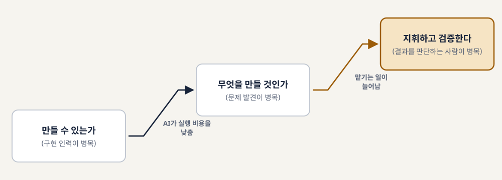
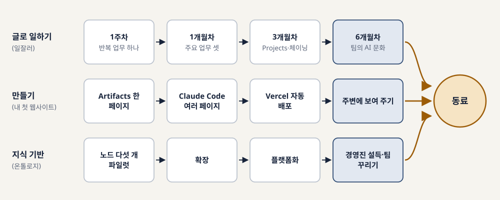
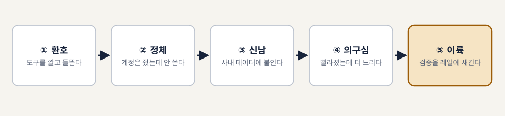
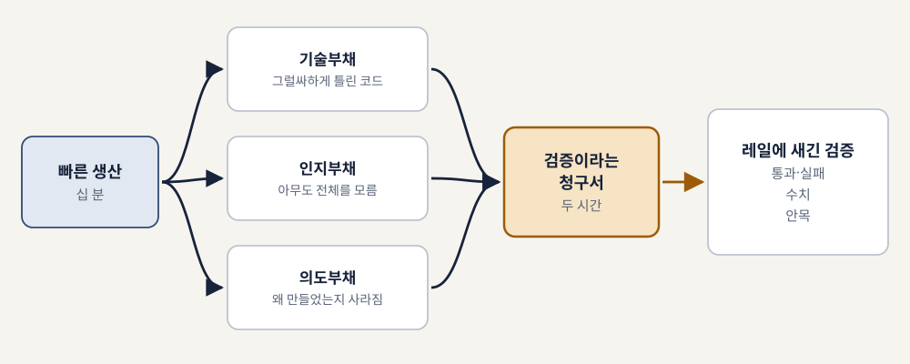
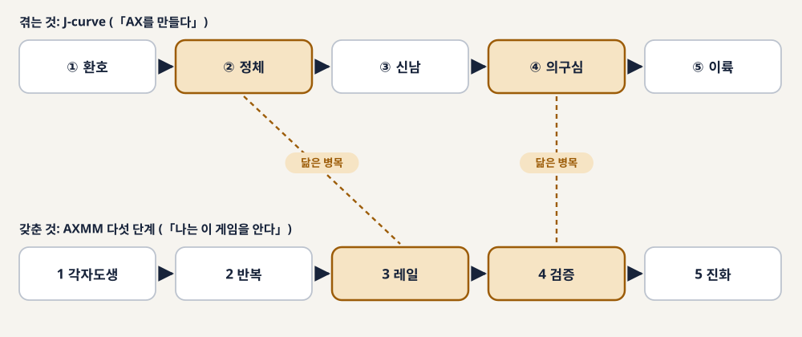
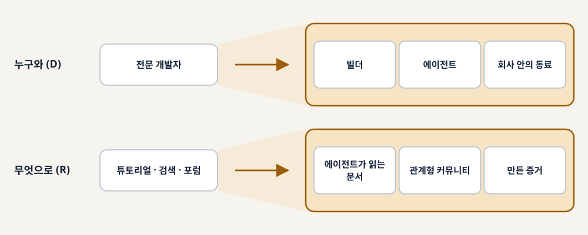

열다섯 권으로 이어 읽는 2026년 AI 전환
김상기
판본: v1.1.0 · 2026-11-07
2026년 4월 28일부터 10월 31일까지, 같은 저자의 이름으로 열다섯 권이 나왔다. 처음 세 주 동안에만 일곱 권이 쏟아졌다. 글로 일하는 직장인을 위한 실습서, 지식그래프 입문서, 코드를 AI가 짜는 시대의 사람을 묻는 책, 비개발자의 첫 웹사이트 실습서, 새 직업의 도감, 조직 재설계의 지도, 그리고 코드 너머 세 권을 묶은 요약편이다. 6월에는 한 사람이 반년 동안 일하는 방식을 다시 짠 기록이 나왔고, 8월에는 조직의 성숙도를 재는 책이, 9월에는 에이전트를 조직에 들이는 체계와 그 체계를 퍼뜨리는 사람들의 책이 나왔다. 10월에는 AI에게 글을 맡긴 편집국, 먼저 말을 거는 조직 에이전트, 에이전트가 돌아가는 자리, 그리고 에이전트의 성적표까지 네 권이 더 나왔다.
이 많은 책을 한 권으로 줄이면 무엇이 될까? 요약을 모은 목록이 되기 쉽다. 장마다 책 한 권을 줄여 싣고 다음 장에서 또 한 권을 줄이면, 독자는 열다섯 개의 결론을 얻지만 그 결론들이 왜 그 순서로 나왔는지는 얻지 못한다. 이 책은 앞 책이 끝에 남긴 문장과 뒤 책이 첫머리에서 받은 문장을 나란히 놓고, 그 둘 사이에서 무엇이 이어지고 무엇이 바뀌었는지를 따라간다.
이어 읽기가 어떤 모양인지 한 곳만 먼저 보자. 5월 2일에 나온 「코드 너머의 시대」는 AI 시대에 어떤 사람으로 살아남을지를 물었다. 보름 뒤에 나온 「코드 너머의 직업들」은 책을 펴내며 이렇게 쓴다. 「전작이 어떤 사람으로 살아남을까에 대한 책이었다면, 이 책은 어떤 자리에서 살아남을까를 다룹니다.」 앞 책이 사람을 물었고 뒤 책은 그 사람이 설 자리를 물었다. 두 문장을 나란히 놓으면 질문이 한 걸음 커진 것이 보인다. 이 책이 열다섯 권 사이에서 찾는 것이 이런 자리다. 봄의 책들 사이에서만 따라가도 질문은 한 사람에서 그 사람이 설 자리로, 다시 그 자리를 만드는 조직으로 옮겨 간다.
물론 모든 이음이 이렇게 분명하지는 않다. 봄의 실습서 세 권은 다른 책을 한 번도 부르지 않는다. 5월의 조직 책과 6월의 AX(AI 전환) 책도 서로를 언급하지 않는다. 그런 곳에서는 두 책의 문장이 같은 주제를 다룬다는 사실만 적고, 한 책이 다른 책을 받았다고 쓰지 않는다. 근거가 원고에 있는 이음과 이 책이 읽어 낸 이음을 섞으면, 독자는 어디까지가 원 책의 말이고 어디부터가 이 책의 해석인지 가리기 어렵다. 그 경계를 흐리지 않으려 한다.
먼저 밝혀 둘 사실이 있다. 열다섯 권은 처음부터 하나의 연작으로 기획된 책이 아니다. 첫 AX 책인 「AX를 만들다」는 후속권을 예고하지 않았고, 8월의 「나는 이 게임을 안다」는 9월에 나올 책들을 알지 못했다. “3부작”이라는 이름은 9월 「디지털 워커의 시대」 서문에서 처음 나온다. 「이 책은 저자의 AX 3부작 가운데 세 번째 권이다」라는 문장이다. 봄의 「코드 너머의 조직」은 「내면(I) → 외형(II) → 환경(III)으로 이어 온 시리즈가 이 책에서 끝납니다」라고 썼는데, 끝났다고 적은 바로 그 자리에서 다음 질문들이 나왔다.
그러니 이 책은 연작의 설계도를 복원하지 않는다. 왜 다음 책을 썼는지는 원고에 거의 적혀 있지 않고, 적혀 있지 않은 동기를 지어내면 그것은 이어 읽기가 아니라 창작이 된다. 동기를 직접 말한 문장은 하나뿐이다. 봄의 요약편 「코드 너머의 시리즈」가 코드 너머 세 권을 두고 「2025~2026년이 AX 시대의 분기점」이라는 진단과 「기록할 시점」이라는 판단을 동력으로 들었다. 이 책은 그 문장을 그 세 권의 이유로만 읽는다. 나머지 열두 권 사이의 관계는 원고에 적힌 문장끼리의 관계로 쓴다. 원 책이 앞 책을 직접 부르는 곳은 그 문장을 인용하고, 원 책끼리 서로 부르지는 않지만 주제가 맞닿는 곳은 그렇다고 밝힌다.
열다섯 권을 이어 읽으면 서로 맞지 않는 문장이 나온다. 6월의 책은 전일제 환산과 토큰 가성비로 사람을 줄 세우는 평가를 경고했는데, 9월의 책은 에이전트가 한 일을 FTE(전일제 환산)로 바꾸는 체계를 내놓는다. 에이전트의 신분을 적는 항목은 다섯 개에서 여덟 개로 늘고, 다시 “누구의 권한으로 일하는가”라는 질문으로 옮겨 간다. 9월 초의 책이 「AX팀을 만드는 순간, 당신의 조직은 AX에 실패한다」를 출발 문장으로 받았는데, 같은 달 말에 쓰인 원고 「들이는 사람들」은 끝을 정해 두고 시작하는 확산 조직을 다룬다.
이런 곳을 매끄럽게 고쳐 맞추면 읽기는 편해진다. 하지만 그러면 한 해 동안 생각이 어디서 어떻게 움직였는지가 지워진다. 이 책은 어긋난 곳을 덮는 대신 바뀐 순서 그대로 보여 준다. 바뀐 이유는 원고에 있는 만큼만 쓰고, 원고에 없으면 없다고 적는다. 바뀐 자리는 마지막 장의 한 표에 모은다.
열다섯 권은 모두 같은 방식으로 쓰였다. 공개된 책 저술 하네스(book-writer)에서 에이전트들이 리서치와 초안을 쓰고, 저자 김상기가 방향을 정하고 계획을 승인했다. 그래서 이 책은 열다섯 권을 같은 지위의 책으로 다룬다. 어느 시리즈는 출판된 책이고 어느 시리즈는 초안이라는 식으로 가르지 않는다.
다만 각 책이 스스로 밝힌 지위는 그대로 옮긴다. 9월 말부터 10월까지 나온 에이전트 시리즈 다섯 권(「DevRel Next」, 「에이전트 편집국」, 「조직 에이전트 2027」, 「에이전트가 사는 곳」, 「에이전트 성적표」)은 하네스의 에이전트가 리서치와 초안을 쓴 판본이고, 그 가운데 뒤의 네 권은 저자가 원고 전문을 검토하기 전의 초안이라고 스스로 밝혔다. 이 책이 이어 읽는 열다섯 권은 모두 웹에 공개되어 있다. 9월에 쓴 「들이는 사람들」은 연말 공개를 앞둔 원고라 열다섯 권에 세지 않고, 9장에서 내용을 짧게 소개하는 데 그친다. 그 원고에 담긴 고유명과 구체 사례는 싣지 않는다. 봄의 「코드 너머의 조직」은 공개 자료와 외부 관찰만으로 쓴 책이라 현장의 1인칭 경험이 없다. 이 사실은 그 책을 다루는 장에서 다시 적는다.
정식으로 출판된 책은 열다섯 권 바깥에 한 권 있다. 2025년에 데브챗 커뮤니티 출신 일곱 명이 함께 쓴 『코드너머, 회사보다 오래 남을 개발자』(한빛미디어, 2025)다. 저자는 그 공저자 가운데 한 명이다. 「코드 너머의 시대」 머리말은 그 공저를 「코드만 잘 짜면 되는 줄 알았던 개발자들에게, 소프트 스킬이라는 ’코드 너머의 세계’가 얼마나 중요한지를 이야기한 책」이라고 소개한다. 열다섯 권의 첫 질문은 이 공저가 1년 전에 던진 질문을 고쳐 쓰는 데서 시작한다.
10월의 「에이전트 편집국」은 글 한 편을 내보낼 때 세 가지를 적자고 권한다. 누가 썼는가, 무엇을 했는가, 누구 책임으로 내보냈는가. 이 책에도 같은 세 가지를 적어 둔다.
누가 썼는가. 이 책의 초안은 열다섯 권과 같은 하네스(book-writer v2.1.2)의 에이전트들이 썼다. 에이전트들은 열다섯 권의 정본 원고를 읽어 레퍼런스를 만들고, 차례를 짜고, 장을 나눠 쓰고, 문체와 사실을 점검했다.
무엇을 했는가. 저자는 차례를 승인했고, 원고만으로는 정할 수 없던 질문 몇 가지에 답했다. 열다섯 권을 같은 지위로 다룰 것, 성과 환산에 관한 두 책의 문장을 어떻게 구분할 것, 권한 원칙에 관한 두 문장을 어떻게 놓을 것 같은 결정이다. 저자가 답하지 않은 자리는 원고의 문장으로만 채웠다.
누구 책임으로 내보냈는가. 편집 책임은 김상기에게 있다. 원고 전문을 저자가 어디까지 검토했는지는 판권에 적는다.
이 책은 네 부(PART 1~4)와 마지막 장으로 되어 있다. 부의 이름은 책이 나온 시기와 그때 던진 질문으로 붙였다. 봄의 PART 1은 코드를 AI가 짜면 그다음은 무엇인지를 묻고, 6~8월의 PART 2는 안에서 만들고 재는 일을, 9월의 PART 3은 거두고 퍼뜨리는 일을, 10월의 PART 4는 맡긴 뒤의 일을 묻는다. 시기를 따라가면 다루는 크기도 개인에서 팀으로, 조직으로, 조직이 시장과 만나는 자리로 커진다. 그림 0-1이 그 흐름이다.
장마다 끝에는 “원래 책으로”라는 상자를 둔다. 그 장이 옮긴 것과 옮기지 못한 것, 그리고 원 책의 주소다. 이 책은 원 책을 대신하지 않는다. 지금 자기 조직이 막힌 자리에 맞는 장을 읽고, 그 상자를 따라 원 책의 해당 장으로 건너가는 편이 낫다. 처음부터 읽으면 질문이 어떻게 커졌는지가 보이고, 중간부터 펴도 그 장의 첫머리가 앞 장의 질문을 다시 꺼내 준다.
읽으면서 눈여겨볼 흐름이 여섯 가지 있다. AI의 결과를 사람이 어떻게 확인하는가(검증), 사고를 막는 길을 어떻게 미리 까는가(레일), 에이전트를 무엇으로 식별하고 어떤 권한을 주는가(신분), 에이전트가 한 일을 무엇으로 세는가(숫자), 다 쓴 에이전트와 할 일을 마친 조직을 어떻게 정리하는가(끝), 그리고 그 모든 일 사이에서 사람이 맡는 일은 무엇인가(사람의 일). 여섯 흐름은 봄의 책들에서 한두 문장으로 처음 나와 10월의 책들에서 표와 기준이 된다. 그 사이에 몇 번 방향을 틀기도 한다.
이 책의 첫 독자로는 AX를 맡은 리더와 실무자를 생각했다. 도구는 이미 나눠 줬고 몇몇 에이전트는 돌고 있는데, 다음에 무엇을 정해야 할지가 막막한 사람이다. 저자의 책을 한두 권 읽었어도 좋고 한 권도 안 읽었어도 괜찮다. 마지막 장을 덮을 때쯤에는 각 크기에서 무엇을 정해야 하는지, 그 가운데 무엇이 확인되었고 무엇이 아직 재지 못한 채로 있는지 가를 수 있게 되기를 바란다.

표 0-1. 2026년 열다섯 권 (초판은 판권 기준, 현재 판은 2026-11-07 기준)
| # | 책 | 초판 | 현재 판 | 주소 | 이 책의 장 |
|---|---|---|---|---|---|
| 1 | 「일잘러의 Claude 활용법」 | 2026-04-28 | v1.0.3 | ksangki.github.io/claude-practical-guide/ | 2장 |
| 2 | 「온톨로지 실전 입문」 | 2026-05-01 | v1.0.3 | ksangki.github.io/ontology-neo4j-ai/ | 2장 |
| 3 | 「코드 너머의 시대」 | 2026-05-02 | v1.0.4 | ksangki.github.io/beyond-code-era/ | 1장 |
| 4 | 「따라 하면 완성되는 내 첫 웹사이트」 | 2026-05-04 | v1.0.5 | ksangki.github.io/claude-static-site-handson/ | 2장 |
| 5 | 「코드 너머의 직업들」 | 2026-05-17 | v1.1.10 | ksangki.github.io/beyond-code-jobs/ | 3장 |
| 6 | 「코드 너머의 조직」 | 2026-05-17 | v1.2.5 | ksangki.github.io/beyond-code-org/ | 4장 |
| 7 | 「코드 너머의 시리즈」 | 2026-05-17 | v1.1.2 | ksangki.github.io/beyond-code-summary/ | 4장 |
| 8 | 「AX를 만들다」 | 2026-06-20 | v1.2.2 | ksangki.github.io/ax-book/ | 5장 |
| 9 | 「나는 이 게임을 안다」 | 2026-08-15 | v1.0.3 | ksangki.github.io/ax-maturity/ | 6장 |
| 10 | 「디지털 워커의 시대」 | 2026-09-11 | v1.6.3 | ksangki.github.io/ax-system/ | 7장 |
| 11 | 「DevRel Next」 | 2026-09-25 | v1.4.2 | ksangki.github.io/devrel-next/ | 8장 |
| · | 「들이는 사람들」 | 2026-09-27 | v1.0.3 | 2026년 말 공개 예정 | 9장 |
| 12 | 「에이전트 편집국」 | 2026-10-11 | v1.2.4 | ksangki.github.io/agent-newsroom/ | 10장 |
| 13 | 「조직 에이전트 2027」 | 2026-10-24 | v1.1.2 | ksangki.github.io/org-agent-2027/ | 11장 |
| 14 | 「에이전트가 사는 곳」 | 2026-10-24 | v1.1.2 | ksangki.github.io/agent-stack/ | 12장 |
| 15 | 「에이전트 성적표」 | 2026-10-31 | v1.1.1 | ksangki.github.io/agent-eval/ | 13장 |
열다섯 권을 이어 읽는 첫걸음은 열다섯 권 바깥에서 시작한다. 2025년의 공저가 던진 질문이 1년 뒤 어떤 문장으로 바뀌었는지부터 보자.
「코드만 잘 짜면 되는 거 아니야?」
서문에서 소개한 2025년 공저 『코드너머, 회사보다 오래 남을 개발자』는 이 질문에서 출발했다. 그 책의 대답은 분명했다. 코드 바깥의 소프트 스킬, 흔히 사소하게 취급되던 경청과 질문과 회의와 협업이 코딩 실력만큼 중요하다는 것이다. 그리고 1년쯤 지난 2026년 5월, 같은 저자의 이름으로 나온 「코드 너머의 시대」는 1장 한 절의 제목을 「이전 책에서 물었던 질문, 그리고 달라진 대답」으로 달고 이렇게 적는다.
「불과 1년여가 지난 지금, 질문 자체가 바뀌었습니다. “코드를 AI가 짜면, 그 다음은?”」
같은 사람이 1년 사이에 질문을 고쳐 쓴 것이다. 앞의 질문은 코드가 사람의 일이라는 걸 전제로 그 바깥을 보라고 했다. 뒤의 질문은 그 전제부터 흔들린 자리에서 나왔다. 이 책은 열다섯 권을 이 두 번째 질문에서 갈라져 나온 갈래로 읽는다. 그리고 그 질문을 조금 더 좁혀 이렇게 적어 두려 한다. 코드를 AI가 짜면, 사람은 무엇으로 남는가?
원 책이 질문을 고쳐 쓰면서 전작의 대답을 버린 것은 아니다. 같은 절에서 원 책은 전작 추천사에 실린 한 문장을 다시 꺼낸다. 「AI가 코딩을 대신할 순 있어도, 함께 일하고 싶은 사람은 결국 협업을 잘하는 사람이다.」 그때는 먼 미래의 이야기처럼 들렸는데 이제는 현재 진행형이 되었다고 적고, 이렇게 덧붙인다. 「그렇다고 전작의 메시지가 틀린 건 아닙니다. 오히려 그 메시지는 더 강력해졌어요.」 머리말의 표현을 빌리면 전작은 “코드 너머를 보라”고 했는데, 이제는 코드 자체의 의미가 달라졌다. 전작에서 경쟁력이던 코드 바깥의 역량을, 「코드 너머의 시대」는 생존의 조건이라고 부른다. 같은 말이 1년 사이에 무게를 바꿔 달았다.
「코드 너머의 시대」는 혼자 나온 책이 아니다. 2026년 4월 28일부터 5월 17일까지 세 주 사이에 일곱 권이 나왔다. 판권 날짜로 줄을 세우면 글로 일하는 직장인을 위한 「일잘러의 Claude 활용법」(4월 28일)과 「온톨로지 실전 입문」(5월 1일)이 「코드 너머의 시대」(5월 2일)보다 먼저 나왔고, 「따라 하면 완성되는 내 첫 웹사이트」(5월 4일)가 그 뒤를 이었다. 5월 17일에는 「코드 너머의 직업들」, 「코드 너머의 조직」, 그리고 세 권을 묶은 요약편 「코드 너머의 시리즈」가 같은 날 나왔다.
이 순서를 “질문을 차례로 키워 갔다”고 읽고 싶은 유혹이 생긴다. 하지만 세 주는 생각을 차례로 키우기에는 짧은 시간이다. 판권과 더 잘 맞는 서술은 같은 봄에 같은 질문을 여러 독자층에 나눠 던졌다는 쪽이다. 실습서 세 권은 다른 책을 한 번도 부르지 않는다. 서로를 부르는 것은 코드 너머 세 권과 요약편뿐이다. 그래서 이 책의 PART 1은 쓰인 날짜 대신 다루는 크기를 따라 놓는다. 질문을 세운 「코드 너머의 시대」를 먼저 읽고, 도구를 손에 쥔 실습서 셋, 그 사람이 설 자리를 그린 「코드 너머의 직업들」, 그 자리를 품을 조직을 그린 「코드 너머의 조직」 순서로 간다.
「코드 너머의 시대」 1장은 한 장면으로 연다. 월요일 아침, 마케팅팀의 한 대리가 주말 세 시간 동안 Claude와 대화해서 설문 데이터를 분석해 주는 앱을 만들었다며 봐 달라는 메시지를 보낸다. 장면은 1인칭으로 쓰였지만, 원 책이 질문을 세우려고 꾸린 가상 장면으로 읽는 편이 안전하다. 장면이 겨누는 곳은 분명하다. 코드를 한 줄도 짜 본 적 없는 사람이 돌아가는 앱을 만들었을 때, 그 앱을 봐 달라는 부탁을 받은 개발자는 무엇을 봐야 하는가. 그때 드는 감정을 원 책은 「놀라움 반, 불안 반」이라고 적었다. 반가우면서도 어딘가 찜찜한 그 기분이 이 책 전체의 출발점이다.
먼저 무엇이 달라졌는지부터 보자. 원 책은 두 낱말을 가른다. 바이브 코딩은 사람이 “이거 만들어 줘”, “저거 고쳐 줘”라고 한 줄씩 지시하고 AI가 만드는 방식이다. 에이전틱 코딩은 목적지만 말하면 AI가 스스로 계획을 세우고, 코드를 쓰고, 테스트하고, 에러가 나면 고치는 방식이다. 원 책의 비유로는 앞의 것이 내비게이션 안내를 받으며 직접 운전하는 일이고, 뒤의 것이 목적지만 말하면 차가 알아서 가는 자율주행에 가깝다. 만드는 사람의 얼굴도 바뀌었다. 원 책이 인용한 Vercel의 State of Vibe Coding 2025에 따르면 자사 AI 개발 도구 v0 사용자의 63%가 비개발자였다. 도구를 파는 회사가 자기 사용자를 센 숫자라는 점은 감안해야 하지만, 코드를 모르는 마케터와 기획자가 직접 만들기 시작했다는 방향은 분명하다.
그 불안을 원 책은 숫자로 나눠 본다. 먼저 원 책 2장의 문장이다. 「지금 바뀌고 있는 것은 일자리의 총량보다 성격입니다.」 같은 장에는 상반되어 보이는 두 숫자가 나란히 놓인다. Stanford Digital Economy Study에 따르면 22~25세 소프트웨어 개발자의 고용은 2022년보다 약 20% 줄었다. 미국 노동통계국(BLS)은 2033년까지 소프트웨어 엔지니어 일자리가 17% 늘어난다고 본다. 둘 다 믿을 만한 기관의 숫자인데 방향이 반대다. 원 책 2장은 「두 숫자는 서로 다른 일자리를 세고 있습니다」라고 풀었다. 줄어드는 쪽은 초급 수준의 반복적 코딩이고, 늘어나는 쪽은 그 위에서 판단하는 일이다.
두 번째 숫자는 일을 맡기는 정도다. 원 책이 인용한 Anthropic의 Agentic Coding Trends Report(2026)에 따르면 개발자들은 업무의 약 60%에서 이미 AI를 쓰고 있었다. 그런데 AI에게 완전히 맡길 수 있는 작업은 0~20%에 그쳤다. AI를 쓰는 작업 가운데 약 27%는 AI가 없었다면 아예 시작하지 않았을 작업이라는 숫자도 함께 나온다. 이 보고서는 AI 모델을 파는 회사가 자기 제품의 쓰임을 정리한 자료라 이해관계가 있다는 점은 감안하고 읽자. 그래도 원 책이 이 숫자에서 끌어낸 문장은 기억할 만하다. 「현재 시점에서 AI는 후임자보다 조수에 가깝습니다.」 쓰는 일과 맡기는 일 사이에 60과 20의 간격이 있고, 그 간격을 사람이 메운다는 뜻이다. 자율주행에 빗대면 지금의 도구가 차선을 유지하고 앞차와 거리를 맞추는 운전 보조 수준이다. 운전석에는 여전히 사람이 앉아 있다.
물론 원 책도 이 문장에 “아직”이라는 단서를 붙인다. 기술은 계속 나아가고 완전히 맡길 수 있는 범위는 넓어질 것이다. 그러니 안심하라는 뜻으로 이 숫자를 읽지는 말자. 원 책의 당부는, 그 “아직”의 시간이 3년일지 10년일지는 아무도 모르지만, 그 시간 안에 AI가 일을 통째로 넘겨받더라도 사람만 할 수 있는 일이 무엇인지 찾아 두라는 것이다. 이 장의 질문이 “사람은 무엇을 하는가”보다 “사람은 무엇으로 남는가”에 가까운 이유가 여기 있다. 지금 하는 일의 목록은 해마다 줄어들 수 있지만, 그 목록이 줄어든 뒤에도 사람에게 붙어 있을 무언가를 묻는 질문이기 때문이다.
그렇다면 AI가 가져간 것은 무엇이고, 가져갈 수 없는 것은 무엇일까? 원 책 3장과 4장이 이 경계를 긋는다. 원 책 7장이 같은 Anthropic 보고서로 귀속한 숫자로는 보일러플레이트 코드 생성의 62%, 버그 수정의 58%, 테스트 작성의 57%가 이미 AI의 도움을 받는다. 셋 다 패턴이 뚜렷하고 반복되며 기존 데이터에서 배울 수 있는 일이다. 이를 원 책은 「이전에 누군가가 수천 번, 수만 번 해본 적 있는 일」이라고 불렀다. 반대편에는 무엇을 만들지 정하는 판단, 여러 시스템 사이의 맥락을 읽는 일, 「거의 맞지만 완전하지 않은」 결과를 완전하게 만드는 감각이 있다. 4장은 여기에 공감과 윤리적 판단, 그리고 Microsoft가 정리한 5C(호기심·비판적 사고·창의성·소통·인격)를 보탠다.
표 1-1. AI가 가져간 것과 가져갈 수 없는 것 (「코드 너머의 시대」 3·4장)
| AI가 가져가고 있는 것 | AI가 가져갈 수 없는 것 |
|---|---|
| 코드를 타이핑하는 일 자체 | 무엇을 만들어야 하는지 정하는 판단 |
| 이미 알려진 패턴을 반복해 적용하는 일 | 여러 시스템 사이의 맥락을 이해하는 일 |
| 정답이 분명한 기계적 작업 | “거의 맞지만 완전하지 않은” 것을 완전하게 만드는 감각 |
| 이전 코드를 복사해 조금 고치는 일 | 비즈니스 요구를 기술 설계로 옮기는 일, 공감과 윤리적 판단 |
원 책은 이 표에서 역설 하나를 읽어 낸다. AI가 가져간 것은 대부분 실행에 해당하는 일이고, 그 빈자리에 들어오는 것은 판단에 해당하는 일이라는 것이다. 타이핑이 빠르고 문법에 밝던 사람에게는 적응이 필요한 시기이고, 전체 그림을 보고 문제를 쪼개던 사람에게는 기회가 되는 시기다. 원 책은 4장 첫머리에서 3장의 목록을 처음 봤을 때 「솔직히 마음이 무거웠습니다」라고 털어놓은 뒤, 남는 것들 가운데 상당수는 독자가 이미 가지고 있는 것들이라고 적는다.
실행이 싸지면 무엇이 비싸질까? 원 책 6장은 한 문장으로 말한다. 「이제 병목은 ’무엇을 만들어야 하는가’로 옮겨갔습니다.」
오랫동안 소프트웨어의 병목은 만들 수 있느냐에 있었다. 아이디어는 넘쳤고 구현할 사람이 모자랐다. “좋은 아이디어인 건 알겠는데 개발 리소스가 없어서요”라는 한마디에 사라진 기획이 얼마나 많았는지는 회의실에 앉아 본 사람이면 짐작이 갈 것이다. AI가 만드는 비용을 크게 낮추자 그 제약이 풀렸다. 원 책은 이 변화를 활과 기관총에 빗댄다. 화살이 귀할 때는 한 발을 쏘기 전에 몇 달을 검토했지만, 탄약이 넉넉해지면 이제 중요한 것은 어디를 겨냥하느냐다. 겨냥 없이 빨라진 속도는 빠른 낭비가 되기 쉽다. 앞에서 본 27%, 다시 말해 AI가 없었다면 시작하지 않았을 작업의 비중도 같은 쪽을 가리킨다. 할 수 있는 일이 열 가지일 때는 고르기가 어렵지 않다. 천 가지가 되면 그 가운데 정말 해야 할 것을 골라내는 힘이 결정적으로 중요해진다. 원 책은 그 힘을 문제 발견력이라고 부른다.
원 책이 든 예시 하나가 이 차이를 잘 보여 준다. 고객 지원팀에서 채팅봇 응답 속도를 개선해 달라는 요청이 들어왔다고 해 보자. 문제를 푸는 사람은 서버를 손보고 모델을 가볍게 하고 캐시를 붙여 응답 시간을 줄인다. 문제를 찾는 사람은 먼저 로그를 열어 본다. 원 책의 예시에서는 고객의 70%가 첫 응답 직후 상담원 연결을 요청하고 있었다. 고객이 불만스러워한 것은 응답의 품질이었다. AI에게 응답 속도를 개선하라고 시키면 AI는 정말 훌륭하게 속도를 개선해 준다. 하지만 이것이 풀어야 할 진짜 문제인지는 묻지 않는다.
그래서 원 책은 문제를 푸는 사람에서 문제를 찾는 사람으로 옮겨 가자고 권하고, 그 힘을 기르는 다섯 가지 관점을 든다. 사용자가 실제로 제품을 쓰는 현장에 가까이 머물고, 다른 분야에 호기심을 두고, 도요타의 “왜”를 다섯 번 묻고, 일상의 불편함을 그냥 넘기지 않고, 해결책부터 떠올리는 버릇을 누르는 것이다. 마지막 관점에 대해서는 원 책이 「솔직히 저도 여전히 자주 빠지는 함정」이라고 적었다. 새 도구를 보면 이걸로 뭘 만들 수 있을지가 먼저 떠오르는 사람일수록 이 함정이 깊다.
여기서 원 책은 한 사람의 시야를 넘어선다. 같은 장의 「조직 차원의 문제 발견력」 절은 큰 문제일수록 혼자 발견하기 어렵다고 적는다. 개발팀은 기술 부채를, 마케팅팀은 고객 인식의 변화를, 고객 지원팀은 사용자의 불만을 가장 먼저 안다. 풀 가치가 있는 문제는 이 시야들이 겹치는 곳에 있어서, 부서 사이의 벽을 낮춰야 보인다. 하나가 더 있다. “이게 진짜 문제가 맞나요?”라고 물었다가 그 질문이 틀렸다고 비난받는 곳에서는 아무도 다시 묻지 않는다. 좋은 질문은 많은 틀린 질문 속에서 나오고, 틀린 질문이 허용되려면 전작이 강조한 심리적 안전감이 있어야 한다. 원 책 1장의 질문은 개인에게 던져졌지만, 그 질문에 대답하는 데 필요한 조건 가운데 일부는 처음부터 조직 쪽에 놓여 있었다.

그림의 세 번째 상자는 원 책 6장이 아니라 7장에서 온다. 무엇을 만들지 정했다고 일이 끝나지는 않는다. 0~20%만 완전히 맡길 수 있다면, 나머지 일은 사람과 AI가 나눠 해야 하고 그 나눔을 누군가 이끌어야 한다.
원 책 7장의 마지막 절 제목은 「경쟁하지 마세요, 지휘하세요」다. 7장은 흔히 듣는 문장 「AI가 당신을 대체하지 않습니다. AI를 사용하는 사람이 대체합니다」를 다시 읽으면서, 이 문장에서 무게가 실린 단어는 “사용”보다 “대체”라고 짚는다. AI와 같은 일을 더 빨리 하려고 경쟁하는 사람은 지게 되어 있다. 바이올린과 경쟁하는 지휘자는 없다. 지휘자는 악기마다의 특성을 알고, 언제 어떤 역할을 맡길지 정하고, 전체가 한 곡이 되게 이끈다.
그렇다면 지휘는 구체적으로 무엇을 하는 일일까? 원 책은 인간 감독을 네 가지 동작으로 푼다. 먼저 작업의 맥락과 제약을 분명히 건넨다. “이 기능을 만들어 줘” 대신 어떤 사업 맥락에서 어떤 사용자를 위해 어떤 제약 아래 필요한지를 말한다. 다음으로 결과물을 평가할 기준을 미리 정한다. 코드라면 성능과 보안 요구와 코딩 규칙을, 기획서라면 들어가야 할 항목과 분량을 적어 둔다. 그리고 단계마다 확인한다. 최종 결과물을 한 번에 받는 대신 설계를 먼저 보고, 설계가 괜찮으면 구현을 맡기고, 구현을 다시 본다. 마지막으로 AI가 틀릴 수 있다는 전제를 놓지 않는다. 이 마지막 동작의 요약은 이렇다. 「신뢰하되 검증하는 것이 인간-AI 협업의 기본 자세예요.」
같은 장은 흔한 실수 셋을 들면서 두 번째로 “검증 없는 수용”을 꼽는다. AI가 자신 있는 어조로 내놓은 결과를 그대로 받아들이는 일이다. 시간이 없을 때일수록 이 유혹이 커진다. 그런데 바로 그 순간이 가장 위험하다. 검증 없이 쓴 결과에서 나중에 문제가 터지면 아낀 시간의 몇 배를 수습에 쓴다. 마감 전날 밤에 받은 그럴듯한 초안을 그대로 올리고 싶은 마음, 누구나 한 번은 겪어 봤을 난감한 순간이다. 첫 번째 실수는 과도한 기대, 세 번째 실수는 모든 일에 AI를 쓰려는 것이다. 간단한 일을 AI에게 설명하고 결과를 확인하는 데 걸리는 시간이 직접 하는 시간보다 길 때도 있다. AI를 「유능하지만 감독이 필요한 주니어」로 생각하라는 권고가 함께 나온다. 언제 맡기고 언제 직접 할지 가르는 것까지 지휘에 들어간다.
원 책은 이렇게 일하는 사람을 “AI 오케스트레이터”라고 부르고, 그것을 특정 직업의 이름이라기보다 모든 직무에 스며드는 역량으로 본다. 개발자이면서 오케스트레이터, 마케터이면서 오케스트레이터인 식이다. 한 국내 IT 서비스 기업이 한 말이 그 역할을 요약한다. 「AI가 대신 만들어낸 결과물을 올바르게 이해하고 평가하며, 전체 시스템 안에서 의미 있게 연결할 수 있는 능력이 핵심이다.」 여기서 전작의 협업 이야기가 다시 이어진다. 좋은 팀원이 되는 법을 아는 사람이 좋은 오케스트레이터가 될 가능성도 높다. 경청하고, 분명히 말하고, 상대의 강점을 살리는 능력은 협업의 상대가 사람이든 AI든 똑같이 필요하기 때문이다.
이 장에서 처음 나온 두 말을 기억해 두자. 하나는 “검증”이다. 「코드 너머의 시대」에서 검증은 아직 한 사람이 AI의 결과를 확인하는 태도다. 이 말은 한 해 동안 습관이 되고, 성숙도의 단계가 되고, 신뢰도를 깎는 계수가 되고, 채점기를 다시 맞추는 절차가 된다. 다른 하나는 “사람의 일”이다. 지휘하는 사람이 맡는 일이 무엇인지도 같은 해에 몇 번 고쳐 쓰인다. 원 책은 여러 에이전트를 조율하는 일을 사람의 몫이라고 적었을 뿐 그 운영법까지 쓰지는 않았다. 운영법은 뒤에 나온 책들이 하나씩 채운다.
원 책 마지막 장은 전작의 결론을 한 번 더 넓힌다. 전작이 말한 것은 「회사보다 오래 남을 개발자」였다. 회사도 직무도 기술도 바뀌지만, 자기만의 역량과 가치관을 가진 사람은 어디서든 필요하다는 뜻이었다. 「코드 너머의 시대」는 여기서 한 걸음 더 나간다. 「시대보다 오래 남을 사람.」
원 책은 그런 사람의 조건을 넷으로 그린다. 특정 기술에 자기 정체성을 걸지 않는 사람, 어떤 기술이든 빨리 배우는 사람, 변화를 호기심으로 받는 사람, 그리고 무엇보다 사람과의 관계에서 신뢰를 쌓는 사람이다. 마지막 조건이 눈에 띈다. 코드를 AI가 짜는 시대를 다룬 책이 오래 남는 사람의 조건 맨 끝에 사람 사이의 신뢰를 놓았다. 「코드 너머의 시대」는 전작에서 꼽았던 소프트 스킬 목록(경청, 질문법, 회의, 자기 인식, 회복탄력성, 심리적 안전감, 기술 공유, 퍼스널 브랜딩)이 놀라울 만큼 AI 시대의 역량과 겹친다고 적는다. 경청은 문제를 찾는 힘의 출발점이 되고, 질문법은 AI와 협업할 때의 기본기가 된다. 1년 전의 대답이 틀린 것이 아니라, 1년 사이에 그 대답이 놓인 자리가 바뀐 것이다.
원 책은 이 변화를 바라보는 두 시선도 나란히 둔다. 하나는 두려움이다. AI가 내 일자리를 빼앗고, 내가 배운 것이 쓸모없어질 것이라는 생각이다. 다른 하나는 기회다. 예전에는 시도하지 못했던 것을 해 볼 수 있게 되었고, 비개발자도 아이디어를 직접 만들어 볼 수 있게 되었다는 생각이다. 원 책은 두 시선이 변화를 얼마나 정확히 이해하느냐에서 갈린다고 본다. 두려움을 없애라는 말은 하지 않는다. 두려움 때문에 손이 멈추는 쪽을 더 경계한다. 무엇이 사라지고 무엇이 그대로이며 무엇이 새로 생기는지를 알면, 막연한 불안이 구체적인 행동으로 바뀐다.
물론 이 조건들은 아직 한 사람의 태도에 관한 이야기다. 사람이 지휘하는 쪽으로 간다는 방향은 분명한데, 그 지휘가 어떤 일에서 시작되는지는 원 책 마지막 장의 작은 제안 하나로만 나온다. 원 책은 「내일 할 수 있는 한 가지」라는 절에서 이렇게 권한다. 개발자라면 평소 반복하던 작업 하나를 AI에게 맡기고 그 결과를 꼼꼼히 검토해 보라. AI가 잘한 부분과 놓친 부분을 구분해 보라. 비개발자라면 자기 업무에 관한 질문 하나를 던지고 그 답변을 평가해 보라. 그리고 이번 주에 배운 한 가지를 다른 사람과 나눠 보라.
거창한 제안은 아니다. 원 책은 마지막 쪽에 「코드가 사라진 자리에, 사람이 남습니다」라고 썼다. 그 문장이 맞는지는 내일 아침 반복 작업 하나를 AI에게 맡기고 결과를 들여다볼 때 처음 확인된다. 그 자리에서 사람은 무엇으로 남는가?
코딩을 한 번도 해 본 적 없는 기획자가 토요일 하루를 비워 자기 포트폴리오 사이트를 만들어 보기로 했다고 해 보자. 아침에 Claude 계정을 만들고, 대화창에 “내 소개 페이지 만들어 줘”라고 한국어로 적는다. 화면 옆에 미리보기가 뜬다. 이름과 경력이 들어갈 자리가 있는 그럴듯한 한 페이지다. 색이 마음에 들지 않아 조금 차분하게 바꿔 달라고 하고, 휴대폰에서도 보이게 해 달라고 한다. 점심을 먹고 나서는 만든 파일을 GitHub에 올리고 GitHub Pages를 켠다. 저녁 무렵, 자기 이름이 적힌 주소가 브라우저에 뜬다.
이 장면은 원 책의 안내에 기댄 가정이다. 봄에 나온 실습서 「따라 하면 완성되는 내 첫 웹사이트」는 한 장을 따라 하는 데 30분에서 1시간이면 충분하고 「주말 하루면 포트폴리오 사이트 하나가 뚝딱 완성될 수 있어요」라고 안내한다. 1장 끝에서 「코드 너머의 시대」는 반복 작업 하나를 AI에게 맡기고 그 결과를 검토해 보라고 권했다. 원 책끼리 서로를 부르지는 않지만, 같은 봄에 나온 실습서 세 권의 첫 장은 그 제안을 손에 쥘 수 있는 크기로 바꿔 놓은 것처럼 읽힌다.
그런데 하루 만에 사이트를 띄운 그 기획자는 다음 주 월요일에 무엇을 할까? 이 장은 세 실습서가 개인에게 무엇을 먼저 바꿔 놓는지, 그리고 세 권 모두 어디서 혼자로는 모자라지는지를 따라간다.
「내 첫 웹사이트」의 머리말은 한 질문으로 시작한다. 「저도 웹사이트를 만들 수 있을까요?」 원 책의 대답은 「네, 지금 바로요」다. 원 책은 불과 2년 전만 해도 이 대답이 절반은 위로, 절반은 과장이었을 거라고 덧붙인다. 지금은 진심으로 하는 말이라는 것이다. 이 실습서가 독자에게 요구하는 기술은 하나뿐이다. 「여러분이 해야 할 일은 Claude에게 한국어로 말을 거는 것이에요.」
마지막 장은 그 과정을 한 문장짜리 사이클로 정리한다. 「Claude에게 설명하기 → 결과 확인하기 → 수정 요청하기」. 사이클은 단순하지만 세 동작 가운데 가장 중요한 것은 가운데에 있다. 설명은 누구나 할 수 있고 수정 요청도 어렵지 않다. 그런데 결과를 확인하지 않으면 무엇을 고쳐 달라고 할지 알 수 없다. 1장이 말한 지휘를 한 사람이 혼자 해 보는 첫 연습이다.
원 책 7장에는 눈여겨볼 장면이 하나 있다. 독자는 한 페이지짜리 포트폴리오를 넘어 여러 페이지로 된 이벤트 후기 사이트를 만들기 시작하고, 그 순간 도구가 바뀐다. 지금까지 쓰던 Artifacts는 대화창 옆에 코드를 보여 주기만 해서 독자가 직접 복사해 파일로 저장해야 했다. 파일이 열 개, 스무 개로 늘면 그 일이 금세 번거로워진다. 그래서 원 책은 Claude Code를 꺼낸다. Claude Code는 독자의 컴퓨터에서 폴더를 만들고 파일을 만들고 고치는 일까지 직접 한다. 원 책의 비유로는 Artifacts가 설계도를 보여 주는 건축가이고, Claude Code는 설계와 시공을 함께 하는 건축가다.
이 장면은 실습서 안에서는 도구 하나를 바꾸는 대목이지만, 열다섯 권을 이어 읽는 쪽에서 보면 의미가 크다. 묻고 받아 적던 대화형 도구에서, 목표를 말하면 스스로 여러 단계를 처리하는 에이전트형 도구로 넘어가는 개인의 첫 장면이기 때문이다. 독자에게 React 코드를 직접 쓸 일은 없다고 원 책은 안심시킨다. 독자가 할 일은 어떤 사이트를 만들고 싶은지 말로 설명하는 것뿐이다.
막혔을 때 할 일도 원 책은 따로 묶는다. 에러 메시지를 읽고, Claude에게 그 에러를 보여 주고, 검색으로 확인하는 것이다. 이것을 원 책은 “문제 해결 능력”이라고 부르고, 마지막 장에서 독자를 이렇게 부른다. 「이런 사람을 요즘은 메이커(Maker)라고 불러요.」 개발자가 되지 않아도, 코드를 외우지 않아도, 만들고 싶은 것이 있을 때 만들 수 있다는 자신감이면 충분하다는 것이다.
웹사이트가 하얗게 뜨면 어디부터 손대야 할지 막막하다. 트러블슈팅을 모은 「내 첫 웹사이트」 9장은 화면에 뜬 에러 메시지를 그대로 복사해 Claude에게 보여 주라고 권하고, 장 끝에서 놀랐을 독자를 다독인다. 전문 개발자도 매일 에러를 만나고, 다른 점이 있다면 에러를 보고 “아, 또 왔네” 하며 해결법을 찾는다는 것뿐이라고. 처음 AI로 무언가를 만들어 본 사람이 가장 먼저 부딪히는 벽은 기술보다 이 막막함이다. 그럴 때 에러 메시지를 붙여 넣는 동작 하나가 혼자 끙끙 앓는 시간을 줄여 준다. 다만 이 동작도 결과를 읽는 사람이 있어야 성립한다. 에러를 읽지 않고 “안 돼”라고만 적으면 AI도 고칠 곳을 찾기 어렵다.
「일잘러의 Claude 활용법」은 글로 일하는 직장인을 맡는다. 보고서를 쓰고, 이메일을 보내고, 데이터를 정리하고, 기획서를 만드는 사람이다. 「일잘러」의 머리말도 질문 하나로 연다. 「AI를 쓰면 일이 빨라진다는데, 왜 내가 쓰면 별로인 걸까?」
이 질문이 낯설지 않은 사람이 많을 것이다. 옆자리 동료는 AI로 보고서를 뚝딱 만들어 내는데, 같은 도구를 쓰는 나는 “역시 AI는 아직 멀었어”라며 고개를 젓게 된다. 그 차이가 어디서 오는지를 찾아가던 원 책은 이렇게 적는다. 「그 차이를 만드는 것은 도구가 아니라 “쓰는 법”이라는 사실을 알게 되었다.」 그리고 자기 기본 태도를 한 줄로 밝힌다. 「“의심하되 활용하라”가 이 책의 기본 태도다.」
쓰는 법의 첫 부분은 프롬프트다. 명확하고 직접적으로 말하고, 맥락을 함께 건네고, 예시를 보여 주고, XML 태그로 구조를 잡고, 역할을 부여하는 다섯 원칙이다. 하지만 「일잘러」가 프롬프트만큼 무게를 두는 것은 그다음 단계, 결과 검증이다. 마지막 장의 로드맵도 첫 주부터 이것을 강조한다. 1주차에는 매일 하는 일 가운데 가장 단순한 반복 업무 하나를 고르라고 한다. 처음부터 복잡한 분석이나 기획에 도전하면 프롬프트를 쓰는 데 시간을 빼앗겨 “그냥 내가 하는 게 빠르다”는 결론에 이르기 쉽기 때문이다. 그리고 결과를 반드시 검토하라고 한다. 원 책은 이 습관을 나중에 더 복잡한 일을 맡길 때의 안전망이라고 부른다. 1주차가 끝나면 스스로에게 묻는다. Claude 덕분에 실제로 시간이 절약된 업무가 하나라도 있는가? 하나라도 있다면 성공이다. 원 책은 AI가 사실이 아닌 정보를 사실처럼 만들어 내는 환각을 구조적으로 완전히 없앨 수는 없다고 본다. Claude가 모를 때 모른다고 답하는 경향이 있어 상대적으로 나은 편이라는 설명을 하면서도, 상대적으로 낫다는 말과 문제가 없다는 말은 다르다고 선을 긋는다. 그래서 세 가지 습관을 권한다. 수치와 날짜와 고유명사는 따로 확인한다. 프롬프트에 “출처와 함께 답변해 줘”를 붙인다. 중요한 결정에는 다른 모델이나 자료나 동료로 교차 확인한다. 그리고 이 절을 이 문장으로 닫는다. 「신뢰하되 검증하고, 의심하되 활용하자.」
이 문장은 1장에서 본 「코드 너머의 시대」의 「신뢰하되 검증하는 것」과 거의 같다. 두 책은 서로를 부르지 않지만 같은 저자의 이름으로 나흘 간격을 두고 나왔다. 하나는 지휘하는 사람의 태도로, 다른 하나는 보고서를 쓰는 직장인의 습관으로 같은 말을 적었다. 검증이라는 말이 「일잘러」에서 처음으로 체크리스트의 모양을 얻는다.
그렇다면 검증에 얼마나 공을 들여야 할까? 일일이 확인할 거라면 직접 하는 것과 무엇이 다른가 하는 의문이 드는 것이 자연스럽다. 원 책의 계산은 이렇다. 백지에서 시작하는 것과 80% 완성된 초안에서 시작하는 것은 완전히 다른 경험이다. 다만 그 80%를 100%로 만드는 데는 사람의 판단과 검증이 있어야 한다. 마지막 장의 로드맵은 같은 생각을 더 짧게 적는다. 「목표는 80점짜리 초안을 3분 만에 받고, 나머지 20점을 사람이 채우는 것이다.」 이 20점이 1장이 물은 “사람은 무엇으로 남는가”에 대한 실습서 쪽의 첫 대답처럼 들린다. 하지만 그 20점이 무엇으로 이루어지는지는 사람마다, 일마다 다르다. 원 책도 그것을 채워 주지는 않는다. 1개월차를 다루는 대목에서 원 책은 이 시기에 실망하기 쉽다고 적는다. 기대가 너무 높으면 작은 오류에도 “역시 AI는 아직 멀었어”라고 판단하게 된다는 것이다. 80점과 20점이라는 계산은 그 실망을 다루는 방법이기도 하다. 처음부터 100점을 기대하지 않으면, 사람이 채울 20점이 무엇인지에 눈이 간다.
한 가지 짚어 둘 곳이 있다. 「일잘러」의 1장과 마지막 장은 하버드 비즈니스 스쿨과 BCG의 공동 연구를 들어 AI를 쓰는 지식 노동자의 생산성이 두 자릿수로 올랐다고 소개한다. 같은 실험을 3주 뒤에 나온 「코드 너머의 직업들」은 다르게 읽는다. 어떤 작업에서는 크게 도움이 되었지만 어떤 작업에서는 오히려 정확도가 떨어졌다는 쪽까지 함께 적는다. 실습서는 독자를 시작하게 만드는 책이라 좋은 쪽 숫자를 앞에 두었고, 직업 책은 그 경계를 따로 다뤘다. 이 책은 뒤쪽의 균형을 따른다. 그 이야기는 다음 장에서 자세히 하자.
「일잘러」는 개인의 습관에서 멈추지 않는다. 원 책 9장은 AI를 똑똑하게 쓰는 조직을 다루면서, 아마 열다섯 권 가운데 가장 작은 단위의 거버넌스를 적는다. 먼저 개인정보를 다룰 때의 마스킹이다. 이름을 “고객A”로 바꾸고, 연락처는 지우고, 날짜는 월이나 분기로 뭉뚱그리고, 금액은 구간으로 바꾼다. 원 책은 마스킹이 귀찮은 추가 작업처럼 보여도 사실은 AI 활용의 기본 전처리라고 적는다. 마스킹 작업 자체를 Claude에게 맡길 수도 있지만, 그 경우에도 원본 데이터가 AI로 넘어가니 정말 민감한 데이터라면 손으로 마스킹한 뒤 넣으라는 단서도 붙인다. 다음은 팀이 함께 정할 가이드라인의 다섯 영역이다. 어떤 데이터를 넣어도 되는지(데이터 입력 원칙), AI가 만든 것을 내보내기 전에 누가 검토하는지(결과물 검토 의무), 언제 AI를 썼다고 밝히는지(AI 사용 표시 기준), 어떤 도구를 써도 되는지(허용 도구 목록), 그리고 그것을 어떻게 가르치고 나누는지(교육과 공유)다.
왜 이것이 조직의 일일까? 원 책이 든 장면을 보면 짐작이 간다. 팀에서 AI를 쓰기 시작하면 누군가는 고객 데이터를 그대로 넣고, 누군가는 결과를 검토 없이 제출하고, 누군가는 AI를 쓴 사실을 숨긴다. 한 사람의 습관이 아무리 좋아도 옆 사람의 습관까지 바꿀 수는 없다. 원 책은 가이드라인을 처음부터 완벽하게 만들 필요는 없고 핵심 원칙 몇 가지로 시작해 쓰면서 고쳐 가면 된다고 적었다. 다섯 영역 가운데 AI 사용 표시 기준은 특히 눈여겨볼 만하다. 원 책은 내부 문서와 외부 문서, 비공식 소통과 공식 보고서를 나눠 어떤 글에서 AI를 썼다고 밝힐지 현실적인 기준을 세우자고 한다. 봄에 나온 실습서의 한 문단이지만, 누가 무엇을 썼는지를 밝히는 일은 가을까지 계속 자란다. 이 책의 서문에 적은 제작 고지 세 줄도 그 연장선에 있다. 그리고 원 책은 9장을 이렇게 닫는다. 「AI 활용의 목표는 “더 빠르게”가 아니라 “더 똑똑하게”다.」 데이터 입력 원칙과 결과물 검토 의무라는 두 영역은 가을의 책들이 다루는 등록 절차와 승인 단계를 미리 아주 작게 그려 둔 것처럼 읽힌다.
세 번째 실습서는 결이 다르다. 「온톨로지 실전 입문」의 독자는 기술 리더와 구현 개발자이고, 본문에는 Cypher와 Python 코드가 가득하다. 그래도 「온톨로지」의 출발 질문은 누구나 알아들을 수 있다. 「AI 챗봇에게 우리 회사의 HR 정책을 정확하게 설명하게 하려면 어떻게 해야 할까?」
원 책의 진단은 이렇다. 문서를 조각내 비슷한 조각을 찾아 주는 벡터 검색만으로는 조각과 조각 사이의 연결을 따라가지 못한다. 어떤 직원이 어떤 복리후생을 받는지 알려면 직급과 근속과 고용 형태를 여러 단계 건너가며 이어야 하는데, 그런 여러 단계의 추론에는 관계를 명시한 구조가 있어야 한다. 원 책은 FalkorDB의 2025년 평가를 들어 벡터 기반 검색의 정확도가 56.2%, 그래프 기반 검색이 90% 이상이었다고 적는다. 그래프 데이터베이스를 파는 회사의 평가라 이 숫자는 방향 정도로 읽는 편이 낫다. 원 책이 고른 해법은 온톨로지로 지식의 뼈대를 세우고 그 위에 지식그래프를 쌓는 일이다.
그렇다고 모든 조직에 지식그래프가 필요하다고 말하지는 않는다. 원 책은 1장의 의사결정 상자에서 세 기준을 든다. 하나의 문서에서 대답을 찾을 수 있는 질문이 대부분인지, 여러 규정을 오가야 하는 질문이 잦은지. 문서마다 따로 읽어도 의미가 있는지, 데이터 사이의 관계가 대답의 품질을 좌우하는지. 한두 단계만 건너면 되는지, 세 단계 이상을 이어 가야 하는지. 세 기준 가운데 둘 이상에서 뒤쪽에 해당하면 그때 진지하게 검토하라는 것이다. 마지막 장은 같은 생각을 이렇게 적는다. 「도구를 고르기 전에 “어떤 문제를 풀 것인가”부터 정해야 한다.」 1장의 「코드 너머의 시대」가 해결책부터 떠올리지 말라고 한 당부와 같은 방향이다.
원 책에서 오래 기억할 문장은 기술보다 태도에 가깝다. Juan Sequeda의 교훈이 두 번 인용된다. 「충분히 좋은 온톨로지가 완벽한 온톨로지보다 낫다.」 완벽한 설계를 추구하다 프로젝트가 멈추는 것보다 충분히 좋은 것으로 시작해 운영하며 고치는 편이 현실적이라는 것이다. 마지막 장의 당부도 같은 크기다. 자기 영역에서 지식 사이의 관계가 중요한 문제 하나를 찾아 작은 그래프를 그려 보라. 「노드 다섯 개, 관계 열 개로 시작해도 좋다.」
그런데 「온톨로지 실전 입문」은 세 실습서 가운데 가장 먼저, 혼자로는 모자란 지점에 닿는다. 파일럿이 실패하는 흔한 원인으로 원 책은 도메인 전문가의 부재를 꼽는다. 개발팀만으로 온톨로지를 설계하면 기술적으로는 훌륭하지만 실제 업무 흐름과 동떨어진 구조가 나온다는 것이다. 그래서 인사팀에서 주 2~3시간이라도 낼 수 있는 담당자를 확보하라고 권한다. 그 사람이 없으면 파일럿의 절반을 “이 용어가 맞나?”, “이 관계가 실제로 있나?”를 확인하는 데 쓰게 된다. 생각만 해도 난감한 상황이다. 지식을 깔아 두는 일은 코드를 쓰는 사람 혼자서는 끝낼 수 없다.
원 책은 마지막 장에서 이 일을 에이전트와 잇는다. 지식그래프는 에이전트가 반복해서 탐색하고 추론하는 영속 메모리가 될 수 있고, 「지식그래프 인프라를 먼저 갖춘 조직이 Agentic AI 시대에 경쟁 우위를 가지기 때문이다」. 개인이 만든 도구가 정확해지려면 조직의 지식이 정리되어 있어야 하고, 그 지식을 누가 깔고 누가 유지하느냐는 개인의 질문이 아니다. 이 질문은 10월에 나온 책에서 조직이 기억하는 법이라는 이름으로 다시 나온다.
세 실습서를 나란히 놓으면 공통점 하나가 눈에 띈다. 세 권 모두 마지막 장에서 다른 사람을 부른다.
「일잘러」의 로드맵은 1주차, 1개월차, 3개월차를 지나 6개월차에 이른다. 그 마지막 단계의 제목은 「6개월차: 팀의 AI 문화를 만들자」다. 여기서 원 책은 개인의 활용을 넘어 팀으로 시야를 넓히자고 하면서, 팀에 맞는 가이드를 정리하고 동료에게 노하우를 전파하자고 권한다. 팀 세미나를 열거나, 짧은 가이드 문서를 만들거나, 점심시간에 비공식적으로 나누는 것으로 충분하다고 한다. 사실 나누기는 6개월차보다 일찍 시작된다. 3개월차 항목에 이미 「팀원과 경험을 나누자」가 있고, 원 책은 거기서 실수 사례도 함께 나누라고 권한다. “이렇게 했더니 엉뚱한 결과가 나왔다”는 공유가 “이렇게 하면 잘 된다”만큼 유용하다는 것이다.
「내 첫 웹사이트」는 마지막 장에서 독자에게 부탁을 하나 한다. 「여러분이 만든 사이트를 주변에 보여주세요.」 그 한마디가 또 다른 누군가에게 “나도 해볼까?”라는 용기를 줄 수 있다는 것이다.
「온톨로지 실전 입문」은 파일럿에서 확장으로, 확장에서 플랫폼화로 가는 길을 그리면서, 이 기술이 조직에 뿌리를 내리려면 코드만으로는 부족하다고 적는다. 경영진을 설득해야 하고, 팀을 꾸려야 하고, 파일럿의 성공을 전사로 넓힐 전략이 있어야 한다. 원 책은 플랫폼화의 효과를 출처 없이 이렇게 적는다. 첫 도메인인 HR에서 3개월 걸린 작업이 공통 도구와 절차를 갖춘 뒤 세 번째 도메인에서는 1개월로 줄어든다는 것이다. 그 차이가 경영진에게 장기 투자의 가치를 설명할 때 가장 쓸모 있는 논거라고 원 책은 본다. 기술서의 마지막 장이 설득과 예산의 언어로 끝난다는 점이 흥미롭다.
표 2-1. 세 실습서 비교
| 「일잘러의 Claude 활용법」 | 「따라 하면 완성되는 내 첫 웹사이트」 | 「온톨로지 실전 입문」 | |
|---|---|---|---|
| 독자 | 글로 일하는 실무 직장인 | 코딩을 해 본 적 없는 기획자·마케터·HR·디자이너 | 기술 리더와 구현 개발자 |
| 도구 | claude.ai, Projects, 프롬프트 체이닝 | Artifacts → Claude Code, GitHub Pages, Vercel | Neo4j, GraphRAG |
| 첫 결과물 | 80점짜리 초안 | 이름이 적힌 포트폴리오 사이트 | 노드 다섯 개, 관계 열 개의 작은 그래프 |
| 검증 습관 | 팩트 체크 3습관 | 결과 확인 후 수정 요청, 에러를 읽고 보여 주고 검색 | 도메인 전문가 리뷰, 품질 관리 |
| 조직으로 넘어가는 지점 | 6개월차 팀 가이드, 노하우 전파 | 만든 것을 주변에 보여 주기 | 파일럿 → 확장 → 플랫폼화, 경영진 설득 |

세 권은 서로를 언급하지 않고, 다른 독자를 향해 다른 도구로 썼다. 그런데도 세 권의 마지막 장은 모두 동료를 부른다. 개인이 도구를 쥐고 나서 얼마 지나지 않아 마주치는 일들을 떠올려 보자. 옆 사람과 규칙을 맞추는 일, 내가 모르는 업무를 아는 사람의 시간을 얻는 일, 만든 것을 보여 주고 나눌 상대를 찾는 일은 모두 혼자서는 끝낼 수 없다.
그렇다면 그 첫 단계에서 개인이 할 수 있는 일은 무엇일까? 이번 주에 반복하는 작업 하나를 골라 AI에게 맡겨 보자. 결과를 받으면 그대로 쓰지 말고, 내가 고친 곳에 표시를 해 두자. 그리고 일이 끝난 뒤 한 줄만 적어 보자. 내가 채운 20점은 무엇이었나. 사실 확인이었는지, 우리 팀만 아는 맥락이었는지, 이 결과를 내보내도 된다는 판단이었는지. 그 한 줄이 쌓이면 자기 일에서 AI에게 넘어간 부분과 아직 사람에게 붙어 있는 부분의 경계가 조금씩 보인다. 한 달쯤 모이면 그 기록을 팀 동료의 기록과 나란히 놓아 보는 것도 좋다. 같은 종류의 일인데 누군가는 사실 확인에, 누군가는 맥락을 채우는 데 시간을 쓰고 있을 것이다. 그 차이가 팀의 가이드라인에 처음 적을 문장이 된다.
세 실습서는 독자의 손을 움직이게 하는 데서 멈춘다. 경계가 보이기 시작한 그 사람이 경계 위에서 일할 자리를 얻는 일까지는 다루지 않는다. 1장이 물은 “사람은 무엇으로 남는가”도 개인의 습관만으로는 대답하기 어렵다. 그 사람은 어떤 자리에 서는가?
「전작이 어떤 사람으로 살아남을까에 대한 책이었다면, 이 책은 어떤 자리에서 살아남을까를 다룹니다.」
서문에서 이어 읽기의 본보기로 먼저 꺼낸 문장이다. 5월 17일에 나온 「코드 너머의 직업들」은 책을 펴내며 이렇게 쓰고, 여기서 전작은 1장에서 읽은 「코드 너머의 시대」다. 2장의 실습서 세 권은 「직업들」을 부르지 않지만, 「직업들」은 1장의 책을 이름으로 부르고 그 질문을 한 걸음 옮긴다. 프롤로그 끝에서도 같은 말을 한 번 더 한다. 전작이 이 시대에 어떤 사람으로 살아남을지를 다뤘다면, 자신은 같은 질문을 한 발 더 들여놓는다는 것이다.
2장은 끝에서 그 사람이 어떤 자리에 서는지를 물었다. 「직업들」은 그 자리를 다섯 개의 새 직업 이름으로 그리고, 그 이름들이 왜 지금 나타나는지를 반도체와 소프트웨어의 오래된 순서로 설명한다.
「코드 너머의 직업들」은 출발점을 분명히 적는다. 「이 책은 어느 날 SNS에 올린 짧은 글 한 편에서 시작되었습니다.」 2025년 봄에 올린 그 글의 제목은 「반도체는 먼저 갔고, 소프트웨어는 따라올까요」였다. PC와 인터넷과 모바일이 세 번 되풀이한 시대 전환의 순서 위에 AI가 올라가 있다는 관찰, 그리고 지금이 끝의 풍경보다 다음을 기다리는 풍경에 가깝다는 한 줄이 담긴 글이었다.
원 책에 따르면 그 글은 예상보다 멀리 퍼졌고, 한국과 미국의 개발자와 PM들이 단 답글은 한 질문으로 모였다. 「그렇다면 다음 단계의 주인공이 될 회사는 어디이고, 그 회사에서 일하는 사람들은 누구인가.」 「코드 너머의 직업들」은 그 질문을 풀어 본 책이다. 감사의 말에는 리서치의 크기도 나온다. 학술 논문 24편 이상, 채용 데이터 분석 80여 건, 실무자 인터뷰와 커뮤니티 발화 100건 이상이다.
1순위 독자도 분명하다. 5년에서 15년 차의 백엔드 개발자, PM, SI 컨설턴트, SRE, QA, 데이터 엔지니어처럼 자기 자리에서 일을 잘해 왔지만 AI 시대에 어디로 옮겨 갈 수 있는지가 막연한 사람들이다. 「코드 너머의 시대」가 개발자와 비개발자 모두를 향해 태도를 말했다면, 「직업들」은 현직자에게 좌표를 건넨다.
원 책의 프롤로그는 2010년으로 돌아간다. 그때 반도체 회사들의 주가는 매주 새 기록을 썼지만, 그 위에서 돌아갈 소프트웨어 회사들은 잘 보이지 않았다. 모바일은 데스크톱의 부속품처럼 보였고, 어떤 사람들은 “모바일은 끝났다”고 말했다. 5년 뒤의 풍경은 완전히 달랐다. 아이폰이 나온 뒤 1~3년 사이에 태어난 회사들이 다시 4~5년을 지나 그 시대의 주인공이 되어 있었다.
원 책은 이 흐름을 한 줄로 정리한다. 인프라가 깔리고, 그 위에서 무엇이 가능한지 사람들이 발견하고, 비즈니스 모델이 자리를 잡은 다음에야 위대한 소프트웨어 회사가 나온다. 그리고 매번 그 시대의 주인공은 새로 등장한 회사였다. PC 시대를 연 회사가 인터넷 시대의 주인공이 되지 못했고, 인터넷 초기의 강자가 모바일로 매끄럽게 넘어가지 못했다.
원 책은 이 순서에 경제사학자 Carlota Perez의 모형을 겹친다. 모든 기술 혁명은 인프라를 깔고 자본이 몰리는 설치기(Installation)와, 사회 전반이 새 인프라 위에서 일하는 방식을 바꾸는 전개기(Deployment)를 거친다는 모형이다. 두 시기 사이에는 큰 금융 조정이 온다. Perez의 진단을 따라 원 책은 AI가 지금 설치기의 후반에 있다고 본다. 그리고 닷컴 버블이 꺼진 뒤를 떠올리게 한다. 인프라 챔피언이 가치의 90%를 잃고 그 정점을 되찾기까지 25년이 걸리는 동안, 그 인프라 위에서는 검색과 클라우드와 소셜 네트워크가 자랐고 웹 개발자나 클라우드 아키텍트처럼 1995년에는 이름조차 분명하지 않던 자리가 채용 공고에 나타났다. 인프라의 주가가 흔들리는 것과 그 위에서 새 직업이 자라는 것은 다른 이야기라는 것이다.
같은 순서는 세 번 되풀이됐지만 걸린 시간은 매번 짧아졌다. 원 책의 정리로는 PC가 12~14년, 인터넷이 9~11년, 모바일이 5~6년이었다. 그렇다면 AI는 어디쯤일까? 원 책은 ChatGPT가 나온 2022년 11월을 인프라가 본격적으로 깔리기 시작한 시점으로 잡고, 모바일의 시차를 그대로 대면 AI 시대의 위대한 소프트웨어 회사가 나오는 때는 2027~2028년 어디쯤이라고 본다. 사용자의 학습 곡선이 거의 없고, 개발자 도구가 처음부터 성숙했고, 자본이 유례없는 속도로 움직이고, 처음부터 세계 시장을 상대한다는 점을 들어 그보다 빠를 수도 있다고 덧붙인다.
물론 원 책은 이 가속이 고르지 않다는 단서도 붙인다. 나라마다 다른 규제가 시장의 통합을 늦출 수 있다. 인프라가 깔렸다고 그 위의 시스템이 저절로 돌아가지는 않는다. 한국 기업의 도입은 미국 빅테크보다 늦게 시작됐다. 두 번째 단서는 뒤에서 다시 볼 숫자와 이어진다. Cemri 외(2025)의 논문에 따르면 일곱 개의 다중 에이전트 시스템이 41~86.7%의 비율로 실패했다. 신뢰성을 책임지는 일이 따로 필요하다는 뜻이다.

그 순서 위에서 지금 무엇이 자라고 있을까? 원 책은 채용 공고를 가장 빠른 신호로 본다. Bloomberry의 분석에 따르면 Forward Deployed Engineer 채용 공고는 전년보다 1,165% 늘었고, LinkedIn 데이터에서 AI Engineer 직군은 3년 동안 143.2% 자랐다. 국내 IT 서비스 기업과 AI 스타트업들도 같은 시기에 AI 직군 대규모 채용을 내걸었다. 원 책이 「새 직업이 자라고 있습니다」라고 쓴 근거다.
같은 프롤로그에는 반대편 풍경도 있다. GPU 위에서 돌아갈 소프트웨어는 가격을 제대로 받지 못하고 있었다. Bessemer Cloud 100의 비상장 기업 평균 기업가치 대비 매출 배수가 2023년 26배에서 2025년 20배로 내려왔고, 원 책은 Satya Nadella가 2024년 12월 한 팟캐스트에서 던진 「SaaS is dead」를 인용한다. 소프트웨어의 시대가 끝났다는 말이 돌던 때였다. 원 책은 「정말 그럴까요」라고 되물으며 2010년의 “모바일은 끝났다”를 떠올리게 한다. 끝의 풍경처럼 보이는 것이 다음을 기다리는 풍경일 수 있다는 것이 원 책의 베팅이다.
원 책이 도감처럼 펼쳐 보이는 자리는 다섯이다. 모델을 제품으로 만드는 AI Product Manager, 고객 현장에 들어가 모델을 다듬는 Forward Deployed Engineer, 백엔드와 풀스택 개발자의 자연스러운 다음 자리인 Applied AI Engineer, 에이전트의 행동을 지켜보고 운영하는 Agent 운영자(AgentOps), 그리고 품질을 측정하고 책임지는 Eval Engineer다. 다섯 장은 모두 같은 「다섯 칸 포맷」으로 쓰였다. 하루의 풍경, 무엇이 다른가, 어떤 사람이 잘 맞나, 한국 채용 신호, 90일 안에 시도할 것. 책장을 넘기며 같은 항목끼리 비교해 보라는 설계다. 다섯 자리가 한국에 도착한 정도는 서로 다르다. 원 책의 정리로는 Applied AI Engineer가 가장 성숙해 거의 모든 회사가 채용 중이고, FDE는 정확한 이름 없이 컨설턴트와 솔루션 아키텍트를 합친 모양으로 재편되는 중이며, AI PM은 별도 직군보다 PM의 새 도구상자로 들어오는 단계다. Agent 운영자는 아직 직군 이름이 거의 없고, Eval Engineer는 가장 늦게 들어온다. 그래서 원 책은 장마다 한국 채용 신호 항목의 깊이를 일부러 다르게 두고, 자료가 적은 장에서는 왜 적은지를 함께 짚는다.
이 다섯 자리에 공통으로 필요한 능력이 있을까? 「직업들」이 꼽는 것은 하나다. Dell’Acqua 외의 연구팀이 BCG 컨설턴트 758명을 대상으로 한 사전등록 무작위 통제 실험이 그 근거다. 결과는 두 갈래로 나뉜다. 창의적 글쓰기나 아이디어 생성처럼 AI가 잘하는 경계 안쪽의 작업에서는 완료한 작업 수가 12.2%, 속도가 25.1%, 사람이 평가한 품질이 40% 올랐다. 미묘한 비즈니스 판단이나 정량 추론처럼 경계 바깥의 작업에서는 정확도가 19%포인트 떨어졌다. 같은 GPT-4를 썼는데 어떤 일에서는 크게 도움이 되었고 어떤 일에서는 오히려 망쳤다. 이 논문은 원 책에서 2023년 하버드 비즈니스 스쿨 워킹페이퍼로 인용되고, 같은 논문의 게재판은 2026년 Organization Science에 실렸다.
논문은 이 모양을 「들쭉날쭉한 기술 경계(jagged technological frontier)」라고 불렀다. 비슷해 보이는 두 작업 가운데 하나는 안에 있고 다른 하나는 바깥에 있을 수 있다. 이 경계를 미리 알아채는 사람과 그렇지 못한 사람의 결과가 갈렸다. 여기서 다섯 직업의 공통 메타 능력이 나온다. 「경계를 그리는 능력.」 AI PM은 어떤 제품 영역이 AI 안에 있는지를 가려 로드맵을 짜고, FDE는 고객 현장의 어떤 작업이 AI로 풀리는지를 빨리 짚어 내고, Agent 운영자는 에이전트가 잘 움직이는 시나리오와 망가지는 시나리오를 목록으로 만들고, Eval Engineer는 잴 수 있는 영역과 재기 어려운 영역의 경계를 정의한다. 이 능력을 흔히 AI 리터러시라고 부르지만, Dell’Acqua의 실험이 보여 준 것은 작업 하나하나가 경계 안쪽인지 바깥쪽인지를 미리 가르는 능력이다.
2장에서 미뤄 둔 이야기가 이것이다. 4월 말의 「일잘러의 Claude 활용법」은 같은 계열의 연구를 두 자릿수 생산성 향상으로만 소개했다. 3주 뒤의 「직업들」은 경계 바깥에서 떨어진 정확도까지 함께 적었다. 같은 봄 안에서 같은 실험을 읽는 방식이 달라진 셈이다. 이 책은 뒤쪽을 따른다. 경계 안의 숫자만 기억하면 AI를 무작정 더 쓰는 쪽으로 기울기 쉽고, 경계 밖의 숫자를 같이 기억해야 어디서 멈출지를 묻게 된다. 1장의 「코드 너머의 시대」가 AI의 결과를 의심하라고 했던 당부가 여기서 실험 숫자를 얻는다.
다섯 자리 가운데 셋은 이 책의 뒤쪽에서 다른 모습으로 다시 나온다. 원 책끼리 서로를 예고한 것은 아니다. 주제가 맞닿는 자리라서 함께 표시해 둔다.
먼저 Agent 운영자다. 원 책은 10장을 「이 책의 시그니처 직군」이라고 부른다. 다섯 자리 가운데 가장 새롭고, 한국 독자에게 가장 낯설고, 가장 빨리 자라는 자리라는 것이다. 이름조차 아직 굳지 않아서 회사마다 AgentOps Engineer, AI Platform Engineer, AI 운영팀처럼 다르게 부른다. 이 일을 SRE와 견주면서 원 책은 관측 대상이 시스템의 상태에서 에이전트의 행동으로 바뀌었다고 설명한다. 서버가 살아 있는지를 보던 눈이, 에이전트가 무엇을 했고 왜 그렇게 했는지를 보는 눈으로 옮겨 간다. 막간에서는 앞에서 본 다중 에이전트 실패율이 바로 이 직업의 존재 이유라고 적는다. 10월의 「에이전트가 사는 곳」은 에이전트가 돌아가는 실행 환경을 다룬다. 원 책이 그린 자리의 일이 그 책에서는 배치와 권한의 문제가 된다.
다음은 Eval Engineer다. 이 자리의 별명은 「측정의 표준을 다시 짜는 사람」이다. 원 책은 이 자리가 한국 시장에 가장 늦게 들어올 것으로 본다. 다른 네 자리가 모두 이 자리에 기댄다는 설명도 붙인다. AI PM은 평가로 요구 사항을 대신하고, Applied AI Engineer는 평가로 회귀를 잡고, Agent 운영자는 평가 결과로 경보를 짠다. 10월 말의 「에이전트 성적표」는 한 에이전트가 맡은 한 업무를 품질과 가치로 나눠 재는 표를 만들고, 행마다 합격선을 적는다. 두 책이 서로를 부르지는 않지만, 그 표를 짜는 사람이 하는 일은 「직업들」이 그린 이 자리의 일과 겹친다.
마지막은 FDE다. 이 직군은 Palantir가 2011년에 고객사 현장에 들여보내던 엔지니어에게 붙인 이름에서 왔다. 9월의 「DevRel Next」 6장은 이 자리를 DevRel과 나란히 놓고 한 문장을 인용한다. 「DevRel owns the top of the funnel: awareness, winning the customer’s attention. FDE owns the bottom: converting that attention into real usage.」 관심을 얻는 일과 그 관심을 실제 사용으로 바꾸는 일이 나뉜다는 것이다.
표 3-1. 다섯 새 직업과 이 책에서 다시 만나는 장
| 원 책의 자리 | 이 책에서 다시 만나는 곳 | 근거 수준 |
|---|---|---|
| Agent 운영자(AgentOps) | 12장 「에이전트가 사는 곳」 | 주제상 접점 |
| Eval Engineer | 13장 「에이전트 성적표」 | 주제상 접점 |
| Forward Deployed Engineer | 8장 「DevRel Next」 6장 | 주제상 접점(뒤 책이 FDE를 인용) |
| AI Product Manager | 이 책 뒤에서 다시 만나지 않음 | |
| Applied AI Engineer | 이 책 뒤에서 다시 만나지 않음 |
AI PM과 Applied AI Engineer는 이 책의 뒤쪽에서 따로 다루지 않는다. 원 책에서 Applied AI Engineer는 지금 한국에서 가장 성숙한 영역이고 당장 들어갈 수 있는 자리로 그려진다. 뒤의 책들이 왜 이 두 자리를 따로 다루지 않았는지는 원고에 적혀 있지 않다. 이 두 자리가 궁금하다면 원 책 7장과 9장으로 가는 편이 낫다.
원 책이 「이 책의 핵심 긴장」이라고 부르는 대목이 있다. 같은 신입에 관한 두 숫자가 정반대 방향을 가리킨다.
한쪽은 Brynjolfsson 외의 콜센터 연구다. AI 도구를 쓴 신입과 저숙련 상담원의 시간당 해결 건수가 34% 늘었고, 6개월이 안 된 신입이 1년 차 숙련자와 비슷한 결과를 냈다. 다른 쪽은 Anthropic Economic Index 5차 보고서(2026년 3월)다. 원 책의 인용으로는 AI에 노출된 직업에 들어가려는 22~25세 신입의 구직률이 ChatGPT 출시 뒤 14% 줄었다. 두 숫자를 원 책은 한 문장으로 묶는다. 「AI를 쓰는 신입은 빠르게 크고, AI에 대체되는 신입은 진입조차 막힌다.」
여기에 1장의 「코드 너머의 시대」가 든 숫자 하나를 옆에 두자. Stanford Digital Economy Study가 보고한 22~25세 소프트웨어 개발자 고용의 약 20% 감소(2022년 대비)다. 세 숫자는 한 문장으로 합치고 싶어질 만큼 서로 닮았지만, 재는 것이 다르다. 콜센터 연구는 이미 일하는 신입의 생산성을, Anthropic Economic Index는 노출 직업으로 들어가려는 사람의 구직률을, Stanford의 숫자는 특정 연령대 개발자의 고용 규모를 잰다. 대상도 기간도 다르다. “신입이 20% 줄었다”거나 “신입 진입이 14% 막혔다”고 섞어 쓰면 그럴듯하게 들린다. 하지만 어느 숫자도 그 문장을 그대로 말하지 않으니 뒷맛이 찜찜하다. 지표의 이름을 붙여 따로 놓아 두는 편이 정직하다.
그렇다면 이 긴장은 누구의 문제일까? 원 책은 이 두 풍경이 같은 회사 안에서 함께 일어난다고 적는다. 신입을 한 명도 뽑지 않는 회사는 거의 없지만, 어떤 자리의 신입은 채용을 줄이고 어떤 자리의 신입에게는 책임을 늘린다. 원 책은 그 갈림이 AI를 쓰는 자리냐 대체되는 자리냐에서 생긴다고 보고, 독자에게 90일 동안 진입 가능성을 높이는 일정을 짜 보라고 권한다. 이 긴장을 한국 시장에 겹친 원 책의 가설도 같은 방향이다. 인재가 빠져나가고 인력이 모자란 시장이라 「진입은 좁아지지만, 들어온 사람의 가속은 빠른 시장이 될 가능성이 높습니다」라는 것이다. 문을 통과한 사람은 인력이 워낙 부족한 탓에 빠르게 무거운 자리로 올라가고, 문 앞에 선 사람은 그 문이 좁아지는 것을 본다. 그 문의 너비는 지원자가 정하지 못한다.
「직업들」에서 가장 정직한 쪽은 막간이다. 원 책은 PART 4로 넘어가기 전에 「정직한 한 페이지: 우리가 틀릴 수 있는 9가지」를 둔다. 자기 가설을 반박하거나 누그러뜨리는 자료를 일부러 모아, 무엇이 반박되는지와 원 책이 어떻게 응답하는지를 두 줄씩 적은 것이다.
몇 가지만 보자. Acemoglu(2024)는 앞으로 10년 동안 AI가 올릴 총요소생산성이 0.66% 이하라고 추정했다. ILO는 대부분의 직업에서 일어나는 일이 대체보다 변형이라고 결론지었다. Acemoglu와 Restrepo는 지난 수십 년 동안 기술이 일을 대체하는 힘은 빨라졌지만 새 일이 생겨나는 힘은 약해졌다고 보고했다. 원 책은 이 반박들을 피하지 않고 응답한다. 거시 효과가 작아도 개인의 커리어는 미시의 풍경에서 움직인다. 새 직업은 변형의 옆자리에서 자란다. 새 일이 저절로 생기지 않으니 이동하는 사람만 새 자리를 잡는다. 그리고 막간을 이렇게 닫는다. 「베팅이라는 단어를 떳떳이 씁니다.」
마지막 아홉 번째 항목이 이 장을 닫기에 알맞다. 스웨덴의 핀테크 기업 Klarna는 2024년 2월에 AI 상담 도우미를 들이면서 직원 700명분의 일감을 처리했다고 발표했다. 그 발표는 AI가 사람 700명을 대체했다는 메시지로 널리 인용됐다. 원 책은 그 표현이 실제로는 성장기에 추가로 뽑지 않은 일감의 규모에 가까웠다고 짚는다. 그리고 2025년 5월, Klarna는 사람 상담 인력을 다시 뽑겠다고 밝혔다. 원 책이 인용한 CEO의 말은 효율과 비용에 너무 무게를 둔 결과 품질이 떨어졌다는 요지다.
원 책은 이 재채용을 결과에 값을 매기는 사업 모델의 실패로 읽을 수도 있다고 인정한 뒤, 다른 쪽으로 읽는다. 「어떤 자리에 사람이 남아야 하는지의 신호」라는 것이다. 결과를 책임지는 일에서 사람이 빠질 수 없는 영역이 드러난 사건이고, Agent 운영자와 Eval Engineer가 바로 그 자리 옆에서 일한다고 본다.
이 읽기가 맞는지는 원 책도 단정하지 않는다. 그래서 막간이 있다. 이 장에서 본 지도도 틀릴 수 있다. 인프라가 먼저 가고, 시차가 짧아지고, 다섯 자리가 자란다는 그림 말이다. Klarna의 사례는 그 지도의 한쪽 귀퉁이가 이미 한 번 뒤집혔다는 기록이다. 효율을 좇아 사람을 뺀 자리에 다시 사람을 들이기로 정한 것도 회사였다.
원 책은 에필로그에서 Autor 외(2024)의 한 줄을 인용한다. 2018년 미국 고용의 60% 이상은 1940년에는 없던 이름의 직업에 있다. 이 문장은 새 자리가 생긴다는 쪽의 가장 강한 근거로 자주 쓰인다. 그런데 이 문장에는 조건이 하나 붙는다. 원 책이 막간에서 스스로 짚었듯, 새 일은 저절로 생기지 않는다. 자리는 조직이 만들어 줘야 생긴다. 그렇다면 조직은 무엇을 다시 짜야 하는가?
AX(AI 전환)를 DX(디지털 전환)의 다음 단계로 설명하는 말을 자주 듣는다. 클라우드로 옮기고 데이터를 모으고 협업 도구를 깔았으니, 이제 그 위에 AI를 얹으면 된다는 이야기다. 듣기에는 자연스럽다. 이미 해 본 일의 연장이니 하던 방식대로 예산을 잡고, 하던 방식대로 도입 일정을 짜면 될 것 같다.
5월 17일에 나온 「코드 너머의 조직」은 1장 첫머리에서 이 설명을 뒤집는다. 「AX는 DX가 아닙니다. AX는 결과 중심의 재설계입니다.」 DX가 기술에서 출발했다면 AX는 결과에서 출발한다는 것이다. 이 차이가 왜 중요할까? 출발점이 바뀌면 예산을 쓰는 곳도, 바꾸는 단위도, 성과를 재는 방법도 함께 바뀌기 때문이다.
3장은 자리는 조직이 만들어 줘야 생긴다는 데서 멈췄다. 「코드 너머의 조직」이 그 질문을 받는다. 원 책은 자기 자리를 이렇게 적는다. 시리즈의 첫 책 「코드 너머의 시대」가 사람의 내면을, 두 번째 책 「코드 너머의 직업들」이 사람의 외형을 다뤘다면, 세 번째 책은 그 사이에 있는 환경, 다시 말해 조직을 다룬다. 프롤로그의 마지막 문단은 이 흐름에 이름을 붙인다. 「내면(I) → 외형(II) → 환경(III)으로 이어 온 시리즈가 이 책에서 끝납니다.」
원 책은 1장을 한 통의 사내 메모로 연다. 2025년 4월, Shopify CEO Tobi Lütke가 사내에 보낸 메모다. 원 책이 옮긴 문장은 이렇다. 「AI를 활용해 할 수 없는 일이라는 것을 증명하기 전에는, 헤드카운트를 늘려달라는 말을 하지 마세요. AI 활용은 평가에 반영됩니다.」 이 메모에는 AX라는 말이 한 번도 나오지 않는다. 그런데 「코드 너머의 조직」은 메모 전체가 AX의 정의를 한 단락에 담고 있었다고 읽는다. 어떤 기술을 들였는가보다, 어떤 일을 어떤 사람이 어떻게 다시 하는가에 대한 결정이라는 것이다.
원 책은 이 차이를 표 하나로 정리한다.
표 4-1. DX와 AX 비교 (「코드 너머의 조직」 1장)
| 구분 | DX | AX |
|---|---|---|
| 시작점 | 기술 (클라우드·데이터·보안) | 결과 (목표 KPI, 풀어야 할 문제) |
| 변환 단위 | 프로세스·시스템 | 워크플로·역할·조직 |
| 성공 지표 | 디지털 전환률 | 결과 도달 시간·결과당 비용·결과 신뢰도 |
| 시간 단위 | 분기·연 | 주·월 |
DX 시대의 가정은 비교적 단순했다. 기술이 바뀌면 일하는 방식도 바뀐다. 클라우드를 깔면 개발이 빨라졌고, 데이터를 모으면 보고서가 깔끔해졌다. AX에 들어오면 이 인과의 방향이 거꾸로 흐른다. 결과를 먼저 정하고, 그 결과를 만드는 가장 효율적인 워크플로를 거꾸로 설계한다. 새 사람을 더 뽑는 것이 그 결과를 만드는 가장 효율적인 방법이 아닐 수 있다는 의심에서 출발한다. 표의 마지막 행도 눈여겨볼 만하다. 분기나 연 단위로 돌던 전환이 주와 월 단위로 짧아진다. 결과에서 출발하면 그 결과에 닿았는지를 자주 확인해야 하기 때문이다.
같은 단어를 서로 다르게 쓰는 문제도 있다. 프롤로그의 제목이 「AX 동상이몽」이다. 같은 회사 안에서도 임원에게 AX는 매출 구조의 재편이고, HR 리더에게는 직무와 평가 체계의 재설계이고, 기술 리더에게는 엔지니어링 생산성의 변화다. 다음 분기 계획 회의에서 세 사람이 만나면 서로 다른 책의 한 쪽씩을 펼쳐 놓는 셈이다. 원 책이 1순위 독자로 HR 리더와 기술 리더를 함께 꼽고, 두 직군이 같은 본문을 읽을 수 있게 썼다고 밝힌 이유가 여기 있다.
먼저 밝혀 둘 사실이 하나 있다. 「코드 너머의 조직」은 공개 자료만으로 쓴 책이다. 같은 날 나온 요약편의 감사의 말이 「공개 자료와 외부 관찰만」이 들어갔다고 적었고, 원고에도 1인칭의 현장 경험은 없다. 이 장에서 옮기는 그림은 모두 바깥에서 그린 그림이다.
원 책의 출발점은 한 가지 관찰이다. 2025년 한 해 동안 글로벌 컨설팅 빅4로 불리는 McKinsey·BCG·Microsoft·Deloitte가 거의 같은 문장을 던졌다. 「AX는 기술 도입이 아니라 일과 조직의 재설계다.」 그 한 줄을 보고 책이 할 일을 정했다는 것이 책을 펴내며의 설명이다. 빅4의 결론을 한국 시장의 매뉴얼로 옮기는 일이다.
결론은 같았지만 숫자는 그 결론과 현실 사이가 얼마나 먼지를 보여 준다. McKinsey의 State of AI 2025에 따르면 88%의 기업이 AI를 도입했지만 EBIT(영업이익) 효과를 본 곳은 39%였다. 그 격차의 가장 큰 단일 변수는 워크플로 재설계였다. 워크플로를 근본적으로 다시 짠 기업은 21%뿐이었다. BCG는 60%의 기업이 가치 창출에 실패하고 5%만이 미래에 맞춰 준비된(future-built) 단계에 이른다고 봤다. BCG의 10-20-70은 그 진단을 예산 비중으로 옮긴다. AI가 만드는 가치의 10%는 알고리즘, 20%는 기술, 70%는 사람과 프로세스에서 나온다. 그런데 원 책의 관찰로는 대부분의 기업이 반대 방향으로 돈을 쓴다. Deloitte의 13,000명 리더 조사에서는 93%가 경직된 직무 구조에서 벗어나야 한다고 답했지만 실제로 그 작업을 진행 중인 곳은 19%였다. 74%포인트의 격차다. 문제를 아는 쪽은 90% 위에 있고 움직이는 쪽은 20% 아래에 있다. 원 책은 그 사이의 넓은 회색 지대를 다루겠다고 적는다.
그렇다면 5%는 무엇이 다를까? 원 책 2장은 BCG가 따로 분석한 선도 CEO 그룹(전체의 15%)을 든다. 이 그룹은 AI 예산의 최대 75%를 사람의 역량을 키우는 데 썼고, ROI가 평균의 2.1배였다. 평균적인 기업이 알고리즘과 기술에 돈을 몰고 사람에게는 조금만 쓰는 것과 반대 방향이다. BCG가 미래에 맞춰 준비된 5% 기업의 공통점으로 꼽은 행동도 같은 쪽을 가리킨다. 왜 이 일을 하는가부터 다시 묻고, 워크플로를 백지에서 다시 짜고, 예산의 대부분을 역량 강화에 쓰고, 변화 관리를 맡을 조직을 따로 두고, 결과를 주와 월 단위로 짧게 잰다. 이 가운데 하나만 빠져도 5%에 들지 못한다는 것이 BCG의 진단이다. 같은 시기 Deloitte 조사에서는 리더의 46%가 자기 조직의 가장 큰 장애물로 기술이나 예산보다 과거의 사고방식을 꼽았다.
원 책 2장은 이 숫자들 위에 한 문장을 올린다. 「단순 도입은 효과가 0이다.」 사람과 프로세스와 조직 문화의 조건이 함께 갖춰진 곳에서만 가치가 나온다는 것이다. Hackman의 자율팀 다섯 조건을 다룬 50년 전 연구도 같은 결론이었다는 설명이 붙는다. 도구를 나눠 준 지 반년이 지났는데 회의실의 보고서 양식도, 결재 단계도, 평가표도 그대로라면 어떨까? 원 책의 문장대로라면 그 조직의 AX 효과는 0에 가깝다. 생각해 보면 꽤 아찔한 이야기다.
원 책은 균형을 잡는 자료도 하나 들인다. 하버드 비즈니스 스쿨의 Fuller·Raman·McKittrick(2024)은 학위 요건을 없애겠다는 발표가 흔해졌지만 실제로 그 약속이 실행된 직무는 3.6%였다고 보고했다. 다만 같은 보고서에서 진심으로 도입한 37%의 기업은 학위 없는 사람의 채용을 18% 늘렸다. 원 책은 이 37%의 행동 양식을 다루겠다고 한다. 「발표는 빠르고 실행은 느립니다」라는 원 책 1장 한 절의 제목이 그 책 전체의 문제의식이다.
그렇다면 무엇을 다시 짠다는 말일까? 원 책 4장의 대답은 한 낱말이다. task(업무를 이루는 낱일).
한국 HR이 익숙하게 다루는 단위는 직무다. 직무 기술서, 직무 분석, 직무 평가. 한 사람이 받는 직무 코드 하나가 그 사람이 하는 일의 전체를 대표한다. AX에 들어오면서 이 단위가 흔들린다. 콜센터 상담원의 직무를 task로 풀면 고객 문의 분류, 답변 작성, 결제 정보 확인, 환불 처리, 사후 만족도 확인 같은 낱일이 나온다. 답변 작성은 AI가 잘하지만 복잡한 환불 정책 판단은 사람이 잘한다. 같은 직무 안에서도 task마다 AI가 맞는 정도가 다르다. 그래서 상담원이라는 직무 전체를 두고 AI가 한다, 못 한다를 말할 수 없다. 원 책은 한국 HR이 직무 명세서를 task 명세서로 한 단계 더 풀어야 한다고 적는다. 그리고 출발점으로 질문 셋을 건넨다. 우리 회사 직무 명세서에 task라는 단어가 나오는가, 나오지 않는다면 한두 직무를 시범으로 task 단위로 풀어 볼 수 있는가. 한 직무 안에서 사람 혼자, 기계 혼자, 둘이 함께 하는 task의 비중을 짐작할 수 있는가. task 단위로 쪼개는 일을 사람만으로 하기에는 비용이 크니, 그 일을 도울 도구에 대한 회사의 입장이 있는가. 셋 가운데 둘 이상에 그렇다고 답할 수 있다면 사고 전환의 첫 단계를 지난 셈이라는 것이 원 책의 기준이다.
이 변화의 규모를 원 책은 두 자료로 보여 준다. 하나는 Eloundou 외(2024, Science)다. 미국 노동자의 약 80%가 LLM 도입으로 업무 task의 10% 이상이 영향을 받고, 19%는 50% 이상이 영향을 받는다. 노동자에게 물어본 설문과 달리, 이것은 task 단위의 노출도를 추정한 측정이라는 점을 짚어 두자. 80%의 노동자가 일을 잃는다는 뜻이 아니라, 80%의 노동자가 하는 task 가운데 일부가 흔들린다는 뜻이다. 다른 하나는 Autor 외(2024, QJE)다. 2018년 미국 고용의 60% 이상이 1940년 이후 생긴 새 직무 전문성에 속한다는 발견이다. 원 책은 이 패턴을 앞으로 넓혀 다음 60%가 언제쯤일지를 짐작하는데, 같은 날 나온 「코드 너머의 직업들」의 짐작과 연도가 다르다. 두 연도 모두 원문이 아니라 저자의 외삽이라, 이 책은 원문의 사실만 옮긴다.
여기서 원 책이 기대는 이론은 MIT의 Acemoglu와 Restrepo가 정리한 task 프레임이다. 기술이 노동에 미치는 효과는 두 힘의 균형이다. 자본이 사람의 task를 대신하는 힘(displacement)과 새 task가 생겨나 사람이 다시 비교우위를 얻는 힘(reinstatement)이다. 지난 30년은 앞의 힘이 뒤의 힘을 앞질렀고, 그 결과 노동의 몫이 줄었다. 원 책은 AX 시대에도 앞의 힘은 빨라지고 있지만 뒤의 힘은 저절로 생기지 않는다고 보고, 이렇게 적는다. 「새 task는 조직이 만들어줘야 등장합니다.」
3장 끝에서 물은 질문에 원 책이 내놓는 첫 문장이 이것이다. 「코드 너머의 직업들」은 막간에서 새 일이 저절로 생기지 않는다는 반박을 받아 들고 이동하는 사람만 새 자리를 잡는다고 응답했다. 「코드 너머의 조직」은 같은 반박에서 다른 방향을 본다. 이동하는 사람이 있어도, 갈 자리를 만드는 것은 조직이다.
task를 나눴다면 사람과 AI는 어떻게 함께 일해야 할까? 원 책 5장은 먼저 사람에게 남는 능력부터 정리한다. MIT Sloan의 Loaiza·Rigobon(2024)이 AI가 자동화하기 어려운 사람의 능력을 다섯으로 묶은 EPOCH다. 공감(Empathy), 현장 존재감(Presence), 의견·판단·윤리(Opinion), 창의성(Creativity), 비전·리더십(Hope)의 머리글자다. 연구진이 미국의 직업별 task를 쟀더니 이 점수가 높은 task일수록 고용이 늘어나는 쪽과 함께 움직였고, 그 가운데 비전 능력의 영향이 가장 컸다. 1장의 「코드 너머의 시대」가 AI가 가져갈 수 없는 것으로 꼽은 공감·윤리적 판단·창의성이 EPOCH의 다섯 글자 안에 거의 그대로 들어 있다.
같은 장은 일하는 모양도 둘로 나눈다. Dell’Acqua 외의 BCG 실험에서 AI를 쓰는 사람들은 task를 사람과 AI 사이에 나눠 맡기는 켄타우로스(Centaur)형과, 한 task 안에서 AI와 번갈아 가며 일하는 사이보그(Cyborg)형으로 갈렸다. 어느 쪽이 늘 낫다는 결론은 나오지 않았다. 더 큰 변수는 task가 3장에서 본 경계의 안쪽에 있느냐 바깥에 있느냐였다.
그다음 원 책은 냉정한 자료를 꺼낸다. MIT의 Vaccaro·Almaatouq·Malone(2024, Nature Human Behaviour)이 2020~2023년의 106개 실험, 370개 효과 크기를 모아 분석한 결과다. 평균적으로 사람과 AI를 합친 결과는 사람 혼자나 AI 혼자 가운데 더 나은 쪽보다 낮았다. 합쳤을 때 둘보다 나아지는 시너지는 평균적으로 발견되지 않았다. 콘텐츠를 만드는 task에서는 결합이 나았고, 의사결정 task에서는 결합이 오히려 못했다.
원 책은 이 결과에서 두 모드를 가른다. 증폭(Augmentation)은 사람 혼자보다 사람과 AI가 함께일 때 나은 경우다. 원 책이 든 Brynjolfsson 외의 콜센터 연구에서 상담원 평균이 14%, 신입이 34% 나아진 것이 이쪽이다. 시너지(Synergy)는 사람 혼자와 AI 혼자 가운데 더 나은 쪽보다도 함께가 나은 경우로, 훨씬 어려운 조건이다. 원 책에 따르면 대부분의 AI 협업 광고는 시너지를 약속하지만, 학술이 잰 평균은 증폭 수준이고 그것도 3장에서 본 경계 안쪽의 task일 때만이다. 증폭은 도구를 들이고 사람이 익숙해지면 자연스럽게 나온다. 시너지는 조직의 워크플로와 평가 체계가 함께 재설계되어야 나온다.
이 구분이 실무에서 어떤 말이 되는지를 원 책 7장은 한 줄로 적는다. 「Synergy를 약속하지 마시기 바랍니다.」 사내 보고에서 “AI 시너지 달성”을 약속하면 1~2년 뒤 측정 가능하게 실패한다는 경고다. 그래서 성과 관리에서는 증폭을 재고, 시너지로 가는 길은 조직 재설계의 시간 위에 올려 두자는 것이 원 책의 권고다. 보고서 한 줄을 쓰기 전에 기억해 둘 만한 문장이다. 처음 들인 도구가 낸 효과를 시너지라고 부르는 순간, 그 조직은 아직 하지 않은 재설계를 이미 한 것처럼 말하게 된다.
task가 에이전트에게 넘어가면 매니저는 무엇을 하게 될까? 원 책 6장은 질문 설계라고 말한다. 전통적인 매니저의 일은 분장이었다. 누가 어떤 일을 하고 언제 끝내고 어디에 보고하는가. 원 책은 task의 1차 할당이 에이전트 쪽으로 옮겨 가면 매니저가 task를 나누는 자리에서 어떤 task가 어떤 결과를 만들어야 하는지를 정의하는 자리로 올라간다고 본다. 우리 팀이 풀어야 할 진짜 문제는 무엇인가, 그 문제를 어떤 결과로 정의할 수 있는가, 그 결과를 어떻게 잴 것인가. 1장의 「코드 너머의 시대」가 개인에게 문제를 찾는 사람이 되라고 했던 말이, 「조직」에서는 매니저의 직무 설명이 된다.
그런데 그 결과를 재는 일이 생각보다 어렵다. 원 책 7장은 이 어려움을 바깥 자료 둘로 보여 준다. 엔지니어링 매니저 매체 LeadDev가 500명 이상의 엔지니어링 매니저에게 물었더니 65%가 코드 줄 수를 평가 지표로 쓰는 데 반대했고 35%가 일한 날수를 지표로 쓰는 데 반대했다. 전통적인 지표로는 더 잴 수 없다는 데 대부분이 동의한 것이다. 같은 시기 Faros AI는 AI 도구를 들인 소프트웨어 팀의 산출을 쟀다. 원 책의 인용으로 개발자는 21% 더 많은 일을 했고, 병합된 코드 변경 요청(PR)은 98% 늘었다. 그런데 PR을 검토하는 시간은 91% 길어졌다. Faros AI는 개발 생산성 도구를 파는 회사라 이해관계가 있는 조사다. 그래도 원 책이 이 세 숫자에서 읽어 낸 문장은 무겁다. AI가 개인의 산출을 크게 끌어올렸지만 그 산출이 시스템의 결과로 이어지지 않았고, 병목이 코드를 쓰는 단계에서 사람이 검토하는 단계로 옮겨 갔다는 것이다. 그래서 측정의 단위가 개인에서 시스템으로 옮겨 가야 한다는 것이 원 책 7장의 결론이다.
무엇을 성과로 셀 것인가라는 질문이 6월의 1인칭 기록보다 먼저, 5월의 「코드 너머의 조직」에서 바깥 자료로 그려졌다. 개인이 더 많이 만들수록 검토하는 사람에게 일이 몰린다는 관찰, 그리고 분량이나 줄 수 같은 투입 쪽 숫자로는 성과를 잴 수 없다는 관찰이 공개 조사의 숫자로 먼저 나왔다.
원 책 6장은 조직의 가장 아래 단에서 일어나는 일도 적는다. LinkedIn의 Aneesh Raman이 2025년 NYT 기고에서 쓴 문장이다. 「커리어 사다리의 가장 아래 단이 부러지고 있습니다.」 3장에서 본 신입의 두 얼굴이 조직 쪽에서는 이런 선택이 된다. 신입 사다리를 다시 만들 것인가, 신입을 뽑지 않는 회사가 될 것인가. 원 책은 앞쪽을 고른 회사가 에이전트와 함께 일하는 조직의 설계를 따라야 한다고 본다.
그 설계의 그림으로 원 책은 Microsoft의 작업 흐름도(Work Chart)를 든다. 전통적인 조직도가 위에서 아래로 내려가는 지시를 그린다면, 작업 흐름도는 누가 어떤 task를 갖고 그 결과가 어디로 흘러가는지를 그린다. 그 그림 안에서는 사람과 에이전트가 같은 자리에 놓이고, 능력과 적합도가 배치를 정한다. 원 책은 McKinsey가 짚은 3~5인의 작은 자율 팀(pod)도 함께 소개하면서 조건을 분명히 단다. 그냥 사람 수를 줄여 작은 팀을 만들면 산출이 반 토막 나고, 3~6개월의 워크플로 재설계와 역할 재정의와 집중적인 역량 강화를 함께 한 곳에서만 비슷한 산출이 나온다는 것이다. 사람을 덜어 내는 일보다 일을 다시 짜는 일이 먼저라는 경고가 여기서도 되풀이된다.
원 책은 마지막 장에서 한국의 현장 사례 하나를 국내 일간지의 기획 보도로 옮긴다. 한 국내 보험사 콜센터가 AI 상담을 도입한 뒤 직무를 전환한 직원 7명이 2024년에 전원 회사를 나갔고, 2025년에 전환한 14명 가운데 절반이 나갔다는 보도다. 원 책의 진단은 짧다. 그 회사가 한 결정은 AI 도구 도입과 직무 전환이었지만, 「워크플로우 재설계나 새 직무에서의 학습 지원이 빠져 있었습니다」. 원 책 5장의 Vaccaro 메타분석이 말한 재설계 없는 결합의 한계가 한국 현장에서 사람의 퇴사로 드러났다는 읽기다. 이 사례 뒤로 원 책이 묻는 것은 사람이 그 변화를 통과했는지다.
이 사례는 원 책이 바깥에서 그린 그림의 한계도 함께 보여 준다. 원 책은 7명이 왜 나갔는지, 전환 배치 뒤 무엇을 배우고 무엇을 배우지 못했는지를 보도가 전한 만큼만 안다. 공개 자료만으로 쓴 책이 할 수 있는 일은 거기까지다. 원 책도 자기 10장의 사례들이 모두 1~2년 뒤에 검증될 것이라며 단정적인 평가를 피하고, 어느 사례가 5%에 들어섰는지는 2판에서 따라가겠다고 약속한다.
같은 날 나온 요약편 「코드 너머의 시리즈」는 세 권을 한 줄로 묶는다. 「사람의 자리는 새로 만들어진다.」 그리고 세 권을 시간 곡선 위에 놓는다. 오늘은 사람의 내면이 바뀌고, 1~3년 안에 직업이 바뀌고, 3~7년 안에 조직이 바뀐다는 그림이다. 원 책의 표현으로는 세 차원이 「서로를 키웁니다」. 한 사람의 역량이 자라면 그 사람이 새 자리를 만들고, 그 자리가 만들어지면 조직이 새 모양을 갖추고, 그 조직이 다시 한 사람을 자라게 한다.
여기서 두 문장이 부딪힌다. 「코드 너머의 조직」은 프롤로그에서 시리즈가 자기 책에서 끝난다고 썼다. 같은 날 나온 요약편의 에필로그는 제목부터 다르다. 「시리즈가 끝나지 않은 자리」. 요약편은 세 권이 완성된 결론은 아니라며 2판에서 보강할 자리를 적는다. 시리즈 II에는 한국에서 Agent 운영자와 Eval Engineer 채용이 언제 정착하는지, 시리즈 III에는 한국형 사내 인재 시장을 운영하는 사람들의 인터뷰와 Cornell 2025 연구의 한국 재현 검증이다. 두 책이 서로를 부르지는 않지만, 이 2판 과제 가운데 Agent 운영자와 Eval Engineer의 자리는 가을의 책들이 다른 이름으로 다시 다룬다.
그 질문들 가운데 가장 큰 것은 원 책이 스스로 에필로그에 적었다. 원 책은 자신의 3장과 10장에서 본 한국을 한 단락으로 줄이면서, 가장 큰 빈자리로 EPOCH(사람 고유의 능력 다섯 가지)를 한국 직무에 맞춘 평가표와 한국형 사내 인재 시장 매뉴얼을 꼽았다. 두 곳 모두 학술의 받침 위에 책의 기여를 더했지만, 원 책은 그것을 시작점이라고 불렀다. 그 그림 안으로 들어가 한 사람이 실제로 무엇을 깔고 무엇에 부딪히는지는 공개 자료로는 쓸 수 없었다.
원 책 에필로그는 이 책 3장에서 본 「코드 너머의 직업들」이 기댄 Carlota Perez의 모형을 다시 꺼낸다. 새 기술의 사회·경제적 잠재력은 큰 금융 조정이 지나간 뒤의 전개기에 와서야 실현된다는 모형이다. 원 책은 그 전개기가 시작될 때 누가 그 자리에 있을지는 지금의 조직 결정에 달려 있다고 본다. 발표만 한 회사보다 진심으로 도입한 37%가, 그 안에서도 5%에 들어선 곳이 전개기의 주인공이 될 가능성이 높다는 것이다. 그렇다면 그 37%와 5%는 안에서 무엇을 하고 있을까? 바깥에서 그린 그림은 숫자로 그 회사들의 비율을 보여 줄 수는 있었지만, 그 회사들이 월요일 아침에 무엇부터 했는지는 보여 주지 못했다. 그 공백이 난감한 것은, AX를 맡은 사람이 가장 먼저 알고 싶은 것이 바로 그 월요일 아침이기 때문이다. 원 책이 에필로그에서 한국의 AX를 한 줄로 줄인 말은 이렇다.
「발표는 풍부하고, 실행은 진행 중이며, 빈자리가 크다.」
진행 중이라던 그 실행을 안에서 적은 기록은 한 달 뒤에 나온다.
토요일 오전, 저자는 첫째 딸을 글쓰기·논술 학원에 내려 주고 길 모퉁이 카페로 간다. 가는 길에는 몇 달째 트램 레일을 까는 공사가 한창이고, 사람을 태우지 않은 빈 전차가 시범 운행을 하고 있다. 늘 앉던 창가 쪽 자리에서 노트북을 연다. 같은 시각 딸은 사람에게 글쓰기를 배우고, 아빠는 AI와 글을 쓴다. 앞 장이 한 달 뒤에 나온다고 한 기록, 진행 중이던 실행을 안쪽에서 적은 「AX를 만들다」의 프롤로그는 이 장면으로 시작한다. 원 책은 이 대비를 두고 「한쪽이 한쪽을 배신하는 것처럼 찜찜하게 느껴지기도 했다」고 털어놓는다. 이 장면이 책 전체의 질문이 된다.
2026년 6월 20일에 나온 「AX를 만들다」는 부제부터 서 있는 자리가 다르다. 「일하는 방식을 코드로 다시 짠 6개월의 기록」. 원 책은 자기를 「6개월간 직접 코드로 빚어 본 1인칭 구현기」라고 소개하고, 「누군가 그려 둔 한 장의 지도 위에 내 발자국을 겹쳐 그린 기록」이라고 덧붙인다. 바깥에서 그린 지도 위로 한 사람이 걸어 들어간 셈이다. 그 사람이 무엇을 먼저 깔았는지, 그리고 빨라진 만큼 무엇이 더 무거워졌는지를 차례로 따라가 보자. 열다섯 권 가운데 1인칭 경험이 가장 많은 책이고, 뒤에 나온 책 셋과 공개 전 원고 「들이는 사람들」이 「AX를 만들다」를 제목으로, 또는 「전작」이나 「앞의 두 권」 같은 말로 부른다. 「AX를 만들다」에서는 레일과 에이전트 신분증이 등장한다. 5월에 던진 「무엇을 성과로 셀 것인가」라는 물음에도 구체적인 기준이 붙는다. 며칠 뒤 결과물을 얼마나 되돌려야 했는지, 주간 데모에서 무엇이 실제로 돌아갔는지를 보자는 제안이다.
5월의 책은 AX를 이렇게 정의했다. 「AX는 기술 도입이 아니라 일과 조직의 재설계다.」 McKinsey·BCG·Microsoft·Deloitte가 한목소리로 낸 결론을 한국 시장의 매뉴얼로 옮긴 문장이었고, 책 전체가 이 문장을 증명하는 쪽으로 흘렀다. 한 달 뒤 「AX를 만들다」 프롤로그에 거의 같은 문장이 나온다. 「AX는 단순한 기술 도입이 아니라 일과 조직의 재설계다.」 그런데 이번에는 놓인 자리가 다르다. 「AX를 만들다」는 이 문장을 시중에 넘치는 정의형 글의 대표로 인용한 뒤 이렇게 잇는다. 「맞는 말이다. 그런데 그 문장을 백 번 읽어도 막상 월요일 아침 책상 앞에 앉으면 막막하긴 마찬가지다.」 그리고 묻는다. 「그래서 대체 뭘, 어떻게 만들라는 건데?」
같은 문장이 5월에는 결론이었고, 6월에는 출발점이 되었다. 여기서 한 가지는 분명히 해 두자. 두 책은 서로를 부르지 않는다. 「AX를 만들다」 원고 어디에도 「코드 너머의 조직」이라는 제목은 없고, 프롤로그의 그 인용이 5월의 책을 겨냥했다는 서술도 없다. 그러니 종합편이 할 수 있는 일은 두 문장을 나란히 놓는 데까지다. 나란히 놓으면 무엇이 보일까? 5월의 책이 「실행은 진행 중」이라고 적은 자리에, 6월의 책은 「그래서 첫 줄을 어디에 쓰지?」라는 막막함으로 들어선다.
원 책 1장의 첫 좌표도 앞 장과 이어 읽으면 흥미롭다. 「DX는 인프라를 바꾸고, AX는 일을 바꾼다.」 4장에서 본 DX와 AX의 비교표가 바깥 자료로 차이를 그렸다면, 6월의 책은 그 차이를 회계 담당자 한 사람의 하루로 바꿔 보여 준다. 분개의 절반을 에이전트가 맡으면 그 사람의 일은 「직접 분개하기」에서 「에이전트가 한 분개를 검증하기」로 옮겨 간다. 일의 내용이 옮겨 가면 평가도, 옆 사람과 일을 나누는 방식도 다시 그려야 한다. 이 장 뒤쪽에서 만날 평가표 앞의 막막함도 이 하루에서 나온다.
같은 장에서 책은 에이전틱 조직이라는 말을 꺼내고, 그 안에서 「노동의 일부」라는 구절에 오래 머문다. 에이전트를 더 똑똑한 계산기쯤으로 여기면 켜고 쓰고 끄면 그만이다. 그런데 사람의 노동을 일부 떠맡는 동료에 가깝다면 소속과 맡은 일과 책임 소재가 따라붙는다. 새 직원을 아무 절차 없이 자리에 앉히지 않듯, 원 책의 말로 「에이전트에게도 그런 ’입사 절차’가 필요해진다」. 이 비유는 장 끝에서 사번이라는 발상으로 한 번 더 돌아온다.
원 책에는 독특한 장치가 둘 있다. 하나는 본문 익명이다. 회사와 시스템, 도구와 인물은 모두 일반화해 옮겼고 실명은 참고문헌에만 두었다. 종합편도 이 원칙을 그대로 따른다. 다른 하나는 장마다 중간에 붙은 「리더는 여기까지만 읽어도 된다」 표식이다. 앞쪽은 리더가 가져갈 판단이고, 뒤쪽은 빌더가 가져갈 절차다. 한 책이 두 독자를 동시에 상대하겠다는 설계인데, 이 장도 그 갈림을 따라 판단 쪽을 먼저 옮기고 절차는 원래 책으로 미룬다.
프롤로그의 그 토요일, 저자는 SNS에서 그림 한 장을 본다. AX는 한 번에 오지 않고 단계를 거친다는 곡선이다. 처음에는 다들 들뜬다. 그다음엔 이상하게 조용해진다. 누군가 사내 시스템에 AI를 붙이면서 다시 신이 나고, 이어서 「생각만큼 안 빨라지는데?」 하는 의구심이 오고, 마지막에 이 구덩이를 넘느냐로 갈린다. 「AX를 만들다」는 이 곡선을 J-curve 다섯 단계로 정리했다. ①환호, ②정체, ③신남, ④의구심, ⑤이륙이다.

이 그림이 저자에게 한 일을 책은 한 문장으로 적었다. 「흩어져 있던 반년의 시행착오에 처음으로 좌표가 생긴 것이다.」 그때의 막막함은 정체였고 그 짜릿함은 신남이었다는 것을, 곡선 위에서 비로소 알아본 것이다. 원 책은 이 곡선을 어느 한 사람의 이론으로 인용하지 않는다고 밝힌다. 여러 성숙도 조사와 현장 빌더의 회고, 컨설팅 보고서가 표현만 달리해 같은 모양을 가리키니, 그것을 저자 방식으로 다시 그린 공통 지형도로 둔다는 것이다. 두 달 뒤의 책이 이 곡선과 자기 다섯 단계를 나란히 놓을 때, 여러 자료를 종합해 다시 그린 지도라는 이 성격이 중요해진다.
프롤로그는 세 가지를 약속하고 본문으로 들어간다. 첫째는 「그래야 한다」는 당위 대신 「이렇게 만들어 봤다」는 실물과 그 과정에서 깨진 것을 보여 주겠다는 약속이다. 둘째는 단어 하나에 관한 약속이다. 거버넌스라는 딱딱한 말 대신 레일이라는 말을 쓰겠다는 것, 원 책의 말로 「막아서는 벽 대신 미리 깔아 두는 길」이다. 셋째는 강의하듯 가르치지 않고 옆자리에서 커피를 마시며 들려주는 이야기로 쓰겠다는 약속이다. 레일이라는 단어 선택은 뒤에서 여러 번 돌아온다. 8월의 책은 성숙도 3단계에 이 이름을 붙이고, 9월의 책도 같은 이름의 단계를 격자에 가져다 쓴다.
곡선 위의 자리는 원 책이 직접 짚어 둔다. 책을 쓰기 시작할 때 저자는 「환호와 정체의 딱 그 경계」에 있었고, 본문은 정체에서 첫 삽을 뜨는 1장부터 이륙에 닿는 9장까지 곡선을 따라 배치되어 있다. 독자에게는 위치를 묻되 서두르지 말라고 한다. 어느 단계든 뒤처진 게 아니고, 저자도 모든 단계를 하나씩 밟았고 어떤 단계는 두 번 밟았다는 것이다. 특히 ④의구심에 막 빠진 사람에게는 그것이 잘못해서 생긴 일이 아니라 거의 모두가 지나는 통과의례라고 덧붙인다. 그러고는 묻는다. 「당신은 지금, 몇 단계인가.」 이 질문은 프롤로그와 에필로그에 한 번씩 나와 책의 처음과 끝을 묶는다.
정체의 구덩이에서 저자가 처음 마주친 것은 난립이었다. 에이전트는 생각보다 만들기 쉬웠고, 하나를 만들면 또 하나를 만들고 옆 팀도 만들었다. 어느 날 돌아가는 것들의 목록을 들여다보니, 누가 만들었는지 모르는 자동화와 만든 사람이 이미 퇴사한 에이전트가 섞여 있었다. 「이거 누가 관리해요?」라고 물으면 다들 서로를 쳐다봤다고 책은 적는다. 저자 자신이 만든 것조차 다 기억하지 못했다는 고백도 덧붙인다. 원 책의 「이게 틀어졌을 때」 상자는 그 대가를 구체적으로 적었다. 출처를 모르는 자동화가 실데이터를 건드린 정황을 뒤늦게 발견하고, 언제부터 무슨 일을 했는지 며칠에 걸쳐 거꾸로 추적해야 했다는 것이다. 「사고의 비용은 사고 자체보다 ’추적 불가능’에서 더 크게 발생한다.」 하나하나는 쓸모 있는데 모아 놓으니 통제가 안 되는 상태라니, 참 난감하다. 여기서 무엇부터 해야 할까?
원 책의 첫 삽은 신분증이었다. 에이전트마다 한 장의 신원 정보를 붙이고 이를 에이전트 매니페스트라고 불렀다. 처음에는 만든 날짜, 갱신 주기, 예상 호출량, 비용 한도까지 넣고 싶었는데, 항목이 열 개를 넘어가자 개발자들의 표정이 굳는 게 보였다고 한다. 그래서 「정말 없으면 추적이 불가능해지는 다섯 가지」로 줄였다.
표 5-1. 에이전트 매니페스트 다섯 항목 (「AX를 만들다」 1장)
| 항목 | 묻는 것 |
|---|---|
| 소유자 | 문제가 생겼을 때 연락할 사람은 누구인가. 없으면 들이지 않는다 |
| 용도 | 한 문장으로 무슨 일을 하는가 |
| 사용 모델·도구 | 무엇 위에서 도는가. 나중에 갈아 끼울 수 있게 적는다 |
| 위험등급 | 사람·데이터·돈에 닿는 정도는 얼마인가 |
| 통과 게이트 | 운영에 오르기 전 무엇을 통과해야 하는가 |
다섯 항목 가운데 뒤의 둘은 묶여서 움직인다. 위험등급이 그 에이전트가 운영에 오르기까지 지나야 할 길의 길이를 정한다. 저위험은 시험 환경에서 가볍게 돌려 본 뒤 쓰고, 중위험은 동작 검증을 한 겹 더하고, 고위험은 사람의 눈을 한 번 더 거치고 운영 환경을 따로 뗀다. 「AX를 만들다」는 이렇게 묶어 두니 예상하지 못한 효과가 났다고 적는다. 빨리 운영에 올리고 싶은 사람이 시키지 않아도 위험을 낮추는 쪽으로 설계하더라는 것이다. 되돌릴 수 있게 만들고, 사람이 확인하는 단계를 끼워 넣었다. 워크시트에는 질문이 하나 더 붙는다. 「이 에이전트는 한 개인의 도구인가, 아니면 여러 사람의 일에 닿는 구성원인가?」 장 끝에서 사번을 이야기할 때 이 질문이 다시 쓰인다.
검사를 어디에 두느냐에서도 한 번 방향을 틀었다. 처음에는 중앙에 무거운 검문소를 세웠다. 개발자가 다 만든 뒤 한참 뒤에야 「신분증이 없습니다」라는 말을 듣는 방식이었고, 사람들은 검문소를 피해 샛길로 다니기 시작했다. 그래서 변경 내용을 저장하는 바로 그 순간에 신분증을 확인하게 바꿨다. 원 책은 여기에 트램 비유를 겹친다. 레일을 다 깔고도 트램은 한참을 다니지 못했고, 신호등이 서고 차선이 다시 그려진 뒤에야 사람을 태웠다. 「레일만 깐다고 트램이 다니지는 않는다.」 도구를 까는 것으로는 모자라고 일하는 방식이라는 신호를 다시 짜야 한다는 뜻이다. 표준을 언제 만들지에 대한 조언도 덧붙는다. 에이전트가 두세 개일 때 다섯 줄짜리 신분증을 붙이는 편이, 수십 개가 된 뒤 대청소를 하는 것보다 품이 훨씬 덜 든다는 것이다.
신분증 다음은 역할이었다. 원 책 3장에서 저자는 콘텐츠 파이프라인을 짜며 작가와 검수자, 발행자를 서로 다른 에이전트로 나눴다. 한 놈이 쓰고 한 놈이 본다는 뉴스룸의 상식을 따랐을 뿐이라고 하는데, 결과는 놀라웠다. 「AX를 만들다」는 전체를 「이틀 만에 끝에서 끝까지 돌아가게」 만들었다고 적는다. 역할을 나누자 각 조각이 단순해져 오히려 빨리 완성됐다는 것이다. 원 책이 본문에서는 이름을 지우고 참고문헌에 둔 출처는 Anthropic의 멀티에이전트 회고인데, 역할을 나눈 구성이 단일 에이전트보다 내부 평가에서 90% 넘게(+90.2%) 높았다고 한다. 원 책도 이 수치를 평가 조건에 따라 달라질 수 있는 내부 수치로 다뤘다.
물론 이틀 만에 돌아가는 것과 멀쩡히 돌아가는 것은 다르다. 에이전트끼리 결과를 넘기는 형식이 「열 번에 한 번쯤」 어긋났고, 그때마다 다음 에이전트가 고꾸라지며 파이프라인 전체가 멈췄다. 어제는 됐는데 오늘은 안 되는 종류의 버그가 사람을 가장 지치게 한다는 원 책의 푸념에 고개가 끄덕여진다. 검수 쪽에도 안전장치가 하나 붙었다. 검수와 재작성을 무한정 돌리지 않고, 정해진 횟수(원 책의 예로 세 번)를 돌고도 매듭이 안 지어지면 사람에게 넘긴다. 기계끼리 핑퐁을 치게 두는 건 비용만 태운다는 판단이다.
이 대목은 봄의 책과 이어 읽을 만하다. 1장에서 본 「코드 너머의 시대」의 「지휘하라」가 여기서 역할 배치라는 구체적인 모양을 얻는다. 누가 쓰고 누가 보고 누가 내보내는지를 나눈 것이 지휘의 첫 형태였다. 그리고 이 세 역할의 분리는 10월의 「에이전트 편집국」에서 한 사람의 편집국 전체로 커진다.
역할을 나눴다면 다음 질문은 무엇을 넘기느냐다. 원 책 4장은 이 질문에서 한 번 크게 데인 이야기로 시작한다. 저자는 콘텐츠 파이프라인의 일을 수집·토픽 선택·작성·검수·발행의 다섯 조각으로 쪼갰고, 그중 토픽 선택을 「패턴이 있어 보인다」는 이유로 통째로 에이전트에게 넘겼다. 며칠 뒤 나가지 말았어야 할 결의 글이 발행돼 있었고, 뒷수습에 든 시간이 자동화로 아낀 시간보다 훨씬 길었다. 책은 그때의 감정을 「후회보다 찜찜함에 가까웠다」고 적는다. 멀쩡한 판단으로 넘긴 일이었다.
원 책이 기댄 관점은 task 단위의 재배분이다. 「마케터의 일을 AI에게 맡길 수 있는가」라는 질문에는 누구도 시원하게 답하지 못한다. 그 안에 데이터 정리와 카피 초안, 캠페인을 접을지 키울지의 결정, 까다로운 고객 달래기가 다 섞여 있기 때문이다. 그래서 직무라는 큰 자루를 풀어 task 하나하나를 꺼내 보자는 것이다. 「AX를 만들다」는 100건이 넘는 연구를 모은 메타분석도 끌어온다. task의 성격에 따라 누가 잘하는지가 갈렸는데, 의사결정형 과제에서는 AI 단독이 나은 경우가 많았고 창의·생성형 과제에서는 사람과 AI가 함께할 때가 가장 나았다는 것이다. 저자는 이 결과를 보고 「뜨끔했다」고 적는다. 막연히 판단은 사람이, 글쓰기는 AI가 하면 된다고 생각했는데 방향이 거의 거꾸로였기 때문이다.
그런데 원 책은 이 결과를 판단은 다 AI에게 넘기라는 뜻으로 읽지 않는다. 연구가 말하는 의사결정은 정답이 데이터 안에 있는 닫힌 판단에 가깝다. 저자가 넘긴 토픽 선택은 「지금 이 시점에 우리가 이걸 이렇게 다루는 게 적절한가」를 묻는, 정답이 데이터 바깥에 있는 열린 판단이었다. 겉보기엔 똑같은 「고르기」였지만 속은 전혀 다른 task였던 셈이다. 사고 뒤에 저자는 토픽 선택을 다시 둘로 쪼갰다. 후보를 추리고 비슷한 것끼리 묶는 앞부분은 에이전트에게 두고, 무엇을 실제로 다룰지 정하는 최종 한 표는 사람의 손으로 가져왔다. 발행 버튼도 한동안 저자가 직접 눌렀다. 원 책의 문장 그대로, 「되돌리기 어려운 일일수록, 마지막 게이트는 사람이 쥔다.」
다섯 조각을 펼쳐 놓은 뒤 책은 선을 긋는 기준을 세 질문으로 정리했다. 「그 task에 사람만 아는 맥락이 필요한가, 틀렸을 때 책임이 걸리는가, 되돌리기 어려운가.」 셋 중 하나라도 그렇다면 그 조각은 사람이 쥐거나 최소한 사람이 마지막 눈을 끼운다. 셋 다 해당하지 않으면 마음 놓고 넘긴다. 저자가 처음 사고를 친 자리는 이 셋에 다 걸리는 조각이었다.
4장과 이어 읽으면 이 세 질문의 무게가 달라진다. 5월의 책은 「새 task는 조직이 만들어줘야 등장합니다」라고 썼다. 직무를 task로 내려 보라는 처방이 바깥 자료로 먼저 나와 있었고, 6월의 책은 그 처방을 자기 일 한 가지에 직접 해 봤다. 해 보니 쪼개는 일은 어렵지 않았다. 어려운 것은 쪼갠 조각마다 넘겨도 되는지를 가리는 일이었고, 세 질문은 그 어려움에서 나왔다. 4장에서 「Synergy를 약속하지 마시기 바랍니다」로 만난 증폭과 시너지의 구분도 원 책에 그대로 나온다. AI가 거들어 사람의 결과가 나아지는 것과, 함께여야 비로소 닿는 지점은 다르다. 원 책은 뒤쪽을 무엇으로 재고 어떻게 설계할지가 학계에서도 아직 정리되지 않았다고 솔직하게 적고, 그 빈 공간은 현장이 더듬어 채울 수밖에 없다고 했다.
셋째 질문은 따로 표시해 두자. 「되돌리기 어려운가」는 이 장에서는 task 하나의 경계를 긋는 질문이다. 그런데 석 달 뒤 「디지털 워커의 시대」는 비슷한 생각을 조직 전체의 통제 기준으로 키운다. 통제의 강도를 에이전트의 능력 대신 되돌릴 수 없음의 정도로 정하라는 문장이다. 6월의 위험등급은 하나의 값으로 길의 길이를 정했고, 9월의 책은 「단일 값을 쓰지 마라」고 썼다.
곡선의 ④번, 의구심의 구덩이에 대해 책은 프롤로그에서부터 정체를 밝혀 둔다. 생산은 빨라지는데 검증이 따라오지 못하면, 그럴싸하지만 틀린 결과를 가려내느라 전체가 오히려 느려진다는 것이다. 원 책 8장에서 이 구덩이는 한 장면으로 그려진다. 평소라면 하루 꼬박 걸렸을 작업을 AI에게 맡겼더니 십 분 만에 결과가 나왔다. 그런데 그 결과를 쓰려고 들여다보니 확신이 서지 않는다. 한 줄씩 따라가며 확인하다 보면 「감쪽같이 자연스러운 얼굴을 하고 틀린 게」 섞여 있다. 「AX를 만들다」는 이렇게 적는다. 「생산은 분명 십 분으로 줄었는데, 검증에 두 시간이 들기 시작한 것이다.」
더 고약한 것은 도구가 좋아질수록 검증이 더 어려워졌다는 점이다. 어설프게 틀린 것은 눈에 띄지만 정교하게 틀린 것은 더 깊이 파야 보인다. 일주일을 통째로 돌아본 날, 저자는 그 주에 평소보다 훨씬 많이 생산했는데 쓸 수 있는 상태로 끝낸 일은 비슷하거나 적었다는 것을 알게 된다. 원 책 8장의 결론 문장은 이렇다. 「AI 시대에 일을 잘한다는 건 더 많이 생산하기보다 더 잘 검증하는 것이다.」
이 관찰은 바로 평가의 문제로 번진다. 원 책 5장은 다음 분기 평가표를 펼쳐 놓고 손이 멈춘 장면에서 시작한다. 글을 많이 쓴 사람은 AI에게 많이 시킨 사람일 수도 있고, 적게 쓴 사람은 AI의 그럴싸한 결과를 검증하느라 시간을 다 쓴 사람일 수도 있다. 분량과 토큰은 AI에게 시키면 1분이면 부풀릴 수 있다. 원 책은 이것을 가짜 신호라 부르고, 조작하기 어려운 쪽을 진짜 신호라 불렀다.
표 5-2. 가짜 신호와 진짜 신호 (「AX를 만들다」 5장)
| 구분 | 예 | 왜 그런가 |
|---|---|---|
| 가짜 신호 | 분량(코드 줄 수, 문서 건수), 토큰 사용량 | 마음만 먹으면 AI로 얼마든지 부풀릴 수 있다 |
| 진짜 신호 | 되돌림률(며칠 못 가 갈아엎어진 비율), 주간 데모 | 살아남으려면 실제로 맞아야 한다 |
여기서 「AX를 만들다」는 공개 보도 사례 하나를 꺼낸다. 원 책처럼 이름을 지우고 옮기자. 한 대기업이 외부 생성형 AI를 전면 도입하면서 성과를 두 잣대로 재기 시작했다는 보도다. 하나는 한 사람이 AI를 써서 몇 명분의 일을 해냈는지 보는 전일제 환산이고, 다른 하나는 같은 성과라도 토큰을 적게 쓴 쪽을 높게 치는 토큰 가성비다. 책은 두 잣대를 이렇게 읽는다. 많이 쓰면 낭비라 깎고 적게 쓰면 알뜰하다 우대하는 것은 방향만 뒤집혔을 뿐 「투입(input)을 손에 쥐고 사람을 줄 세우는 같은 게임」이라는 것이다. 토큰을 아끼라고 보상하면, 더 물어보고 더 검증해야 할 자리에서도 사람들이 토큰을 아낀다. 아낀 만큼 검증이 얇아진다.
이 대목은 정확히 적어 두자. 이 장 뒤의 9월 책에서 이 문장과 부딪히는 듯한 처방이 나오기 때문이다. 6월의 책이 경고한 대상은 사람을 AI 투입량으로 줄 세우는 평가다. 비판의 초점은 토큰이라는 투입값을 사람 평가의 첫 잣대로 삼는 데 있었다. 석 달 뒤 「디지털 워커의 시대」는 에이전트의 산출을 FTE(전일제 환산)로 셈하는 체계를 내놓는다. 단위 이름은 같지만, 두 책이 다루는 대상은 다르다. 그 차이와 그래도 풀리지 않는 긴장은 7장에서 원 책 문장으로 나란히 놓자.
원 책 5장의 1인칭 이야기는 이 평가 문제를 코칭 시스템으로 옮긴다. 팀장마다 1on1의 품질이 천차만별이니, AI가 팀원의 일을 미리 정리하고 코칭 가이드 초안을 만들어 주면 어떨까 하는 발상이었다. 만들려는 순간 두 벽이 동시에 막아섰다. 하나는 방금 본 가짜 신호다. 「당신은 이번 달 토큰 사용량이 팀 평균보다 낮습니다」라는 문장을 팀장이 읽어 준다고 상상해 보자. 그 사람은 AI 출력을 신중하게 검증하느라 토큰을 덜 쓴 사람일 수도 있다. 다른 하나는 감시라는 거부감이다. 「AX를 만들다」는 이렇게 경고한다. 「사람들이 감시당한다고 느끼는 순간, 그 시스템은 죽는다.」 저자는 「누가 이 데이터를 보느냐」는 질문에 명확히 답하지 못해 분위기가 한 차례 차갑게 식는 일도 겪었다고 적었다. 출구는 같은 자리에 있었다. 측정의 무게를 생산량에서 검증으로 옮기자 가짜 신호로 줄 세울 일이 없어졌고, 코칭이 사람의 대화를 깊게 하는 도구라는 점이 분명해지면서 거부감도 누그러졌다. 원 책은 AI를 떠다니는 대화창 대신 팀장의 작업 화면 안 편집점에 놓았을 때 훨씬 더 쓰였다는 관찰도 덧붙였다.
숫자 이야기는 5월의 책이 먼저 바깥에서 그려 두었다. 4장에서 본 LeadDev 조사에서는 엔지니어링 매니저의 65%가 코드 라인 수 지표를 거부했고, Faros AI의 조사[조사-벤더]에서는 PR 리뷰 시간이 91% 늘었다. 무엇을 성과로 셀 것인가라는 질문이 5월에는 남의 조직을 관찰한 자료였다면, 6월에는 자기 평가표 앞에서 손이 멈춘 장면이 되었다.
생산이 빨라지는데 전체가 느려지는 이 역설을 책은 빚이라는 말로 풀었다. 빨리 만든다는 건 빨라졌다기보다 빚을 내는 쪽에 가깝고, 그 빚은 검증이라는 청구서로 돌아온다. 원 책 8장은 이것을 세 가지 부채로 나눴다.
첫째는 기술부채다. AI가 만든 코드는 그 자리에서는 돌아가지만 시스템 전체와 어떻게 맞물리는지는 보지 못한다. 「AX를 만들다」는 이를 「국소적으로는 최적인데 전역적으로는 무지한」 코드라 불렀다. 둘째는 인지부채다. 결과가 한꺼번에 쏟아지면 만든 사람조차 전체를 이해하지 못하는 상태가 된다. 예전에는 만들다 보면 이해가 저절로 쌓였는데, 이제 이해는 따로 시간을 빼야 하는 별도의 일이 되었다. 셋째는 의도부채다. 왜 이렇게 만들었는지가 휘발한다. 반년 뒤에 고치거나 이어받으려 할 때 답할 사람이 없다. 원 책은 이 빚이 「가장 늦게 그러나 가장 비싸게 청구된다」고 썼다.

「AX를 만들다」는 앞 장들의 시행착오가 사실 이 부채와의 싸움이었다고 되짚는다. 작가와 검수자를 나눈 것은 기술부채에 대한 시범 운행이었고, 코칭 시스템의 프롬프트에 변경 이력과 되돌리기를 붙인 것은 「이 프롬프트를 왜 이렇게 바꿨는지」가 휘발하지 않게 붙들어 둔 의도부채와의 싸움이었다는 것이다. 빚을 갚는 방법으로 책은 시범 운행을 든다. 새 트램 노선을 깔고도 승객을 바로 태우지 않고 빈 차로 몇 번이고 돌려 보듯, AI의 산출물도 실제 업무에 태우기 전에 돌려 봐야 한다. 시범 운행은 세 겹이다. 형식이 맞는지처럼 통과와 실패가 분명한 검사는 기계에 맡긴다. 처리 시간과 비용처럼 숫자로 재는 검사에는 경보선을 긋는다. 글이 잘 쓰였는지처럼 안목이 필요한 검사도 잘 짜인 채점 기준표가 있으면 AI에게 1차로 맡길 수 있다. 다만 원 책은 이 셋째 겹에 늘 단서를 붙인다. AI 검수자는 사람의 눈을 덜어 주는 도구이고, 최종 판단의 자리는 사람에게 둔다.
그 단서가 왜 중요한지는 원 책 9장의 사건이 보여 준다. 저자가 만든 시스템 가운데 사내 정책을 물으면 알려 주는 챗봇이 있었다. 욕심이 생겨, 답하다가 자료의 빈 곳을 발견하면 스스로 지식 데이터를 고치게 만들었다. 어느 날 동작을 들여다보니 AI가 사람의 승인을 한 번도 거치지 않고, 사람들이 정책을 물을 때 근거로 삼는 바로 그 데이터를 고치고 있었다. 「AX를 만들다」는 그때를 한 단어로 적는다. 「아찔했다.」 무엇을 언제 왜 고쳤는지 되짚을 장치도 없었다. 원 책은 이 사건과 함께 평문으로 노출된 민감 정보, 데모와 실데이터가 섞일 길도 적었다. 셋 다 막는 벽이 없어서 생겼다기보다 흐름을 잡아 줄 레일이 없어서 생겼다는 것이 원 책의 정리다.
원 책의 처방은 길의 모양을 고르는 일이었다. 한 길만 강제하는 철길, 권장하되 떠받쳐 주는 포장도로, 경계만 긋고 안은 자유롭게 두는 가드레일. 통제냐 자유냐를 고르는 대신 그 사이 어디에 길을 놓을지를 정하자는 것이다.
정책이 바뀌는 과정은 세 단계로 다시 설계했다. 변경을 받아들이는 입구, 그 변경의 이력을 적는 중간, 사람이 게이트를 통과시키는 출구다. 자가 수정은 승인 큐에 넣고, 시범 적용을 거치고, 되돌릴 수 있게 했다. 원 책 1장에서 무거운 검문소를 걷어 냈던 교훈 그대로, 이 길도 사람이 거부감 없이 올라탈 만큼 가볍게 만들었다. 원 책이 1장과 9장에서 두 번 쓴 문장이 이 대목에 놓인다. 「레일은 사고를 줄여주지만, 최종 책임까지 대신 져주지는 않는다.」 기계에게 시말서를 받을 수는 없다는 원 책의 말처럼, 책임의 자리는 끝내 사람에게 돌아온다.
원 책 7장 「지식이 흐르게 하라」는 이 레일 위에 지식을 올리는 이야기다. 2장에서 본 「온톨로지 실전 입문」의 「지식그래프는 AI 에이전트의 영속 메모리 역할을 한다」라는 문장과 나란히 두면, 개인 도구가 조직의 지식을 요구하기 시작하는 지점이 한 번 더 보인다. 원 책 8장 끝에는 조직의 부채를 스스로 점검하는 세 질문이 붙어 있다. AI로 빨리 만든 결과물이 몇 달 뒤 손대기 어려운 짐으로 돌아온 적이 있는가. 「돌아가긴 하는데 왜 그런지는 아무도 모르는」 부분이 늘고 있는가. 반년 전에 만든 것의 이유를 물었을 때 답할 사람이 있는가. 「AX를 만들다」는 이 질문 앞에서 뜨끔하다면 지금 곡선의 구덩이를 지나는 중이고, 그게 정상 경로라고 다독인다.
곡선의 끝까지 간 책이지만, 원 책은 몇 개의 고리를 열어 둔 채 끝난다. 그 가운데 뒤의 책들이 받아 간 셋을 짚어 두자.
첫째는 자다. 원 책 5장은 AI가 떠맡은 일을 사람의 성과로 어떻게 환산할지에 대해 학계에도 깔끔한 정리가 없다고 쓴 뒤 이렇게 말한다. 「우리가 지금 막막한 건, 우리가 게을러서가 아니다. 아직 아무도 이 자를 만들지 못했기 때문이다.」 이 문장은 두 방향으로 받아진다. 8월의 책은 조직의 위치를 재는 자를 만들었고, 9월의 책은 에이전트가 한 일을 시간으로 바꾸는 환산식을 내놓았다. 앞의 것은 8월의 원고가 「전작」이라고 부르며 받았고, 뒤의 것은 6월의 문장을 인용하지 않은 채 내용으로 이어받았다. 같은 「자」라는 말이 두 갈래로 갈라지는 모습은 6장과 7장에서 차례로 보자.
둘째는 사번이다. 원 책 9장 끝에서 저자는 1장에서 미뤄 둔 이야기를 꺼낸다. 6개월의 뒷자락에 이르자 누가 주말에 하나, 누가 새벽에 하나 만든 에이전트가 수백 개로 불어나 있었고, 신분증은 다들 달고 있었지만 그중 조직에서 실제로 맡을 일이 있는 것이 몇이나 되는지는 아무도 또렷이 말하지 못했다. 그 앞에서 떠오른 발상이 진짜 일할 것만 골라 「’사번’을 주고, 사람처럼 ’입사’시키자」는 것이었다. 일할 자격을 보고, 권한과 소속과 평가 기준을 정하고, 쓸모가 다하면 내보내는 흐름이 사람을 들이는 일과 닮았으니 「이 일은 끝내 HR의 일과 만난다.」 원 책은 이것이 책을 쓰던 시점에 「아직 우리가 시행하고 있는 제도가 아니다」라고 분명히 밝혔다.
종합편이 주목하는 것은 그 설계 논거다. 모든 에이전트에 사번을 줄 생각은 없다고 원 책은 적는다. 받은 메일을 대신 추려 주는 정도의 어시스턴트형은 책상 위의 도구로 두면 된다. 사번 후보는 한 업무 프로세스를 통째로 떠맡거나 여러 팀과 여러 KPI를 가로지르는 크로스펑셔널 에이전트다. 사실상 한 사람 몫의 일을 하고 그 결과가 여러 사람에게 닿으니, 도구로 두기보다 구성원으로 키우는 쪽이 맞다는 판단이다. 사번 후보를 가르는 기준은 매니페스트 워크시트에 붙어 있던 그 질문, 한 개인의 도구인가 여러 사람의 일에 닿는 구성원인가다.
셋째는 다음 여섯 달이다. 에필로그 「다시, 카페에서」의 마지막 대목에서 저자는 이렇게 쓴다. 「지난 여섯 달 동안 나는 AX로 할 수 있는 것들을 했다.」 그리고 다음 여섯 달은 다르게 가서 「AX로 해야 할 것들을 하려 한다」고 덧붙인다. 그 해야 할 것들이 조직이 진짜로 필요로 하는 일, 지금 사람들이 손으로 붙들고 있는 일의 일부였으면 한다는 바람도 함께 적었다. 원 책에는 이 문장 뒤에 올 책의 예고가 없다. 이 책은 이 선언을 마지막 장까지 들고 가서, 그 여섯 달이 끝나는 자리에서 다시 읽는다.
에필로그는 프롤로그와 같은 자리에서 시작한다. 「다시 그 카페다. 창가에서 한 칸 안쪽, 콘센트가 있는 그 자리.」 길 건너 학원에서는 딸이 여전히 사람에게 글쓰기를 배우고, 저자는 그사이 다섯 단계에 발자국을 다 찍었다. 동네에는 마침내 트램이 다니기 시작했다. 원 책은 그 트램이 레일을 다 깐 뒤가 아니라 신호 체계를 통째로 바꾼 뒤에야 굴러갔다는 장면으로 반년을 정리하고, 프롤로그에서 던진 질문을 그대로 독자에게 돌려준다. 원 책을 덮기 전에 이 장도 같은 질문 하나만 들고 넘어가자. 그래서, 당신의 조직은 지금 몇 단계인가?
왜 다들 하고 있는데, 아무도 어디쯤인지 모를까? 계정은 나눠 줬고 교육도 돌렸고 과제 건수도 늘었다. 그런데 위에서 「그래서 우리 AX가 지금 어디쯤이냐」고 물으면 한 문장으로 말할 수가 없다. 아래에서 「뭐부터 하면 되냐」고 물어도 마찬가지다. 앞 장이 들고 넘어온 「당신은 지금, 몇 단계인가」도 같은 자리를 묻는다.
두 달 뒤인 2026년 8월 15일, 「나는 이 게임을 안다」가 이 질문을 받는다. 이번에는 원고가 앞 책을 직접 부른다. 제목은 적지 않지만 「전작에서 AX 여정을 J-curve로 그렸다」고 쓰고, 성숙도 3단계를 설명하면서 「앞 책에서 이걸 레일이라고 불렀다」고 쓴다. 원 책의 부제는 「AX 성숙도를 스스로 재는 법」이다. 한 사람이 몸으로 지나온 곡선을 이번에는 조직이 스스로 대 볼 수 있는 자로 바꾸겠다는 책이다. 그 자가 어떻게 생겼는지, 그리고 재는 일이 언제 그 자체로 게임이 되는지를 함께 살펴보자.
원 책 1장의 제목이 이 장 첫 질문과 거의 같다. 「다들 하고 있는데, 아무도 어디쯤인지 모른다.」 원 책은 그 이유를 이렇게 짚는다. 위에서 오는 질문과 아래에서 오는 질문은 달라 보이지만 둘 다 지도 위의 자리를 묻고 있는데, 지도가 없으니 어느 쪽에도 말을 못 한다는 것이다. 원 책의 문장 그대로, 「답을 적어 넣을 좌표가 없어서다.」
책은 먼저 독자를 조금 안심시킨다. MIT CISR이 2022년 721개 기업을 네 단계로 나눈 조사에서 1단계가 28%, 2단계가 34%였다. 아래 두 단계에 62%가 몰려 있으니, 아직 낮은 단계라도 다수에 속한 셈이다. 그런데 위안은 딱 거기까지라고 원 책은 바로 덧붙인다. 같은 조사에서 1~2단계 기업은 재무성과가 업계 평균 이하였고 3~4단계 기업은 평균을 웃돌았다. 그 선이 하필 2단계와 3단계 사이에 그어져 있었다. 「나는 이 게임을 안다」는 이 연구가 인과를 증명하지는 않는다는 단서를 달면서도 경고를 놓치지 않는다. 다수라는 건 안전하다는 뜻이 아니라는 것이다. 그렇다면 더 좋은 도구를 더 빨리 깔면 그 선을 넘을까? Cisco AI Readiness Index 2025에서 최상위 그룹(Pacesetters)의 비중은 도구가 해마다 좋아지는 동안에도 세 해째 약 13%에 머물렀다.
그렇다면 한 조직을 항목 단위로 놓고 대 보면 무엇이 나올까? 책은 어느 조직인지는 중요하지 않다고 전제하고, 놀랍도록 비슷한 그림이 반복된다고 적는다. 가장 먼저 눈에 띈 것은 배우는 수단이 꽤 갖춰져 있다는 사실이었다. 교육은 눈에 보이고 인원으로 세기 쉬우며 반대하는 사람이 없으니 조직이 가장 먼저 만든다. 비어 있는 자리는 모두 그 뒤였다. 만든 것을 어디에 올려 굴릴지, 다른 시스템에 어떻게 붙일지, 담당자가 바뀌면 누구에게 넘길지, 잘 돌아가는지 무엇으로 확인할지. 「나는 이 게임을 안다」는 이 상태를 한 구절로 묶었다. 「만든 다음에서 막혀 있었다.」 작년에 잘 돌던 것이 올해 열어 보니 아무도 쓰지 않고, 만든 사람은 부서를 옮겼고, 왜 그렇게 만들었는지 아는 사람이 없는 장면을 원 책은 「꽤 아찔하다」고 적었다.
여기에 이유가 있다. 만드는 일은 의지 있는 개인 한 명이 주말을 갈아 넣으면 해낼 수 있다. 어디에 올릴지, 무슨 규격으로 붙일지, 누가 이어받을지는 혼자 정할 수 있는 문제가 못 된다. 앞쪽은 열심히 하는 사람이 있으면 채워지고, 뒤쪽은 조직이 정해 주기 전에는 채워지지 않는다. 더 뜻밖인 발견도 있었다. 아예 없는 항목보다 있기는 한데 정해지지 않은 항목이 더 많았다는 것이다. 연동을 붙일 때마다 전사 규격이 없어 담당 조직과 개별 협의를 하고, 협의가 대체로 잘 끝나니 다음 과제도 같은 방식으로 시작한다. 밖에서 보면 문제가 없어 보이지만, 책은 이것이 매번 같은 비용을 다시 치르는 상태라고 했다.
세어 보면 성과는 나온다. 교육 인원도 늘었고 과제 건수도 늘었다. 그런데 자를 대 보면 위치가 나오지 않는다. 지금까지 만든 것이 활동 목록이었지 좌표계는 아니었기 때문이다. 원 책이 1장 끝에서 내린 결론은 짧다. 필요한 것은 더 좋은 도구보다 자라는 것이다. 5장에서 본 6월의 문장 「아직 아무도 이 자를 만들지 못했기 때문이다」를 8월의 책은 이렇게 받는다. 다만 같은 「자」라도 6월의 책이 말한 것은 AI 몫의 성과를 셈하는 자였고, 8월의 책이 만든 것은 조직의 위치를 재는 자다. 성과를 환산하는 쪽은 다음 장으로 넘기자.
원 책은 서두에서 이 자가 어디서 나왔는지도 밝혀 둔다. 성숙도 모델을 만들자고 시작한 물건이 아니었다는 것이다. 「구성원들이 AX 과제를 하다가 어디서 막히는지」를 찾으려고 여정을 빠짐없이 훑었고, 항목이 서른 개쯤 모이자 정리할 형태가 필요했는데 마침 손에 익은 문법이 성숙도 모델이었다. 그래서 에필로그에 이렇게 적는다. 「단계는 그걸 찾다 보니 나온 부산물이다.」 낮은 단계가 나와도 구성원이 부족하다는 뜻으로 읽지 말라는 당부를 처음부터 못 박아 둔 셈이다.
자를 만들기 전에 책은 이미 나와 있는 자들부터 뜯어본다. 가장 공들인 대상은 카네기멜런 SEI와 Accenture가 2026년 6월 30일에 낸 「The AI Adoption Maturity Model v1.0」이다. 기존 시도를 100건 넘게 검토하고, 임원 스무 명에서 스물다섯 명을 인터뷰하고, 실무자 약 600명에게 설문을 돌리고, 포춘 500대 기업에서 파일럿까지 굴린 124쪽짜리 모델이다. 「나는 이 게임을 안다」는 그 목록을 처음 읽었을 때 「김이 좀 빠졌다」고 솔직하게 적는다. 혼자 노트에 영역을 그려 가며 몇 주를 보낸 사람 앞에 그런 이력서가 놓이면, 규모로 겨룰 판은 아니라는 것이다. 그래서 원 책은 그 이야기부터 하고 넘어간다. 잘 만든 모델이라고. 그리고 원조를 만든 조직이 독립적으로 같은 결론에 닿았다면 그건 방향이 맞다는 두 번째 증거라고 읽는다. 원 책이 내세우는 주장은 「우리는 다르게 본다」 쪽이다.
어디가 다른지는 세어 보다가 드러났다. 「나는 이 게임을 안다」는 단계가 명시된 역량영역 25개를 손으로 세어 1단계부터 2·11·10·1·1이라는 분포를 얻었다. 가운데 두 단계에 스물하나, 원 책의 표현으로 「전체의 84퍼센트가 몰려 있다.」 며칠 동안 문장을 따라 읽을 때는 보이지 않던 것이 반나절 손으로 세자 보였다고 한다. 빈 곳도 보였다. 첫째, 예산과 자원을 다루는 독립 역량영역이 없다. 예산이라는 단어는 「자원에는 인력과 자금이 포함된다」 정도의 부속 언급으로 딱 한 번 나온다. 둘째, 담당자가 바뀔 때의 인계를 다루는 표현이 없다. 그리고 검증을 다루는 역량영역(Test and Evaluation)은 내용이 만만치 않은데 2단계에 걸려 있었다. 책은 이 배치가 틀렸다고 말하지 않는다. 분포만으로 왜 그렇게 배치했는지까지 추측하지 말자고 하고, 자기는 검증의 위치를 다르게 놓겠다고만 밝힌다.
같은 SEI·Accenture의 실무자 설문(2026-01, 약 600명, 자체 조사)도 원 책이 자주 꺼내는 숫자다. 공식 AI 전략은 있으나 완전히 실행되지 않은 조직이 61%였고, 저해 요인 상위는 데이터와 인력, 레거시 시스템 통합이었다. 전략 문서는 있는데 실행이 따라붙지 않는 모습은 4장에서 본 「실행은 진행 중」의 바깥 숫자 판이라고 할 만하다. 「나는 이 게임을 안다」는 MIT CISR의 2025년 후속 조사(152개 기업, 13·23·46·18%)도 함께 실었는데, 두 해의 분포를 나란히 놓아도 그것만으로 기업들이 단계를 올랐다고 말할 수는 없다는 점을 분명히 적었다.
학계의 평은 더 냉정하다. Sadiq 외(2021)의 문헌고찰은 AI 성숙도 모델 15편을 살폈는데, 어떤 방식으로든 검증해 본 비율은 47%였고, 검토한 문헌에서 기존 모델을 실제 조직에 적용한 연구는 한 건도 확인되지 않았다. 원 책은 이 0건을 「가장 아픈 지적」이라 불렀다. 영역을 여럿 두고 순서에 근거를 붙이고 인증을 만들지 않는 것으로 다른 비판에는 맞설 수 있다. 써 보지 않은 모델은 아무리 정교해도 그 0건에 한 줄을 보탤 뿐이다. 원 책이 문항과 처방을 하나도 빼지 않고 공개하고 진단 도구까지 따로 연 데는 이 지적이 깔려 있다.
원 책이 만든 자의 이름은 AXMM이다. 원 책의 용어로는 여정 4축과 관통 2축이다. 여정 쪽 넷은 원 책의 표현으로 「사람이 실제로 지나가는 순서」를 따른다. 관통 쪽 둘은 여정 전체에 걸쳐 있고, 대개 위에 올려 결정을 받아야 움직인다. 여섯 영역에 다섯 단계를 곱하면 서른 문항이고, 책은 문항마다 처방을 하나씩 붙였다.
표 6-1. AXMM 여섯 영역과 기존 모델이 비운 자리 (「나는 이 게임을 안다」 2·4장과 부록 A)
| 영역 (원 책 표기) | 묻는 것 | 기존 모델이 비운 자리 |
|---|---|---|
| A 인식·동기·역량 | 배우는 수단과 쓰려는 이유가 있는가 | 대체로 갖춰져 있다 |
| B 기획·개발 | 할 일을 정의하고 만들 줄 아는가. B3는 AX가 할 일의 정의(SOP) | |
| C 연동·배포·운영 | 붙이고 올리고 굴리는 경로가 있는가. 맨 끝 C5는 인계 | 인계 표현 없음 (SEI) |
| D 평가·측정·개선 | 맞는지 재고 그 수치로 판단하는가 | 검증이 2단계에 놓임 (SEI) |
| I 자원·비용 (관통) | 계속 쓸 몫을 배분하는 규칙이 있는가 | 독립 역량영역 없음, 예산 부속 언급 한 번 (SEI) |
| J 보안·거버넌스 (관통) | 에이전트에 맞는 별도 보안 기준이 있는가 |
다섯 단계의 이름은 1 각자도생, 2 반복, 3 레일, 4 검증, 5 진화다. 3단계의 시금석은 소박하다. 새로 온 사람이 뭐부터 하면 되냐고 물었을 때 링크 하나를 보내 줄 수 있는가. 보낼 게 있으면 표준과 권장 경로가 깔려 있다는 뜻이고, 원 책은 이 자리를 「개인의 운이 조직의 실력으로 바뀌는 자리」라고 불렀다.
단계의 순서에는 근거가 둘 붙어 있다. 하나는 앞 책의 J-curve, 저자가 실제로 만들면서 반복해서 만난 순서다. 다른 하나가 더 흥미롭다. 5장에서 본 세 가지 부채가 동시에 청구되지 않는다는 관찰이다. 기술부채는 만들자마자 청구서가 오고, 인지부채는 여러 사람이 굴리기 시작한 다음에 오고, 의도부채는 만든 사람이 자리를 옮긴 뒤에야 온다. 그래서 단계의 순서를 「이 정도는 갖춰야 한다」는 당위 대신, 이 시점에 이 부채가 청구되니 그걸 감당할 능력이 여기 있어야 한다는 인과로 짰다. 6월의 책이 개인의 일주일에서 발견한 빚이, 8월의 책에서는 조직이 단계를 오르는 순서가 되었다.
검증을 4단계에 둔 이유도 여기서 나온다. 같은 인원으로 지난 분기에 하나를 만든 팀이 이번 분기에 열둘을 만들었다고 해 보자. 도구가 좋아진 것만으로도 생산량은 늘 수 있다. 위 눈금에 확장을 놓으면, 잘 갖춰서 열둘이 된 조직과 그냥 도구를 바꿔서 열둘이 된 조직을 구분하지 못한다. 어려운 건 그 열둘이 맞는 결과를 내는지 누가 확인하느냐다. 「나는 이 게임을 안다」는 이렇게 정리한다. 「검증 없는 확장은 성숙이 아니라 부채의 확장이다.」 그래서 검증을 기초 위생 자리에서 분수령으로 옮겼다. 5단계는 도달한 상태 대신 되돌아옴으로 정의했다. 평가 결과가 개선 활동으로, 그리고 사람의 인정과 보상으로 돌아가야 바퀴가 다시 돈다. 원 책에게 성숙은 미끄러지지 않는 능력이다.
재는 방법은 단순하다. 문항마다 보유·보완·신규 셋 가운데 하나로 응답하고, 보유를 고르면 증거를 적는 입력란이 열린다. 비워 두면 자동으로 보완이 된다. 한 영역의 단계는 1단계부터 보유가 끊기지 않고 이어진 데까지다. 조직의 단계는 여섯 영역 가운데 가장 낮은 값이다. 책은 「평균이 아니다」라고 굵게 적고, 이 원칙만큼은 CMMI에서 물려받았다고 밝힌다. 잘하는 쪽을 더 잘하게 만드는 일보다 막힌 쪽을 뚫는 일이 조직을 앞으로 밀어낸다는 이유다. 대신 움직임을 보여 줄 숫자로 진행도(여섯 영역 단계의 평균)를 따로 둔다. 최저값은 좀처럼 움직이지 않아서, 한 분기를 꼬박 쓰고도 같은 숫자를 보고해야 하는 난감한 자리가 생기기 때문이다.
응답을 셋으로 나눈 데도 이유가 있다. 「나는 이 게임을 안다」는 보완(있으나 기준이 안 정해짐)의 비율을 미확정 비율이라 부르고 따로 센다. 신규가 많은 조직에 필요한 것은 예산과 사람과 시간이 드는 구축이다. 보완이 많은 조직에 필요한 것은 대체로 결정이다. 이미 있는 것들 사이에서 기준을 하나 정해 문서로 적으면 되는 일이 많고, 회의 한 번과 결재 한 줄로 끝나는 항목도 적지 않다. 원 책 13장이 순서를 정할 때 「정할 것」부터 열라고 권하는 것도 이 때문이다. 영역을 둘로 나눈 데도 실무적인 셈이 있다. 여정 쪽 넷은 팀이 직접 고칠 수 있고, 관통 쪽 둘은 문제를 특정해 위로 올려야 한다. 원 책은 이 구분을 이렇게 요약했다. 「내 발목을 잡는 게 내 문제가 아님을 아는 것도 진단이다.」 자원이 없어 멈춘 일을 팀원의 의지 부족으로 읽고 애먼 데를 파는 몇 분기를 아껴 준다는 것이다.
여기까지 오면 손이 근질근질해진다. 6월의 책에도 다섯이 있었고, 8월의 책에도 다섯이 있다. 환호와 1단계, 정체와 2단계를 짝지어 한 장의 표로 만들고 싶어진다. 「나는 이 게임을 안다」는 그 마음을 먼저 알아채고 이렇게 말린다. 「그런데 그러지 말자. J-curve는 겪는 것이고, 성숙도는 갖춘 것이다.」 환호하면서 아무것도 갖추지 않은 조직이 있고, 팀 분위기가 최악인 채로 조용히 4단계를 채워 가는 조직도 있다는 것이다.
그런데 원 책은 짝짓기를 거절한 바로 다음 문단에서 두 자리를 겹쳐 둔다. 「정체는 2단계에서 3단계로 넘어갈 때의 병목과, 의구심은 3단계에서 4단계로 넘어갈 때의 병목과 닮아 있다.」 정체는 각자 잘 쓰던 것이 조직의 실력으로 쌓이지 않아 제자리걸음처럼 느껴질 때 오고, 의구심은 많이 만들었는데 값어치를 확인할 방법이 없을 때 온다. 「이거 진짜 효과 있는 거 맞아?」라는 질문이 회의실에 떠다니는데 아무도 대답하지 못하는 장면이다.

6월과 8월의 책은 이 두 문단에서 가장 가깝게 만난다. 6월의 책이 몸으로 겪은 정체의 막막함은 각자도생과 반복에서 레일로 넘어가지 못한 조직의 모습이었고, 의구심의 구덩이는 레일까지는 깔았는데 검증이 없는 조직의 모습이었다. 6월의 책이 「그 구덩이의 정체는 검증 비용」이라고 쓴 문장과, 8월의 책이 검증을 분수령에 둔 설계가 같은 자리를 가리킨다.
그렇다고 두 곡선이 같은 것을 재지는 않는다. 하나는 분위기의 곡선이고 다른 하나는 갖춘 것의 계단이다. 둘을 함께 쓰면 오히려 쓸모가 생긴다. 회의실에 「이거 진짜 효과 있는 거 맞아?」라는 의구심이 떠다니는데 결과지의 D 영역이 아직 2단계라면, 그 분위기를 갖추지 못한 영역이 보내는 신호로 읽을 수 있다. 거꾸로 결과지는 4단계인데 팀이 지쳐 있다면, 갖춘 것과 겪는 것이 따로 노는 조직이다. 두 책의 저자가 같은데도 일부러 짝을 짓지 않았다는 점이, 두 틀을 함께 쓸 때의 주의 사항이 된다.
원 책의 제목은 도입부의 장면에서 왔다. 한 서바이벌 드라마의 첫 게임, 영문도 모른 채 운동장에 선 참가자들 사이에서 노인 하나만 반가운 얼굴이다. 어릴 때 하던 놀이였기 때문이다. 그런데 그 게임은 지면 죽는 게임이었다. 원 책은 그 노인의 표정을 이해한다고 쓴다. 「CMMI와 TMMi라는 이름으로 나는 그 일을 오래 했다.」 조직의 성숙도를 재고 등급을 매기고 다음 단계로 올라가는 개선 계획을 세우는 일이다. 그래서 요즘 쏟아지는 AI 성숙도 모델의 목차를 보면 다 아는 문법이라 반갑다고 한다.
반가움은 두 갈래로 갈린다. 게임이 어떻게 망하는지까지 알아서 이번엔 다르게 짜면 자산이 되고, 옛날 판을 그대로 들고 와 옛날처럼 망하면 함정이 된다. 「나는 이 게임을 안다」는 자격 증명 대신 실패담부터 꺼낸다. 등급이 목적이 되고, 일할 때 쓰는 문서와 심사에 보여 줄 문서가 두 벌로 갈라지고, 등급을 딴 뒤 일하는 방식이 원래대로 돌아가고, 비싼 컨설팅과 심사를 감당할 수 있는 조직만 하고, 컨설턴트가 떠나면 다시 잴 줄 아는 사람이 없었다. 원 책은 이 다섯 장면을 「현장에서 반복해서 봤다」고 적는다. 그 조직들이 게으르거나 무능했던 것도 아니다. 다들 성실했는데, 등급이라는 목표가 걸리는 순간 성실함이 향하는 방향이 슬쩍 틀어졌을 뿐이다.
스스로 재면 후하게 주게 된다는 문제도 있다. 원 책 7장은 이것이 성격 문제가 아니라고 먼저 못 박는다. 낮은 단계는 조직의 좌표일 뿐인데, 재는 사람에게는 자기 지난 1년의 성적표처럼 읽힌다. 자기 손으로 신규를 찍는 순간 손끝이 잠깐 멈추는 건 그래서다. 「있다」의 경계도 사람마다 달라서, 흐릿할 때는 대체로 자기에게 유리한 쪽으로 읽는다. 그렇다고 심사관을 부르면 10년 전의 비용과 등급 게임이 함께 돌아온다.
그래서 「나는 이 게임을 안다」는 다섯 실패에 해법을 하나씩 붙였다. 인증도 배지도 순위표도 만들지 않는다. 증거를 요구한다. 그리고 여럿이 따로 답하게 한다. 원 책 7장은 여기서 말을 하나 갈라 둔다. 재서 나온 것은 단계이고, 남에게 증명하는 것은 등급이다. 이 자가 내놓는 것은 앞의 것이고, 뒤의 것으로 쓰이기 시작하는 순간 10년 전 그 자리로 돌아간다는 경고다. 원 책은 이 방어가 얇다는 것도 숨기지 않는다. 사내에서 부서끼리 결과지를 돌려보기 시작하면 그대로 뚫린다. 그래서 마지막 장 「등급이 목적이 되는 순간」을 따로 두었고, 인증이 주려던 공식성은 문항과 처방을 모두 공개하는 것으로 대신했다. 「허술한 채로 열려 있는 편이, 단단하게 닫혀서 값이 붙는 것보다 낫다.」
혼자 재지 말라는 조언은 이 장에서 가장 바로 옮겨 쓸 만한 대목이다. 한 사람의 결과지는 조직의 상태보다 그 사람의 인식을 잰 것에 가깝다. 그러니 리더·만드는 사람·쓰는 사람, 최소 세 명이 서로 상의하지 않고 따로 답하게 하자. 회의실에 모여 함께 채우면 세 사람의 답 대신 한 사람의 답이 세 벌 나올 뿐이다. 「나는 이 게임을 안다」는 이렇게 갈린 문항 자체가 결과라고 본다. 기본안은 90분이다. 각자 책상에서 쓰는 15분과 함께 모이는 75분으로 시작하고, 갈린 문항과 병목, 다음 한 걸음, 다시 잴 날짜만 다룬다. 답에는 이름표를 붙이지 않고 리더는 가장 나중에 말한다. 결론 없이 「좋은 이야기 많이 나왔네요」로 헤어지면 사흘 뒤 다시 시작해야 한다는 경고도 붙어 있다. 원 책이 공개한 진단 도구(axmm-check.vercel.app)는 로그인 없이 쓰고, 증거란의 내용은 브라우저 밖으로 나가지 않게 만들었다.
자를 다 만든 원 책은 서문에서부터 한 가지를 미리 밝혀 두었다. 「이 자도 완성본이 아니다.」 실제로 써 보며 드러난 어긋남이 다음 판의 근거가 된다는 뜻이다. 그런데 미완성이라는 고백과는 종류가 다른 빈자리가 둘 있다. 기존 모델이 비워 둔 것을 책이 굳이 문항으로 세웠는데, 그 문항을 채울 방법은 책 안에서 다 나오지 않는 자리다.
하나는 자원과 비용이다. 원 책은 SEI 모델에 예산이 부속 언급으로 한 번 나올 뿐이라는 것을 확인한 뒤, 자원·비용을 관통하는 영역(I)으로 따로 세웠다. Cisco가 자금 전략과 컴퓨팅을 다른 영역 안에서 측정한다는 점도 공정하게 적고, 차이는 그것을 결과지에 독립된 병목으로 드러내느냐에 있다고 했다. 원 책이 그린 장면은 이렇다. 파일럿이 잘 끝나 실제로 운영에 올리려는데, 그때부터 쓸 자원을 어디서 받아야 하는지 정해져 있지 않다. 신청하는 법을 적은 안내 문서는 있는데 계속 쓸 몫을 배분하는 규칙은 아무 데도 없어서, 매년 취합과 삭감만 반복된다.
다른 하나는 인계다. C 영역 맨 끝 문항 C5는 이렇게 묻는다. 만든 것이 개인 자산에서 조직 자산으로 등록되고 재사용되는가, 담당자가 바뀌거나 조직이 개편될 때 인계 절차가 실제로 작동하는가. 「나는 이 게임을 안다」는 다른 모델에서 좀처럼 보지 못한 질문이라고 했다. 흔한 실패는 인수인계 양식을 만들어 전 팀에 돌리는 것이다. 양식이 돌면 사람들은 이름과 날짜와 목록을 채우고, 왜 그렇게 만들었는지는 적지 않는다. 원 책은 대신 이렇게 물어 보라고 권한다. 「이걸 처음부터 다시 만든다면 어디를 다르게 하겠나?」 그 질문에 나온 말이 진짜 인계 문서라는 것이다. 왜 그렇게 만들었는지를 묻는 질문이라, 5장의 의도부채를 정면으로 겨눈다.
두 자리 모두 처방은 붙어 있지만, 처방이 닿는 곳은 단계를 재는 책의 바깥이다. 자원을 배분하는 규칙은 청구서와 계약과 라이선스의 문제이고, 인계는 만든 것을 조직이 어떻게 등록하고 언제 내려놓을지의 문제다. 「나는 이 게임을 안다」는 그 두 자리를 결과지 위에 또렷이 표시해 두는 데까지 갔다. 자를 대면 어디서 끊겼는지는 보인다. 끊긴 자리를 무엇부터 이을지, 자원·비용과 인계를 누가 채울지는 결과지에 적혀 있지 않다.
2026년 4월 9일, 한국의 기술 커뮤니티 GeekNews에 토픽 하나가 올라왔다. 제목은 이랬다. 「AX팀을 만드는 순간, 당신의 조직은 AX에 실패한다」. 그 아래 달린 댓글 하나가 제목보다 정확했다. 「AX 추진팀이 나쁘다기 보다는.. AX팀을 만들어놓고 “너희가 AX팀이니까 빨리 AI로 자동화해봐”가 문제라는 말 같아요.. 도메인 현업자가 주도하고 AX기술자가 서포트하면서 AI를 도입하는게 가장 좋을것 같은데..」
다섯 달 뒤인 9월 11일에 나온 「디지털 워커의 시대」는 이 제목을 서문 첫머리에 놓고 이렇게 적는다. 「이 책을 쓰는 사람이 가장 먼저 읽어야 할 문장이었다.」 조직에 에이전트를 들이는 체계를 세우는 사람은 대개 AX팀 같은 이름이 붙은 조직에 앉아 있으니, 저 제목은 원 책의 기획 자체를 겨눈다는 것이다. 책은 그 댓글을 읽고 반박할 말을 찾지 못했다고 쓴다. 동의했기 때문이다.
앞 장은 성숙도의 자가 비워 둔 두 자리, 자원·비용과 인계를 짚고, 끊긴 자리를 무엇부터 이을지는 결과지에 없다는 데서 멈췄다. 9월의 책은 바로 그 순서를 묻는 데서 출발한다고 스스로 밝힌다. 다만 그 질문에 답하기 전에, 체계를 세우는 사람이 빠지기 쉬운 함정부터 저 문장으로 점검하고 들어간다. 무엇으로 거두고, 어떤 신분을 주고, 무엇으로 셈하고, 어떻게 내려놓는지를 차례로 따라가 보자.
원 책 서문은 독자를 이렇게 그린다. 「진단은 이미 끝냈거나, 적어도 어디가 막혔는지는 안다.」 위에서는 체계를 세우라는 요구를 받고, 아래에서는 또 관리냐는 반발을 받는 사람이다. 그리고 자기 자리를 이렇게 밝힌다. 「이 책은 저자의 AX 3부작 가운데 세 번째 권이다. 앞의 두 권에는 직접 만들어 본 기록과 조직을 진단하는 잣대를 담았다.」 열다섯 권 가운데 「3부작」이라는 이름이 처음 나오는 곳이 바로 여기다. 6월의 책은 후속권을 예고하지 않았고, 8월의 책도 다음 책을 말하지 않았다. 연작이라는 이름은 세 번째 책을 쓸 때 뒤를 돌아보며 붙었다. 원 책은 이어서 「이 책만 읽어도 이해되게 썼다」고 덧붙이고, 앞 책에서 가져온 도구는 처음 나오는 자리에서 짧게 다시 풀이한다.
앞 책에서 가져온 도구는 8월의 성숙도 격자다. 「디지털 워커의 시대」는 여섯 영역·다섯 단계 이름을 그대로 쓰고, 장마다 이 장이 격자의 어느 자리를 움직이는지 밝혀 둔다. 재고 조사는 보안·거버넌스와 기획·개발을 1단계에서 2단계로, 등록은 보안·거버넌스를 2단계에서 3단계로, 성과 측정은 평가·측정·개선을 2단계에서 4단계로 옮기는 식이다. 그리고 진단과 자기 일을 이렇게 가른다. 「진단은 이미 끝났거나 최소한 시작은 했을 것이다. 지금 하려는 일은 그 조직에 실제로 무엇이 있는지를 세는 재고 조사다.」 진단으로는 점수를 얻고 재고 조사로는 목록을 얻는데, 체계는 목록 위에 세운다는 것이다. 측정을 다루는 원 책 8장에서는 한 번 더 못 박는다. 「그 진단을 전제로 깔고 곧바로 처방으로 내려간다.」
6월의 책과는 관계가 조금 다르다. 9월의 책은 「AX를 만들다」의 문장을 직접 인용하지 않는다. 그런데 6월의 책이 열어 둔 고리 둘, 「아직 아무도 이 자를 만들지 못했기 때문이다」와 사번은 9월의 책에서 각각 환산식과 신분 설계로 다시 나타난다. 원고가 부르지는 않지만 내용으로 이어받은 자리다. 이 장은 그 두 자리를 원 책 문장으로 나란히 놓고, 무엇이 바뀌었는지는 바뀐 순서 그대로 적겠다.
원 책이 본문에 앞서 못 박아 둔 것 가운데 하나도 짚어 두자. 지금은 불이 난 상태가 아니라는 고지다. AX 자료를 읽다 보면 에이전트가 이미 통제 불능으로 번지고 있으니 지금 안 하면 늦는다는 문장을 자주 만난다. 책은 2026년 9월 기준으로 증거를 모아 보니 그 그림이 잘 나오지 않았다고 적는다. 벤더 제품은 정식 출시됐지만 실사용 후기를 커뮤니티에서 찾을 수 없었고, 에이전트 신원을 어떻게 다룰지는 표준 진영에서도 아직 논의 중이었다. 그래서 「디지털 워커의 시대」는 이렇게 쓴다. 「제품은 나왔고, 표준은 아직 미확정이고, 도입 사례는 공개되지 않았다. 그래서 지금이 설계를 결정할 수 있는 창이다.」 겁을 주는 것보다 약해 보이지만 그게 맞다고 책은 덧붙인다. 여러 장에 걸쳐 남의 과장된 수치를 해부할 책이 첫 장에서 긴급성을 부풀리면 그 순간 자격을 잃는다는 것이다. 제도를 급하게 만들면 통제 쪽으로 기운다는 실무적 이유도 붙어 있다. 책은 모든 숫자에 출처의 성격을 붙이고, 제품·규제·표준 정보는 분기 단위로 바뀌니 원문을 다시 확인하라는 고지도 서문에 두었다. 이 장이 옮기는 제품과 표준 이야기도 2026년 9월 시점의 것이다.
원 책 1장은 숫자 두 개로 연다. Bick·Blandin·Deming의 NBER 워킹페이퍼(32966, 자기보고)에서 미국 18~64세의 약 40%가 생성형 AI를 써 봤다고 답했다. 업무 채택 속도는 PC만큼 빨랐다. 그런데 응답자들이 스스로 보고한 절감 시간은 총 근로 시간의 1.4%였다. 인터넷보다 빨리 퍼진 기술이 노동 시간의 1.4%를 줄였다는 것이다. 「디지털 워커의 시대」는 이 틈을 개인은 배웠는데 조직은 거두지 못한 자리로 읽는다. 경계 지도를 그리려면 안 된 것도 모아야 하는데 누가 자기 실패를 자발적으로 올리겠느냐며, 원 책은 「사람이 성실해야 유지되는 체계는 유지되지 않는다」고 적었다.
여기까지 읽으면 결론이 한쪽으로 몰린다. 각자 하도록 뒀더니 조직에 쌓인 게 없으니, 이제 위에서 정해서 내리자. 책은 이 충동이 자연스럽다고 인정한 뒤, 현장을 되짚으면 그 충동을 지지하는 데이터가 나오지 않는다고 쓴다. 그리고 「어느 조직에서 있었던 일」을 하나 꺼낸다. AI 과제를 공모해 목록을 만들고, 진짜 에이전트라 부를 만한 것을 고르려고 관문을 여럿 세웠다. 관문을 하나씩 통과시키니 후보가 크게 줄었고, 끝까지 통과한 후보들의 출처를 되짚어 보니 「압도적 다수가 구성원이 스스로 올린 제안」이었다. 「디지털 워커의 시대」는 한 조직의 관찰이니 일반화할 수는 없다고 선을 그으면서도, 중앙이 좋은 과제를 골라 내려보낸다는 발상이 생각만큼 안전하지 않다는 신호로는 충분하다고 했다.
이 관찰이 책의 방향을 바꿨다. 원 책은 그 사실을 감추지 않고 적는다. 처음 구상은 단순했다. 「바텀업이 벽에 부딪혔으니 탑다운으로 전향한다.」 그런데 현장은 그 문장을 그대로 지지하지 않았고, 그래서 이렇게 고쳤다.
바텀업이 씨앗을 만든다. 그러나 씨앗은 저절로 수확되지 않는다. 탑다운이 해야 할 일은 지시가 아니라 거두는 체계다.
원고가 자기 구상을 스스로 고쳤다고 밝힌 자리다. 고친 뒤 무엇이 달라지는가? 정하는 탑다운은 과제 목록을 공급한다. 거두는 탑다운은 다른 것을 공급한다. 무엇을 등록할지의 기준, 돌릴 수 있는 자원, 성과를 성과로 인정하는 제도, 그리고 폐기의 규칙이다. 아이디어는 계속 아래에서 온다고 전제하고, 위는 그 아이디어가 조직 자산이 되는 경로를 놓는다. 「디지털 워커의 시대」는 근거로 구글 클라우드 DORA 팀의 2025년 보고서를 든다. AI의 일차적 역할은 증폭기라서 조직이 이미 가진 강점과 약점을 키우고, 큰 편익을 보는 조직의 조건은 강한 버전 관리, 관측성, 내부 플랫폼이었다. 셋 다 중앙이 깔아 주는 밑바탕이다. GeekNews 댓글의 「서포트」가 구체적으로 무엇인지가 이 목록으로 보인다.
강제의 함정에 대해서는 5장과 그대로 이어지는 경고가 있다. 사용량을 인사 평가에 넣은 회사에서 필요하지도 않은 작업에 AI를 돌려 숫자를 맞추는 행동이 나왔다는 커뮤니티 증언을 옮긴 뒤, 「디지털 워커의 시대」는 설계 규칙 하나를 건진다. 「지표를 평가에 연결하기 전에, 그 지표를 채우는 가장 게으른 방법이 무엇인지부터 적어보는 것이다.」 6월의 책이 토큰 사용량을 가짜 신호라 부른 이유와 같은 자리다. 플랫폼 쪽 글에서 빌려 온 점검 질문도 하나 덧붙인다. 「내일 이걸 선택 사항으로 만들면, 당신은 그래도 쓸 것인가?」
거두는 체계를 세우는 일은 어떤 순서로 막힐까? 원 책은 그 순서를 그대로 목차로 삼았다. 목록은 있는데 실체를 몰라서 재고를 세고, 세려니 정의가 없어서 관문을 세우고, 관문을 통과시키려니 절차가 적혀 있지 않고, 등록하려니 적을 항목이 없고, 신분을 주려니 비용과 라이선스가 막는다. 그다음에 책임, 측정, 은폐, 폐기의 벽이 차례로 온다. 「디지털 워커의 시대」는 이것을 아홉 개의 벽이라 불렀다.

첫 도구는 관문 다섯 개다. 생성형인가, 행위하는가, 산출물이 실재하는가, 조직의 업무인가, 무게가 있는가. 책은 좋은 정의 하나로 거르려는 시도가 대체로 막힌다고 경고한다. 정의 회의를 세 번쯤 하면 참석자 수만큼의 정의가 생기고, 자기가 만든 것이 정의 안에 들어와야 지원을 받으니 회의가 예산 협상의 모양이 된다는 것이다. 그래서 정의 대신 관문을 순서대로 세웠고, 실무자에게는 30초 안에 쓰는 판별 질문 셋을 따로 주었다.
재고 조사에는 함정이 하나 더 있다. 목록은 이미 있다는 것이다. 어느 조직이든 AI 과제 목록쯤은 갖고 있고, 그 목록이 꽤 길다는 데서 안심한다. 「디지털 워커의 시대」는 대조군으로 미국 연방정부의 AI 활용 사례 인벤토리를 든다. 2025년 인벤토리에는 56개 기관에서 3,611건이 제출됐고, 전년 대비 105% 늘었다(미국 정부 공개 원자료). 책은 이 두 배를 조심해서 읽자고 한다. 활용이 실제로 늘었을 수도 있고, 세는 관행이 자리 잡으며 원래 있던 것이 드러났을 수도 있고, 제출 기준이 넓어졌을 수도 있다. 공식적으로 세기 시작하면 목록은 빠르게 분다. 그러니 증가율을 성과로 읽으면 목록이 다시 부풀기 시작한다. 책이 이 사례에서 더 눈여겨본 것은 두 가지다. 이 인벤토리의 분류 필드에 에이전틱(Agentic)이 독립된 값으로 들어 있다는 것, 그리고 목록이 매년 다시 작성되고 공개되어 검증 압력을 받는다는 것이다. 「디지털 워커의 시대」는 이렇게 적었다. 「읽는 사람이 없는 목록은 정확할 이유가 없다.」 재고 조사에 정해진 주기의 재집계와 공개를 함께 얹으라는 권고가 여기서 나온다.
관문을 통과시키려는 순간 다음 벽이 보인다. 그 에이전트가 무슨 절차를 수행하는지가 어디에도 적혀 있지 않다는 것이다. 책은 이렇게 정리한다. 「SOP는 이 체계의 입장권이다.」 무엇을 하는지 적히지 않은 것은 무엇을 책임지는지도 적을 수 없다. 감사할 대상도, 재심사할 기준도, 폐기할 조건도 모두 절차 문서에서 나온다. 원 책의 예가 실감 난다. 등록 양식을 열어 첫 항목 「무슨 일을 하는가」에 「고객 문의를 처리한다」고 적으면 밑의 항목들이 전부 막힌다. 어떤 문의인가, 어디까지 스스로 처리하고 어디서 사람에게 넘기는가, 잘못 처리하면 무엇이 되돌려지는가. 답하려고 적기 시작하는 순간 SOP를 쓰고 있는 셈이다. 「디지털 워커의 시대」는 「등록 양식을 채우는 행위 자체가 절차를 쓰는 행위다」라고 했다. 6장에서 본 B3 문항 「AX가 할 일의 정의」가 묻던 것이 바로 이 문서다.
에이전트의 신분은 이 장에서 설계가 가장 크게 바뀐 자리다. 실제 조직의 제도가 어디까지 왔는지는 이 책이 다루지 않는다. 원고에 적힌 설계의 논거가 어떻게 달라졌는지만 따라가 보자.
6월의 책은 매니페스트 다섯 항목으로 시작했다. 소유자, 용도, 사용 모델·도구, 위험등급, 통과 게이트. 난립에 데인 직후 추적이 불가능해지지 않을 최소한이었다. 9월의 책은 등록한다는 건 무엇을 적는다는 뜻인가를 다시 묻고, 현장에서 실제로 필요했던 항목이 여덟 가지로 모인다고 했다. 디지털 신원, 권한 범위, 데이터 민감도, 행위 범위, 사람의 개입 지점, 감사와 추적성, 업무 연속성, 재심사와 폐기 기준. 원 책은 앞의 일곱은 대체로 순순히 채워지는데 「여덟 번째 칸이 늘 빈다」고 덧붙이고, 채워지지 않더라도 그 항목은 지우지 말라고 권한다. 비어 있는 항목은 밀린 일이 있다는 표시가 되지만, 항목이 아예 없으면 밀렸다는 사실조차 보이지 않는다는 것이다. 첫 회차에 강제하는 것은 셋뿐이다. 디지털 신원, 스폰서, 행위 범위. 결과를 책임지는 스폰서는 필수이고, 그 자리에 추진 조직이나 플랫폼 팀 이름이 들어가면 설계가 이미 어긋났다고 책은 경고한다. 결과를 책임질 사람은 그 업무의 성과를 책임지는 현장 부서 쪽에 있어야 한다는 것이다. 원장을 점검하는 질문도 한 줄 붙어 있다. 「이 원장을 아무도 업데이트하지 않으면 무슨 일이 벌어지는가?」 아무 일도 안 벌어진다면 그 원장은 이미 죽어 있다는 것이다.
등록부를 어디에 두느냐에 대해 원 책은 한 문장 원칙을 세웠다. 「에이전트를 조직에 등록하되, 사람의 자리에 앉히지 마라.」 근거로 든 것은 HR 소프트웨어 회사의 공개 자료 두 건이다. 한 회사는 에이전트를 사람 직원과 같은 인사 레코드에 넣었다가 사흘 만에 철회했고, 다른 회사는 인사·재무와 연동하되 따로 떼어 둔 에이전트 원장으로 갔다. 「디지털 워커의 시대」는 둘을 가른 것이 조사 하나라고 본다. 직원으로 만드는 대신 직원처럼 다뤘다는 것이다. 인사 레코드는 사람의 입사와 퇴사가 기록되는 자리라서, 거기에 사람이 아닌 것을 앉히면 조직은 그것을 선언으로 읽는다.
그러면 사번은 무엇인가? 원 책은 보안 쪽의 정당한 반론부터 받는다. 어떤 사용자의 권한을 통째로 갖고 그 사용자로서 도는 프로세스가 지금의 난장판을 만든 원인인데, 거기에 이름표만 붙이는 것 아니냐는 반론이다. 원 책의 대응은 용어를 좁히는 것이었다. 책은 사번을 로그에 기록되는 책임 주체 식별자로 좁혔다. 권한은 거기 딸려 오지 않는다. 누가 했는지 적는 일(귀속)과 무엇을 해도 되는지 허락하는 일(인가)을 하나로 묶으면 그 난장판이 그대로 재생산된다. 실제 권한은 과제 단위로 따로 붙이고 따로 회수한다.
이어서 원 책 6장의 청구서가 설계를 한 번 더 바꾼다. 사번을 받으면 계정이 생기고, 상용 소프트웨어 상당수는 계정 수로 과금한다. 「디지털 워커의 시대」는 설명을 위한 가상의 예라고 분명히 밝힌 계산을 하나 보여 준다. 직원 한 명의 도구 묶음이 월 5만 원이라면 에이전트 200개에 같은 계정을 줄 때 연 1억 2,000만 원이 된다. 그런데 사람의 도구 묶음이 통째로 필요한 에이전트는 소수다. 이 벽에서 나온 설계가 두 계층이다. 1계층은 식별자로, 만들어진 모든 에이전트가 받는다. 값이 싸야 빠짐없이 부여할 수 있고, 빠짐없이 부여해야 재고가 실체와 맞는다. 2계층은 사번으로, 평가를 받고 자원을 배정받고 성과가 귀속되는 자격이다. 원 책은 이렇게 정리했다. 1계층은 「무엇이 존재하는가」를 묻고 2계층은 「무엇에 책임을 물을 것인가」를 묻는데, 처음 설계에서 뭉쳐 있던 둘을 청구서가 갈라 주었다는 것이다.

2계층으로 올리는 기준은 넷이다. 다른 시스템이나 에이전트를 호출하는 연결 범위, 어떤 데이터와 기능에 닿는지의 접근 권한, 계속 도는 업무인지의 상시 운영 여부, 그리고 수행하는 절차가 글로 적혀 있는지의 절차 문서 보유 여부. 6월의 책이 사번 후보로 꼽은 크로스펑셔널 에이전트, 즉 한 업무 프로세스를 떠맡거나 여러 팀을 가로지르는 에이전트와 나란히 놓으면 설계의 결이 보인다. 「여러 사람의 일에 닿는 구성원인가」라는 6월의 물음을 9월의 책은 연결, 접근, 상시성 셋으로 나눠 물었다. 넷째 기준은 6월에 없던 것이다. 앞의 셋이 위험과 비용을 묻는다면 절차 문서는 관리 가능성 자체를 묻는다.
통제의 기준도 같은 방식으로 바뀌었다. 6월의 책은 위험등급 하나로 운영까지의 길이를 정했다. 9월의 책은 2장 관문 이야기를 하다가 원 책 전체에서 가장 중요한 설계 결정 가운데 하나라며 이 문장을 내놓는다. 「통제의 강도를 에이전트의 능력이 아니라 되돌릴 수 없음의 정도로 정한다.」 최신 모델로 여러 도구를 엮어 정교한 보고서를 내는 에이전트라도, 그 보고서를 읽고 결정하는 것이 사람이고 틀리면 다시 만들면 된다면 되돌릴 수 있다. 반대로 규칙 몇 줄로 도는 단순한 것이라도 대외 발송 버튼을 누른다면 이야기가 다르다. 나간 메일은 돌아오지 않는다.
5장에서 표시해 둔 그 질문이 여기서 자랐다. 6월의 책이 task 하나의 경계를 긋던 셋째 질문 「되돌리기 어려운가」가, 9월에는 조직 전체의 통제 강도를 정하는 기준이 되었다. 원고끼리 서로를 인용하지는 않지만, 같은 생각이 한 사람의 작업대에서 조직의 제도로 옮겨 간 모습이다.
원 책 7장은 여기서 한 걸음 더 간다. 기술적으로 할 수 있는 것(역량)과 조직이 해도 된다고 허락한 것(허용)을 따로 세운다. 원 책의 용어로 자율성 두 축이다. 한 논문의 실증 사례가 그 차이를 보여 준다. 데이터 엔지니어링용 다중 에이전트는 기술적으로 높은 수준이었는데 배치는 한 단계 낮췄다. 통제되지 않은 백필 작업이 뒤쪽 파이프라인을 오염시킬 수 있어서다. 책이 그 논문에서 옮긴 문장은 두 등급 사이의 간극을 「의도된 거버넌스 선택」이라고 부른다. 낮춘 것이 결론이고, 되돌릴 수 없는 일이라서 낮췄을 뿐 능력은 충분했다. 로드맵에 「3분기 내 자율 실행 전환」이라고 적는 순간 낮은 등급이 결함처럼 읽힌다는 경고도 붙어 있다.
그래서 「디지털 워커의 시대」는 「단일 값을 쓰지 마라」고 했다. 자율성을 숫자 하나로 적는 습관은 자율주행 등급에서 왔는데, 자동화 이론의 더 오래된 계보는 정보 수집·분석·결정·실행이라는 네 기능마다 자동화 수준을 따로 둔다. 같은 에이전트라도 조회는 혼자 하게 두고 집행은 사람이 확인하게 할 수 있다. 원 책 부록의 자율성 등급표 초안은 세로에 허용 자율성 다섯 단계를, 가로에 조회·해석·선택·집행 네 기능을 두고, 행마다 위협 모델 열을 붙인다. 다섯 단계에는 손을 얹고(직접 실행), 지시를 얹고, 눈을 얹고(감독), 마음을 얹고(목표·제약 설정), 마음을 떼고(정책 설정)라는 이름이 붙어 있다. 채우는 규칙은 둘이 눈에 띈다. 위협 모델 열을 비워 두지 말 것, 그 열이 비면 그 행은 이름표일 뿐이기 때문이다. 그리고 2단계로 시작해도 된다는 것, 왜 다섯 단계가 필요한지 답하지 못한 채 다섯 줄을 채우는 쪽이 더 나쁘기 때문이다. 승인 게이트에 대한 경고도 함께 나온다. Anthropic이 공개한 자체 계측(2026-05-25)에서 사용자는 권한 승인 프롬프트의 약 93%를 승인하고 있었다. 승인을 많이 볼수록 하나하나에 기울이는 주의가 줄어든다는 것이다. 같은 회사가 샌드박싱으로 권한 프롬프트를 84% 줄였다는 보고와 나란히 놓고, 원 책은 실무 규칙을 이렇게 적었다. 승인은 되돌릴 수 없는 소수 행위에만 두고, 나머지 위험한 행위는 에이전트가 애초에 닿을 수 없게 막는다. 93%라는 숫자는 10월의 마지막 책에서 사람의 승인이 감독인가를 묻는 자리로 다시 돌아온다.
이제 숫자의 자리다. 6월의 책은 「아직 아무도 이 자를 만들지 못했기 때문이다」라고 썼다. 9월의 책 8장은 에이전트가 한 일을 사람의 일손으로 바꿔 세는 식을 내놓는다. 두 단 환산이다. 처리량에 건당 사람 소요시간을 곱해 사람이 했다면 걸렸을 시간을 얻고, 그것을 1 FTE(전일제 환산)의 연간 시간으로 나눠 FTE를 얻는다. 그다음 두 계수로 깎는다. 신뢰도 계수는 이 숫자를 얼마나 믿을 수 있는지를 묻는다. 시스템 로그로 잰 실측은 전부, 표본 실측은 일부 할인, 담당자 추정인 자기보고는 절반만 인정한다. 자기보고에는 폐지 시한을 못 박으라고 한다. 시한이 없으면 자기보고가 영구 제도가 되기 때문이다. 자기보고 숫자를 깎는 조건도 구체적이다. 「통상적으로 얼마나」 식으로 묻거나, 그 숫자가 평가·보상에 연동되거나, 원인과 결과를 같은 설문지로 물으면 깎는다. 마지막 조건에는 정량 근거가 붙어 있다. Podsakoff 외의 연구에 따르면 원인과 결과를 같은 설문으로 물으면 상관이 133~304% 부풀려진다. 「AI를 얼마나 쓰십니까」와 「얼마나 절감됐습니까」를 한 설문에 함께 묻는 사내 조사가 흔하다는 점에서, 원 책은 이 숫자를 그냥 넘기지 말자고 했다. 자율성 계수는 이 가운데 에이전트 몫이 얼마인지를 묻는다. 사람의 손이 아직 남은 만큼 줄인다.
원 책은 이 식을 내놓으면서 세 개의 벽을 먼저 밝힌다. 1 FTE가 1년에 몇 시간인지 조직이 합의한 값이 없다. 건당 사람 소요시간의 기준값이 약하다. 실측 인프라가 아직 없다. 그리고 과업 단위 이득을 조직 성과로 곱하지 말라고 경고한다. 근거로 든 Demirer 외(NBER, 2026년 9월 개정판)의 연구에서 자율 에이전트의 커밋 누적 효과는 +240%였는데, 실제 릴리스까지 내려오면 +30%로 줄었다. METR의 2025년 실험에서는 숙련 개발자들이 완료 시간이 24% 줄 것으로 예측했는데 실측은 19% 늘었다. 「디지털 워커의 시대」는 이 두 연구를 자기 환산식의 신뢰도 등급을 정당화하는 근거로 쓴다. 자기 숫자부터 의심하라는 것이다.
여기서 5장에서 표시해 둔 자리를 펼쳐 보자. 6월의 책은 사람의 성과를 전일제 환산과 토큰 가성비로 재던 한 대기업의 공개 사례를 경고로 들었다. 9월의 책은 FTE로 셈하는 체계를 내놓았다. 같은 단위가 한쪽에서는 경고의 대상이고 다른 쪽에서는 처방이다. 생각이 뒤집힌 것일까? 원 책 문장으로 두 자리를 나란히 놓아 보면 그렇지 않다.
표 7-1. 성과 환산을 둘러싼 두 문장 (종합편의 정리)
| 6월 「AX를 만들다」가 비판한 것 | 9월 「디지털 워커의 시대」가 처방한 것 | |
|---|---|---|
| 대상 | 사람. AI를 써서 몇 명분을 했는지, 토큰을 얼마나 아꼈는지로 줄 세운다 | 에이전트. 그것이 한 일을 사람이 했다면 걸렸을 시간으로 환산한다 |
| 무엇을 재나 | 투입(토큰) | 산출(처리량)을 시간으로, 신뢰도·자율성 계수로 깎아서 |
| 원 책의 문장 | 「투입(input)을 손에 쥐고 사람을 줄 세우는 같은 게임」 | 「AI 사용량을 성과 지표로 삼지 않는다」 |
| 풀리지 않은 긴장 | 「절감이 곧 감원으로 읽히는 순간, 현장은 성과를 숨긴다」(9장). 실측 인프라와 자율 에이전트 생산성 실증은 원 책도 확보하지 못했다고 밝혔다 |
6월의 책이 비판한 것은 사람을 AI 투입량으로 줄 세우는 평가였고, 9월의 책이 처방한 것은 에이전트가 한 일을 계수로 깎아 환산하는 것이다. 대상이 다르다. 두 책은 서로를 인용하지 않으니, 이 구분은 원고의 문장을 나란히 놓아 얻은 종합편의 정리다. 그래도 긴장이 사라지지는 않는다. 「디지털 워커의 시대」는 그 긴장을 책에서 가장 중요한 문장이라며 9장 첫머리에 놓았다. 「절감이 곧 감원으로 읽히는 순간, 현장은 성과를 숨긴다. 그러면 측정 체계 자체가 붕괴한다.」 측정이 정확해질수록 그 숫자의 위협도 정확해지니, 도구의 품질을 높여서는 풀리지 않는 문제라는 것이다.
그래서 원 책 8장은 순서를 뒤집는다. 「잰 숫자를 어디에 쓰지 않을 것인지부터 정한다.」 선언이 먼저고 측정이 나중이다. 확보한 시간의 사용처는 재투자, 품질·처리량 증가, 감축 셋뿐인데, 셋째가 가능하다는 것을 모두 알고 있으면 첫째 선언은 믿기지 않는다. 그래서 원 책 9장의 도구는 측정 결과 사용 제한 선언문이다. 절감 수치를 인력 조정의 근거로 쓰지 않는다는 약속에 기한을 넣고, 확보된 시간의 기본 용도는 재투자로 두고, 개인별로 쪼개 인사 평가에 연동하지 않는다. 영구적인 약속은 지킬 수 없으니 처음부터 하지 않고, 지킬 수 있는 기한만 약속한다는 설계다.
원 책 9장은 같은 사실이 어떻게 다른 문장으로 옮겨지는지를 Klarna의 2024년 2월 보도자료로 보여 준다. 원문은 AI가 「700명의 전일제 상담원이 하는 일에 상당하는 양」을 처리한다고 적었다. 쓰인 표현은 환산이었고, 대체라는 단어는 그 문장에 없었다. 그런데 세상에 옮겨지는 과정에서 환산은 대체로 읽혔다. 3장에서 본 「코드 너머의 직업들」의 막간이 그 뒤를 적었다. 같은 회사가 2025년 5월 사람 고객 응대 인력을 다시 뽑겠다고 밝혔다. 환산이라는 단위가 얼마나 쉽게 감원의 언어로 번역되는지를, 한 회사의 두 장면이 나란히 보여 준다.
원 책은 자기 처방의 한계도 마지막 장에 정직하게 적었다. 국내 기업의 에이전트 등록 사례, 에이전트에 성과 지표를 부여해 운영하는 공개 사례, 등록된 자율 에이전트의 생산성을 측정한 실증을 찾지 못했다는 것이다. 자를 만들었지만 그 자로 잰 결과는 아직 없다.
아홉 번째 벽은 폐기다. 원 책이 처음 세운 진단은 「아무도 폐기를 설계하지 않았다」였는데, 조사해 보니 그 진단을 고쳐야 했다. 신원 관리 제품들은 이미 접근 만료일 설정이나 후원자 승계 워크플로 같은 기능을 갖추고 있었다. 그래서 문장을 이렇게 바꿨다. 「도구는 이미 폐기를 설계했다. 조직이 아직 안 켰다.」 CSA의 2026년 5월 조사에서 AI 아이덴티티의 생성과 제거에 대한 정책이 없다는 응답이 78%였다. 기능은 제품 안에 있는데 정책은 조직 안에 없다.
왜 안 켜는가? 원 책의 대답은 유인이다. 에이전트를 들이는 일에는 성과가 붙고 내보내는 일에는 성과가 붙지 않는다. 몇 개를 도입했는지는 분기 보고에 올라가지만 몇 개를 정리했는지는 아무도 묻지 않는다. 그렇다고 정리 건수를 지표에 넣으면 지우기 위해 만드는 일이 생긴다. 「디지털 워커의 시대」는 사람의 결정에 기대지 않는 장치 쪽을 택했다. 처음 발급할 때부터 만료를 넣어 두는 것이다. 기본값이 소멸이면 아무도 챙기지 않아도 정리한 것과 같은 결과가 난다.
폐기 체크리스트는 일곱 항목이다. 승인 절차를 포함한 공식 폐기 워크플로, 자격 증명과 토큰의 즉시 폐기, 이 에이전트가 밖으로 부르던 연동의 제거, 밖에서 이 에이전트를 부르던 통로의 차단, 메모리와 데이터의 정화, 감사 추적의 보존, 끈 뒤의 잔여 위험 모니터링. 여섯째는 지우지 않고 보존하는 유일한 항목이다. 지금 열린 작업을 끝내는 취소와 신원과 권한을 영구히 없애는 제거는 다르다는 구분도 붙어 있다. 재심사는 분기 일정에 걸지 말고 사건에 걸라고 한다. 권한이 조금씩 늘어난 것이 보일 때, 평소와 다른 곳에 접근하기 시작할 때, 새 기능이 붙었을 때다. 능력이 늘면 되돌릴 수 없는 일에 닿을 가능성도 함께 늘기 때문이다.
앞 장이 표시해 둔 두 빈자리는 이렇게 받아졌다. 자원과 비용은 계정이 부르는 청구서가 신분을 두 계층으로 가르는 이야기와, 절감분의 사용처를 먼저 선언하는 이야기로 이어졌다. 인계는 등록의 일곱째 항목인 업무 연속성과 이 마지막 장의 폐기 체크리스트로 이어졌다.
원 책은 마지막 소절에서 「거두다」라는 말의 두 뜻을 꺼낸다. 하나는 수확이다. 심은 것이 열매를 맺으면 걷어 들인다. 다른 하나는 철수다. 펼쳤던 것을 거두어들인다. 앞의 아홉 장을 앞의 뜻으로 썼고 마지막 장을 뒤의 뜻으로 썼다며, 이렇게 맺는다. 「내려놓는 법을 아는 조직만이 마음 놓고 들일 수 있기 때문이다.」 그리고 그 앞에 한 가지를 정직하게 밝혀 두었다. 검색어를 일곱 가지로 바꿔 가며 기업 엔지니어링 블로그와 공공기관 정책 문서를 뒤졌고, 확인한 열세 곳의 기록을 리서치 원본에 적어 두었다는 것이다.
공개된 에이전트 폐기 절차, 0건.
체계는 섰다. 다만 GeekNews 댓글이 말한 「서포트」를 현장에서 누가 맡을지는 이 체계도 적지 않았다.
앞 장의 GeekNews 댓글에는 「디지털 워커의 시대」가 다 풀지 않은 낱말이 하나 있었다. AX기술자가 「서포트」한다는 말이다. 무엇을 서포트할지는 거두는 체계의 목록으로 보였지만, 곁에서 서포트할 사람이 누구인지는 적혀 있지 않았다. 만드는 사람 곁에서 길을 먼저 걸어 보고, 막힌 곳을 모아 되돌려 주는 일을 오래 해 온 직업이 있다.
2주 뒤인 9월 25일에 나온 「DevRel Next」는 서문 첫 문장을 이렇게 썼다. 「DevRel을 했고, 지금은 AX를 한다.」 원고끼리 이어지는 문장은 없다. 「DevRel Next」 원고에 「디지털 워커의 시대」라는 제목은 없고, 7장의 댓글을 받았다는 서술도 없다. 주제가 맞닿은 자리라서 종합편이 나란히 놓을 뿐이다. 한 가지 더 적어 두자. 이 장부터 다루는 에이전트 시리즈 다섯 권은 하네스의 에이전트가 리서치와 초안을 쓴 판본이고, 그 가운데 뒤의 네 권은 저자가 원고 전문을 검토하기 전의 초안이라고 스스로 밝혔다(자세한 사정은 서문에 적었다).
DevRel은 Developer Relations의 줄임말이다. 회사 바깥의 개발자와 관계를 맺는 일이다. 플랫폼을 소개하고, 그 위에서 무언가를 만들도록 돕고, 그들이 부딪힌 벽을 회사 안의 제품 팀에 전한다. 원 책 서문은 저자가 지금 하는 AX를 이렇게 이어 붙인다. AI Transformation, 조직 안에 AI를 퍼뜨리는 일이다. 그리고 두 일을 동사로 적어 보면 목록이 꽤 겹친다고 한다. 먼저 써 보고, 가르치고, 보여 주고, 막힌 곳을 모아 되돌려 준다. 그 동사가 향하는 사람이 회사 바깥의 개발자에서 회사 안의 동료로 바뀌면, 그 일은 무엇이 될까? 원 책은 이 질문에서 출발했다고 밝힌다.
이 질문은 앞 장이 넘긴 질문과 정확히 겹친다. 9월 초의 책은 체계를 세웠지만, 체계를 현장에 퍼뜨리는 사람에 대해서는 거의 말하지 않았다. 오히려 그 일을 AX팀에 통째로 맡기는 순간을 경계했다. 9월 말의 책은 퍼뜨리는 일을 아예 하나의 직업으로 놓고, 그 직업이 원래 무엇을 했는지부터 묻는다. 체계를 만드는 사람과 체계를 퍼뜨리는 사람을 갈라 보게 해 주는 책이다.
원 책 서문은 결론을 먼저 상자에 넣어 두었다. DevRel은 죽지 않았고 「’개발자 관계’에서 ’만드는 사람과의 관계’로 넓어진다」는 것이다. 누구와(D)는 전문 개발자에서 빌더와 에이전트, 회사 안의 동료로 넓어지고, 무엇으로(R)는 튜토리얼·검색·포럼에서 에이전트가 읽는 정확한 문서, 서로 알아보는 커뮤니티, 만든 증거로 옮겨 간다. 잇는 일은 번역, 피드백 루프, 신뢰, 먼저 가보기라는 네 기능이다. 「DevRel Next」는 열 장에 걸쳐 이 한 문장을 따라가되, 어디까지가 확인된 것이고 어디부터가 아직 증명 전인지를 함께 밝히겠다고 약속한다.
원 책 서문의 「제목에 대하여」에는 1장에서 본 출발점도 하나 적혀 있다. 저자는 데브챗 커뮤니티 출신 7인이 함께 쓴 『코드너머, 회사보다 오래 남을 개발자』(한빛미디어, 2025)의 공저자다. 개발자 커뮤니티에서 출발한 사람이 회사 안의 AI 확산으로 넘어온 궤적이 원 책의 질문을 만들었다. 다만 책은 그 궤적을 증거로 쓰지 않겠다고 스스로 선을 긋는다. 한 사람의 이동은 질문을 품게 된 이유는 될 수 있어도 증거의 무게를 더하지는 않는다는 것이다.
원 책 1장은 부고의 기록이다. 2023년부터 DevRel 실무자들의 작별 글이 이어졌고, 「DevRel은 죽었다」는 제목의 글이 여러 번 나왔다. 같은 시기에 바이브 코딩이 사전의 올해의 단어로 뽑혔고, 문서와 API를 읽는 자리에는 코딩 에이전트가 들어섰다. 누구와, 무엇으로 관계를 맺는 일인지가 한꺼번에 흔들린 것이다.
그렇다면 위기는 숫자로 얼마나 컸을까? 원 책은 이 대목에서 숫자를 읽는 연습을 시킨다. 가장 자주 인용되는 State of Developer Relations 2024 보고서는 33개국에서 유효 응답 310명을 받았는데, 응답하고 싶은 사람이 응답한 자기선택 표본이다. 그 안에서 그해 개인적으로 해고를 겪은 응답자는 14.6%였다. 프로그램 단위로는 인원을 늘린 곳이 27%, 해고로 인원이 줄어든 곳이 18.1%, 재편을 겪은 곳이 22.1%였다. 늘린 곳이 줄인 곳보다 많았고, 다섯 곳 중 한 곳 이상이 재편을 겪었다. 「DevRel Next」는 이 설문이 보여 주는 위기를 재편과 보상 하락의 모양이라고 읽었다.
인터넷에서 흔히 보는 「DevRel의 26%가 해고됐다」는 문장은 어디서 왔을까? 원 책은 그 출처를 추적한다. 한 커뮤니티 분석 벤더의 2023년 보고서(응답 136명)가 「응답자의 73.9%가 지난 12개월 동안 자기 팀에 해고가 없었다」고 쓴 것을 뒤집으면 26.1%가 된다. 그런데 이것은 자기 팀에서 누군가 한 명이라도 나간 비율이다. 개인 해고율처럼 옮기면 숫자가 두 배 가까이 부풀려진다. 경영진 보고서에 「DevRel 업계의 위기」를 한 줄로 넣어야 한다면 더 극적인 숫자에 손이 가기 쉽다. 두 숫자는 서로 다른 질문에 대한 대답이다. 원 책의 이 장면은 7장의 책이 Klarna의 「700명분」을 읽던 방식과 같은 자리에 있다. 질문을 빼고 숫자를 옮기면 읽는 사람은 전혀 다른 그림을 본다.
그렇다면 먼저 흔들린 자리는 어디였을까? 「DevRel Next」는 떠난 사람들의 글에서 같은 단어를 찾아낸다. 측정이다. 거의 4년 동안 developer advocacy를 본업으로 해 온 한 사람은 DevRel을 떠나며 이 일이 늘 비용 센터로 보여서 감원이 오면 가장 먼저 줄어든다고 썼다. 마케팅이 당신의 기여를 셀 수 없다면 그 예산에 당신의 자리는 없다는 문장도 나온다. 그런데 커뮤니티에서 한 발표가 여섯 달 뒤 어느 회사의 도입 결정에 얼마나 기여했는지 누가 선을 그을 수 있을까? State of DevRel 2024 응답자도 가장 큰 과제로 데이터와 지표로 영향을 증명하는 일(60.7%)을 꼽았다. 원 책은 이 목소리들을 모아, 2023~2024년 감원기에 먼저 흔들린 자리는 기여를 숫자로 설명하지 못한 자리였다고 정리한다. 측정하기 쉬운 것에 매달리면 조회수 같은 「틀린 성공」을 보고하게 된다는 경고도 함께 옮겼다. 측정의 문제가 열다섯 권 가운데 처음으로 한 직업의 생존과 맞닿는 대목이다.
부고를 다 읽은 원 책은 정의를 뒤집는 쪽으로 간다. DevRel을 「개발자 관계」로 정의하면, 스스로를 개발자라 부르지 않는 빌더와 사람이 아닌 에이전트가 들어선 지금 그 일의 상대가 줄어드는 것처럼 보인다. 그런데 「만드는 사람과의 관계」로 정의하면 상대는 오히려 늘어난다. 죽었는가를 묻기 전에 무엇을 DevRel이라 불러 왔는지를 다시 묻자는 것이다. 원 책 2장은 그 정의를 1984년 매킨토시를 위한 설득까지 거슬러 올라가 확인하고, 경계에 서서 한쪽의 말을 다른 쪽의 말로 옮기는 경계 역할을 DevRel의 원형으로 잡는다.
원 책의 두 질문 D와 R은 2장 끝에서 만들어져 책 전체에 쓰인다. 누구와 관계를 맺는가, 그리고 무엇으로 관계를 맺는가.

D가 넓어진 첫 갈래는 빌더다. 스스로를 개발자라 부르지 않으면서 AI로 앱을 만드는 사람들이다. 봄의 「코드 너머의 시대」가 시민 개발자라 부르고 「따라 하면 완성되는 내 첫 웹사이트」가 메이커라 부른 사람들도 DevRel의 청중에 든다. 둘째 갈래가 원 책에서 가장 새로운 독자, 에이전트다. 원 책 4장은 「문서를 가장 많이 읽는 것은 누구인가」를 묻고, 가장 구체적인 숫자로 문서 호스팅 회사 Mintlify의 2026년 중간 보고(2026-07-29)를 든다. 자사가 호스팅하는 문서 사이트의 2026년 1~7월 트래픽을 집계해 「Agents now account for 66% of measured web-traffic」이라고 결론 낸 보고서다. 연초 15.2%이던 에이전트 비중이 반년 사이 네 배 넘게 뛰었다.
「DevRel Next」는 이 66%를 문서 독자의 3분의 2가 에이전트라고 옮기기 전에 세 가지를 함께 읽자고 한다. 단위가 다르다. 에이전트 쪽은 요청 수이고 사람 쪽은 페이지 로드 수라서, 서로 다른 잣대로 잰 두 양을 한 분모에 넣은 셈이다. 식별에 한계가 있다. 정체를 밝히지 않는 중개자는 잡히지 않는다. 이해관계가 있다. Mintlify는 에이전트 친화 문서를 파는 회사다. 그래서 원 책은 이렇게 정리했다. 「비율 자체를 조심스럽게 두고 방향을 가져가자.」 자기 문서 서버의 로그를 열어 직접 확인해 보자는 권유도 붙어 있다. 에이전트가 문서의 독자가 된다는 이 신호는 10월의 책 둘이 이어 받는다. 「에이전트 편집국」은 블로그 쪽에서 링크를 누르지 않는 두 번째 독자를 보고, 「에이전트가 사는 곳」은 「DevRel Next」를 직접 부르며 그 관계의 상대에 에이전트가 들어올 때 무엇을 잴지를 다룬다.
D의 셋째 갈래가 회사 안의 동료다. 저자가 지금 하는 AX가 바로 이 갈래에 서 있다. 「DevRel Next」는 같은 두 글자가 전혀 다른 뜻으로 따로 생겨났다는 사실도 짚는다. 원 책 4장의 AX는 Agent Experience, 에이전트가 제품의 사용자로서 겪는 경험이고, 8장의 AX는 AI Transformation이다. 책은 이것을 우연의 일치라고 분명히 적고, 그 우연을 운명처럼 읽을 이유는 없다고 했다. 다만 원 책 8장에서 두 AX가 만나는 자리, 회사 안의 동료와 에이전트가 함께 「사용자」가 되는 자리는 짚어 둘 만하다.
R의 이동도 같은 방향이다. 검색과 포럼에서 묻던 자리에 에이전트가 들어서자, 관계를 맺는 수단은 에이전트가 오해 없이 읽을 정확한 문서, 측정된 범위에서 버틴 관계형 커뮤니티, 그리고 만든 증거로 옮겨 갔다.
원 책 PART 3의 제목은 「직함은 흩어지고 기능은 남는다」이다. 원 책 6장은 2026년 9월 25일 하루치 채용 공고를 열어 DevRel 인접 직함을 해부한다. DevRel이라는 이름을 단 공고, 이름을 바꾼 자리들, 그리고 FDE(Forward Deployed Engineer)까지. 7장은 그 공고 문구에서 되풀이되는 동사를 모아 네 가지 기능으로 다듬는다.
표 8-1. 네 가지 기능 (「DevRel Next」 6·7장. 셋째 열은 원 책 8장의 서술을 이 책이 정리)
| 기능 | 공고에 되풀이되는 문구 (2026-09-25 공개 목록 예시) | 회사 안에서 무엇이 되는가 |
|---|---|---|
| 번역 | “translating developer feedback into concrete product and content initiatives” | 현업의 막힘을 플랫폼 팀이 우선순위를 매길 요구로, 기능 명세를 동료가 바로 쓸 예제로 옮긴다 |
| 피드백 루프 | “contribute insights back to our Product and Engineering teams” | 들은 것을 안에 전하고, 바뀐 것을 다시 알리고, 그 반응을 또 듣는 고리를 돌린다 |
| 신뢰 | “include a link to something you made that taught developers something” | 말보다 만든 결과물로 권한다. 가르친 흔적과 만든 흔적이 증빙이 된다 |
| 먼저 가보기 | “hit the rough edges first and make sure they get fixed before launch” | 동료에게 권하기 전에 새 도구를 먼저 써 보고 넘어진다 |
네 기능은 따로 놀지 않는다. 먼저 가 본 사람이 번역하고, 번역한 것을 피드백 루프로 돌리고, 그 과정에서 쌓인 결과물이 신뢰가 된다. 원 책은 Block에서 오픈소스 DevRel을 이끌던 Rizèl Scarlett이 리더가 된 뒤에도 계속 만들었다는 글을 인용한 뒤 이렇게 적는다. 「이 네 번째 기능이 나머지 셋을 떠받친다는 생각이 든다.」 직접 넘어져 봐야 번역할 말이 생기고, 되돌려 줄 문제가 보이고, 신뢰를 얻을 결과물이 나온다는 것이다.
원 책이 기능마다 붙인 장면도 회사 안으로 옮겨 읽기 좋다. 번역에는 방향이 하나 더 늘었다. 에이전트가 새 독자로 들어오면서, 제품의 기능을 에이전트가 오해 없이 쓸 수 있는 문장으로 옮기는 일, 예컨대 MCP 도구 설명을 쓰는 일도 번역에 들어간다. 피드백 루프에서는 가운데서 말을 옮기는 데 그치지 않고 양쪽이 직접 마주치는 자리를 만드는 일이 강조된다. 사내 엔지니어를 커뮤니티 대화방에 직접 불러 실제 사용자가 부딪히는 예외를 보게 한 사례가 그렇다. 신뢰에 대해서는 한 실무자의 문장을 옮긴다. 「Technical credibility is still earned by building, not by talking about building.」 한 채용 공고는 지원서에 개발자에게 무언가를 가르친 결과물의 링크를 요구하고, 없으면 검토하지 않겠다고 못 박았다. 회사 안에서도 다르지 않다. 동료에게 새 도구를 권하는 사람이 그 도구로 무엇을 만들었는지 보여 줄 수 없다면, 권유는 공지문 한 장과 다를 바가 없다.
FDE를 다룬 대목은 3장과 이어진다. 「코드 너머의 직업들」은 FDE 공고가 1년 사이 크게 늘었다는 숫자로 새 직업의 하나로 그렸다. 「DevRel Next」는 그 FDE가 DevRel을 대체하는지를 묻고, 한 컨퍼런스 취재기의 문장을 옮긴다. 「DevRel owns the top of the funnel: awareness, winning the customer’s attention. FDE owns the bottom: converting that attention into real usage.」 퍼널의 양 끝을 두 직무가 나눠 맡고 그 사이 가운데가 눌린다는 그림이다. 「DevRel Next」는 이 읽기와 반대쪽 읽기를 공고 문구로 직접 대조해 본다. 직함은 갈려도 같은 동사가 두 공고에 다 들어 있다는 것이 원 책이 PART 3에서 본 것이다.
봄의 「일잘러의 Claude 활용법」은 개인의 여정을 그리며 6개월차의 과제로 「팀의 AI 문화」를 적었다. 2장에서 본 그 과제를 누가 맡는지는 실습서가 답하지 않았다. 「DevRel Next」 8장이 그 자리에 선다. 원 책은 Block의 DevRel 리더 Angie Jones의 글[자체 보고]을 소개한다. 3년 동안 알리던 제품이 종료되자 팀은 AI 에이전트로 방향을 틀었고, 아무것도 모르는 영역에서 DevRel이 원래 하던 방식을 그대로 썼다. 「Going first. Figuring stuff out. Guiding others.」 그리고 CEO가 전사 AI 확산을 누구에게 맡겼는지 묻고는 DevRel이라고 답한다. 하룻밤 사이에 법무, 마케팅, 디자인, 임원 비서까지 가르치기 시작했다는 것이다.
왜 옮겨 쓸 수 있을까? 「DevRel Next」는 Everett Rogers의 확산 이론을 근거로 든다. 혁신의 채택 속도를 정하는 다섯 속성인 상대적 이점·적합성·복잡성·시험 가능성·관찰 가능성이 DevRel의 도구 상자와 하나씩 맞물린다. 샌드박스와 핸즈온 워크숍은 시험 가능성을, 라이브 데모는 관찰 가능성을, 튜토리얼과 템플릿은 복잡성을 다룬다. Howell과 Higgins(1990)의 챔피언 연구도 함께 꺼낸다. Rogers가 말한 동질성의 개념도 회사 안에서 쓸모가 있다. 새로운 생각은 배경과 언어가 비슷한 사람들 사이에서 더 잘 전해지고, 변화를 들여오는 사람은 대개 다른 세계에서 온다. 그래서 그 사이를 잇는 오피니언 리더가 필요하다. 플랫폼 팀의 말이 현업에 바로 닿지 않을 때, 현업 안에서 같은 언어로 먼저 써 본 동료가 그 자리에 선다. 9장에서 소개할 「들이는 사람들」이 챔피언이라 부르는 사람이 바로 이 사람이다. 이 이론들이 생성형 AI 이전에 다른 맥락에서 만들어졌다는 점은 원 책이 스스로 짚는다.
원 책은 여기서 저자가 팀에서 해 보고 있는 두 가지를 적는다. 남에게 권하기 전에 새 도구를 먼저 써 보는 일, 즉 먼저 가보기가 회사 안에서 어떤 모양이 되는지 보여 주는 장면이다. 하나는 LLM이 관리하는 위키에 회의 기록을 모아 주제별로 엮고, 그 내용을 팀원들과 나누는 체계다. 회사에 권하기 전에 저자의 팀이 먼저 써 보고 있다. 「DevRel Next」는 이것이 진행 중인 실험이라고 밝히고 「효과를 잰 결과는 없다」고 적었다. 다른 하나는 AI가 쓴 글을 알아보는 일이다. 외부 문체 검사 도구로 저자가 운영하는 블로그 필진 에이전트의 초안을 검사해, AI 문형이 일정 수준을 넘으면 다시 쓰게 했다. 여기서 선을 하나 그었다. 그 도구는 문단을 외부 서비스로 보내 검사하니, 공개되는 글에만 쓰고 안에서만 도는 회의록은 밖으로 보내지 않는다. 원 책은 이렇게 덧붙였다. 「먼저 가 보는 사람은 어디까지 가 볼지도 정해야 한다.」 이 외부 전송의 선은 10월의 「에이전트 편집국」에서 다시 나온다.
그런데 원 책은 바로 다음 소절에서 독자의 결론을 붙잡는다. DevRel의 기술이 사내 AI 확산에 효과가 있다는 결론을 내리고 싶어질 수 있지만 「그 결론은 아직 이르다.」 공개 사례는 늘었지만 대부분 당사자가 스스로 쓴 기록이고, 성공한 이야기일수록 공개될 가능성이 높다. 조용히 실패한 사내 확산 프로그램은 블로그 글 한 편 쓰지 않는다. 「DevRel Next」는 이 장의 주장을 「사내 AI 확산을 내부 개발자 생태계를 운영하는 일로 다시 보자는 관점」까지로 좁히고, 증명되지 않은 주장은 가설로 쓰는 편이 낫다고 했다. 장치 하나를 작게 시험하고, 무엇을 했고 무엇이 달라졌는지를 기록하자는 권유다.
원 책 9장은 그 시험을 설계하는 틀로 세 다이얼을 내놓는다. 의무화와 커뮤니티를 양자택일로 놓으면 설계가 단순해 보이지만, 실제 문서는 둘을 섞는다. 그래서 선택지를 다이얼로 다룬다. 첫째 다이얼은 강도로, 권유에서 성과평가 반영까지 어디쯤에 둘 것인가다. 둘째는 측정으로, 사용량에서 사용해서 만든 결과까지 어디를 셀 것인가다. 셋째는 공유 장치로, 배운 것이 흐를 통로를 만들 것인가다. 원 책은 강도를 올리면 측정이 따라 움직이고, 측정이 사용량에 머물면 감시로 읽힌다고 경고한다. 한 커뮤니티 사용자가 전한 장면이 이 경고를 보여 준다. 전 직장의 AI 챔피언이 생성 코드 한 줄당 토큰 비용으로 리더보드를 만들어 가장 싼 코드를 칭찬했다는 이야기다. 5장의 토큰 가성비가 사내 확산의 현장에서 그대로 재현된 모습이고, 7장에서 본 「지표를 채우는 가장 게으른 방법」 점검이 왜 필요한지를 거꾸로 보여 준다. 「DevRel Next」는 그 리더보드 대신 「사내 확산 프로그램이 있었기 때문에 무엇이 달라졌는가」를 묻고, 동료들이 실제로 만들어 업무에 쓰는 것을 세자고 제안한다.
원 책 10장은 DevRel의 다음을 네 갈래로 그린다. 모두 [예측] 라벨이 붙어 있다. 해체론은 DevRel이라는 직무 단위가 옅어지고 그 기능이 FDE, 솔루션 엔지니어링, 제품, 교육 같은 인접 직무로 나뉘어 들어간다고 본다. 확장론은 D가 빌더와 에이전트로 넓어지면서 상대할 청중이 커진다고 본다. 교정론은 과잉 채용이 걷히고 규모가 줄어든 채 본래의 일이 이어진다고 본다. 내향론은 바깥 개발자에게 퍼뜨리며 익힌 기술이 모든 직원이 무언가를 만들 수 있게 된 회사 안으로 향한다고 본다. 원 책 8·9장이 따라간 흐름이 넷째 갈래다.
네 갈래마다 반대 의견을 붙이다 보니 그림이 꽤 어두워진다. 그런데 원 책은 네 전망을 한 장에 겹쳐 보고 공통점을 하나 찾는다. 「어느 갈래도 ’잇는 일’의 필요가 줄어든다고 말하지 않는다」는 것이다. 해체론은 그 일이 다른 직함으로 옮겨 간다고 보고, 확장론은 상대가 늘어난다고 보고, 교정론은 규모가 줄어도 일은 이어진다고 보고, 내향론은 회사 안에서 새 무대를 얻는다고 본다. 원 책은 이것을 「이 책의 전망」이라고 따로 표시하고, 틀렸다고 판단할 조건도 결론 절에 적어 두었다. 그 전망의 첫째 항목은 만드는 사람이 늘수록 길잡이가 더 필요해진다는 것이다. 원 책이 인용한 Stack Overflow 설문에서 전문 개발자조차 가장 큰 불만으로 「거의 맞지만 딱 맞지는 않는 답」(66%)을 꼽았다. 전문가도 헤매는 자리에서 처음 만드는 사람은 더 헤맨다. 전문가도 헤매는 그 하루를, 처음 만드는 사람은 더 자주 겪는다. 먼저 가 보고 길을 알려 주는 사람의 일감은 그만큼 는다. 예측과 전망을 갈라 라벨을 붙이는 이 습관은 10월의 책들이 가설 카드라는 형식으로 이어 간다.
에필로그는 답하지 못한 질문 다섯을 적는다. 그 가운데 둘은 이 책에서 계속 따라갈 질문이다. 둘째, 「DevRel식 확산이 회사 안에서 정말 더 잘 통할까?」 커뮤니티로 퍼뜨리는 방식과 의무로 밀어붙이는 방식을 견주는 일은 어느 회사의 기록에서 먼저 시작될지도 모른다고 원 책은 적었다. 넷째, 「’만든 증거’가 평가의 기준이 될 수 있을까?」 무엇이 달라졌는지를 세자는 제안이 한 사람의 보고서를 넘어 조직의 평가 기준이 될지는 아직 모른다. 이 넷째 질문은 13장의 「에이전트 성적표」까지 이어진다.
원 책을 덮기 전에 그 책 9장의 세 다이얼을 빈 양식으로 들고 가자. 책은 어느 조합이 나은지가 아직 증명 전이라고 했으니, 정답 대신 지금 우리 조직의 자리를 적어 보는 양식이다.
세 줄을 다 채웠다면 다음 질문은 하나다. DevRel식 확산이 회사 안에서 정말 통한다면, 그 일을 맡은 조직은 어떻게 시작하고, 언제 물러나는가?
앞 장 끝에 남은 물음을 책 한 권으로 다룬 원고가 있다. 2026년 9월 27일의 「들이는 사람들」이다. 부제는 「디지털 워커를 조직에 들이는 여정」. 연말 공개를 앞둔 원고라 이 책이 세는 열다섯 권에는 넣지 않았고, 이 장은 원 책의 내용을 짧게 소개하는 데서 멈춘다. 원고에 담긴 저자 소속 조직의 사정, 내부 수치, 구체 사례, 저자 개인의 경험은 싣지 않는다.
원 책 서문은 자기를 「AX 3부작(「AX를 만들다」, 「나는 이 게임을 안다」, 「디지털 워커의 시대」) 다음에 오는 실행편」이라고 소개하고, 「DevRel Next」 8장을 확산을 맡은 조직을 운영하는 사람의 자리에서 이어 간다고 밝힌다. 원 책 2장이 출발하는 자리는 공식 플랫폼의 바깥이다. 서로 다른 조직이 만든 AI 플랫폼들은 저마다 열심히 돌아가는데 하나로 이어지지 않고, 구성원이 개인 도구로 옮겨 가면 그 일은 어느 플랫폼에도 기록되지 않는다. 원 책은 이것을 보이지 않는 네 번째 사일로라 부른다.
그 빈틈을 이을 주체로 원 책이 정의하는 것이 확산 조직, 끝이 있는 것을 전제로 꾸리는 전사 AI 확산 조직이다. 7장의 「디지털 워커의 시대」는 「AX팀을 만드는 순간, 당신의 조직은 AX에 실패한다」를 받아 자기는 AX팀을 만드는 책이 아니라고 했다. 2주 남짓 뒤의 「들이는 사람들」은 확산을 맡은 조직을 정면으로 다루면서, 그 조직이 스스로 커져 새 사일로가 되는 일을 경계한다. 그래서 첫 도구인 헌장 한 장에 기한, 구성, 과업, 모조직 맥락과 함께 빠지는 조건을 적게 한다. 그 첫 줄은 이렇다. 「현업이 스스로 쓰게 되면 우리는 빠진다.」 원 책은 이 조직을 공백을 쥐고 커지는 중개자보다, 끊긴 사람들을 서로 소개하고 잇고 나면 물러나는 제3자로 본다. 책은 장마다 근거 표지를 붙였고, 이런 틀의 상당수를 스스로 설계 가설이나 설계 제안으로 표시했다.
일하는 순서는 보이게, 고르게, 합치게다. 먼저 보이게 할 것은 에이전트의 목록이고, 사람의 사용량은 첫 통합에서 뺀다. 원 책의 문장으로는 「목록이 먼저이고, 사람은 합의 뒤다.」 사람의 사용량이 공식 화면에 뜨면 보이고 싶지 않은 구성원이 다시 개인 도구로 옮겨 가기 때문이다. 고를 때는 몇 가지 질문을 차례로 묻는데, 그 가운데 「두 번째 요청이 왔는가」를 조직이 개입할 때가 되었다는 신호로 읽는다. 만든 사람 말고 다른 팀이 그 도구에 기대기 시작했다는 뜻이다.
등록도 같은 방향에서 다시 쓴다. 현업에게 등록은 대개 부담으로 들린다. 원 책은 Silić 외(2025)의 표현을 빌려 「제한에서 통제된 활성화로」 방향을 바꾸자고 한다. 현업이 도구를 등록하면 무엇을 받을까? 「들이는 사람들」 5장은 받는 것을 목록으로 적는다. 지원 창구, 비슷한 에이전트를 만든 사람과의 연결, 실행 비용의 조직 처리, 목록에 이름이 오르는 것, 그리고 두 번째 요청이 오면 유지 책임을 조직이 나눠 지는 것. 성공한 도구 때문에 만든 사람이 유지보수에 묶이지 않게 하자는 약속이다.
이 밖에도 원 책은 같은 숫자를 재무와 현업에게 각자의 말로 설명하되 속임수가 되지 않게 긋는 선, 챔피언 운영에 관한 해외 공개 사례, 물러날 때를 알려 주는 졸업 기준표를 다룬다. 졸업 기준은 날짜와 신호를 섞는다. 헌장에 점검 날짜를 적어 두고, 그날마다 승인 대기가 길어지는지, 특정 질문이 늘 같은 한두 사람에게 가는지 같은 신호를 읽는다.
원 책은 확산 조직이 한 일을 다섯 동사로 묶는다. 잇고, 셈하고, 굴리고, 넘기고, 빠진다. 이 다섯 동사를 앞 장의 네 기능과 나란히 놓아 보면(원 책끼리 짝지은 것이 아니라 이 책의 대응이다), 「DevRel Next」에는 다섯째 동사에 해당하는 대목이 없다. 바깥 개발자를 상대할 때는 필요하지 않던 동사가 회사 안에서 확산을 맡은 조직에는 하나 더 필요했다고 읽을 수 있다. 원 책의 마지막 장은 이 문장으로 닫힌다. 「그렇게 빠지는 것까지가 잇는 일이다.」
2026년 10월 4일, 한 블로그에 기술 해설 글 한 편이 올라갔다. 글에는 설정 파일과 API가 등장했는데, 어느 출처에도 그런 것은 없었다. 글을 쓴 것은 저자가 만들어 운영하는 블로그 필진 에이전트였다. 그날 에이전트는 모아 온 소식 가운데 발췌가 비어 있는 것 하나를 골랐고, 빈자리를 그럴듯한 설정과 호출로 채웠다. 발행 전에 그 글을 읽은 사람은 없었다. 이 에이전트는 처음부터 사람의 승인 없이 발행하도록 짜여 있었다.
그 뒤에 바뀐 것은 규칙 한 줄이다. 발췌가 너무 짧은 소식은 본문 주제로 고르지 못하게 떼어 내고, 글 끝의 「그 밖의 소식」에 제목과 링크로만 싣게 했다. 「에이전트 편집국」은 이 규칙을 소개하면서 날짜를 함께 적었다. 「2026년 10월 4일, 발췌가 빈 소식을 골라 설정 파일과 API를 지어낸 글이 나온 뒤 생긴 규칙이다.」
9장은 확산을 맡은 조직이 끝을 정해 두고 물러나는 이야기로 닫혔다. 사람이 물러난 뒤에도 에이전트는 일을 이어 가고, 10월 4일처럼 아무도 읽지 않은 글을 내보내기도 한다. 그러면 맡긴 뒤에 사람은 무엇을 책임지는가? 원고끼리 인용은 없지만, 2026년 10월 11일에 나온 「에이전트 편집국」은 이 물음을 부제로 달았다. 「AI에게 글을 맡긴 뒤, 사람은 무엇을 책임지는가.」 그 물음을 한 사람이 돌리는 편집국에서부터 따져 가는 책이다.
원 책을 끌고 가는 질문은 이렇다. 「글을 만드는 비용이 0에 가까워지면, 블로그의 가치는 어디로 옮겨 가는가.」 겉으로는 블로그를 향한 질문이지만, AI 산출물을 밖으로 내보내는 조직이라면 어디에나 걸린다. 보고서든 고객 안내문이든 사내 공지든 초안을 만드는 값은 이미 떨어졌다.
원 책은 바깥 신호 두 가지로 문을 연다. 하나는 Pew 리서치 센터의 조사다[조사]. 2025년 3월 한 달 동안 미국 성인 900명의 실제 브라우징 기록을 모아 보니, 검색 결과 위에 AI 요약이 뜬 방문에서 그 아래 일반 링크를 누른 비율은 8%였고 요약이 없는 방문에서는 15%였다(2025년 7월 22일 발행). 요약 안의 출처 링크를 누른 경우는 1%에 그쳤다. 여기에 단서 두 개가 붙는다. 사람 수 대신 방문 단위로 센 비율이라는 점, 그리고 방문 기록을 비교한 관찰 자료라 차이 전부를 요약 화면의 효과로 볼 수는 없다는 점이다. 다른 하나는 Graphite의 2026년 5월 판 보고서다[조사-벤더]. 영어 기사 표본을 AI 탐지기 세 종의 평균으로 가렸더니 AI가 주로 쓴 기사와 사람이 쓴 기사가 50%씩이었다. 「편집국」은 이 숫자를 쓸 때마다 「Graphite 2026년 5월 판, 탐지기 기반 추정치」라는 꼬리표를 붙인다.
만드는 양은 늘고 찾아와 읽는 양은 줄어든다. 이 두 흐름 사이에서 「편집국」은 블로그가 독자와 조직에 주던 것을 하나씩 꺼내 놓고, AI 이후에 그것이 싸지는지, 값이 그대로인지, 다른 곳으로 옮겨 가는지를 따졌다. 표 10-1은 그 표를 줄여 옮긴 것이다.
표 10-1. 싸진 것과 값이 그대로인 것 (「에이전트 편집국」 표 2-1을 줄임)
| 블로그가 준 것 | AI 이전에 하던 일 | 원 책의 판단 |
|---|---|---|
| 정보 정리·설명 | 흩어진 문서를 모아 읽기 쉽게 풀어 줌 | 싸진다. 누구나 몇 초 만에 초안을 만든다 |
| 사람이 확인했다는 보증 | “직접 돌려 봤다, 내 이름을 건다” | 남는다. 드물어져 가치가 오를 수 있다 |
| 관점과 판단 | 무엇이 중요한지, 왜 그런지를 골라 줌 | 남는다. 사람이 판단하고 책임질 일 |
| 독자와의 관계 | 구독·댓글·커뮤니티로 이어진 독자층 | 남는다. 다만 측정 방식이 바뀐다 |
| 검색 트래픽 | 검색 엔진이 보내 주던 방문 | 옮겨 간다. AI 요약과 AI 답변 쪽으로 |
| 채용·개발 문화 노출 | 지원자에게 일하는 방식을 미리 보여 줌 | 남되, 증명 방식이 바뀐다(가설) |
표를 읽는 법은 원 책이 한 문장으로 적어 두었다. 「표를 위에서 아래로 읽으면, 싸진 것은 첫 줄 하나뿐이다.」 정보를 모아 읽기 좋게 풀어 주는 일, 글자를 만드는 일만 값이 떨어졌다. 나머지 다섯 줄에는 여전히 사람의 시간이 들거나, 독자가 블로그를 거치지 않는 다른 길로 옮겨 가고 있다.
그러니 「AI로 글을 많이 만들자」는 전략은 해결책이 되기 어렵다. 이미 누구나 만드는 첫 줄을 늘리는 일이기 때문이다. 게다가 확인되지 않은 글이 섞이면 독자는 어느 글이 확인된 글인지 가리기 어려워지고, 둘째 줄의 값까지 깎인다. 1장에서 「코드 너머의 시대」가 던진 질문, 코드를 AI가 짜면 사람은 무엇으로 남는가는 글에서도 같은 모양으로 돌아온다. 다만 이번에는 그 질문을 매일 아침 실제로 돌아가는 에이전트 하나를 놓고 물을 수 있다.
원 책의 사례는 저자가 만들어 운영하는 블로그 필진 에이전트다. 원고가 공개한 범위 안에서 그 에이전트의 하루를 따라가 보자. 2026년 9월 28일부터 10월 7일까지 에이전트는 기술 해설 글을 하루 한 편씩 올렸고, 그 열흘 동안 발행이 끊긴 날이 없었다. 발행 전에 사람이 읽고 승인한 글은 한 편도 없었다. 작업은 매일 아침 7시 40분으로 예약돼 있었지만, 9월에 두 주 동안 재 본 실제 실행 시각은 9시 20분에서 10시 20분 사이였다. 예약과 실측이 한 시간 반 넘게 어긋난다는 사실까지 원고에 적혀 있다.
흐름은 이렇다. 수집처 다섯 곳에서 소식을 모으고 비슷한 소식을 거른 뒤, 최근 7일 동안 낸 글의 제목과 태그를 함께 넘겨 주제가 겹치지 않게 한다. 작성 모델이 후보 열두 건 가운데 서로 이어지는 두세 건을 골라 한 편을 쓴다. 초안이 나오면 문체 검사가 돌고, 걸리면 최대 두 번까지 다시 쓴다. 두 번을 다 써도 기준을 넘지 못하면 막는 대신 후보 가운데 벌점이 가장 낮은 글을 발행한다. 원고가 옮긴 코드의 로그 문구가 이 설계를 짧게 말한다. 「재생성 신호이지 차단이 아님.」
여기서 원 책의 한 문장을 그대로 옮겨 두자. 「사람은 이 아침의 어디에도 없다.」 작성이 성공하면 발행이 곧바로 이어지고, 실행이 실패해도 실행 로그에 경고 한 줄이 적힐 뿐 사람에게 따로 알림이 가지 않는다.
사람의 손은 발행 뒤에 보인다. 실행이 끝날 때마다 제목과 그날의 주장, 문체 검사 결과가 실행 요약에 한 줄씩 쌓이고, 그 요약과 발행된 글을 읽고 기준을 고친 변경이 날짜를 단 브랜치로 줄지어 있다. 2026년 10월 11일부터 23일까지 13일 가운데 8일에 이런 수정이 있었다. 커밋 기록으로 읽으면 이렇다. 실행 로그를 읽고 원인을 찾아 고치는 쪽은 AI 세션이고, 사람은 그 수정을 머지로 받아들인다. 그날 글은 이미 나간 뒤이니 고친 기준은 다음 날 글부터 적용된다.
원 책은 이 실제 운영 옆에 자기가 권하는 설계를 따로 그려 두었다. 기획 단계가 이 글이 누구에게 무엇을 약속하는지 정하고, 근거 자료 단계가 그 약속에 필요한 자료를 모은다. 작성 단계가 초안을 쓰면 사실 게이트와 문체 게이트가 차례로 초안을 보고, 기준을 넘지 못한 글은 작성으로 되돌린다. 두 게이트를 통과한 글은 사람의 승인을 거쳐 발행되고, 발행된 글은 메타데이터와 함께 등록된다. 역할 배치표의 마지막 줄에는 정정이 따로 있다. 하루 한 편씩 쌓이는 블로그라면 언젠가 틀린 글이 나간다는 것을 전제로 설계하는 편이 현실적이라는 이유다. 두 흐름을 한 표에 나란히 놓고, 자기 에이전트에는 승인 단계와 사실 게이트가 없다고 적었다. 권하는 설계와 실제 운영을 섞어 읽지 않게 하려는 배치다.
원 책은 이 구성을 다른 운영자에게 그대로 권하지 않는다고 밝힌다. 이유는 책임의 자리다. 「자동 발행이라고 해서 책임이 사라지지는 않는다. 이 책은 그 책임이 체계를 만들고 돌리는 사람에게 남는다고 본다.」 그리고 사람이 매번 발행 버튼을 누를 수 없다면 적어도 갖출 것을 적는다. 주장과 출처를 기계로 대조하는 사실 게이트, 발행된 글을 일정 비율로 골라 사람이 읽는 표본 검토, 오류를 알았을 때 고치고 고친 사실을 적는 정정 절차다.
그렇다면 사람이 발행 전에 읽기만 하면 막을 수 있었을까? 원 책 4장의 제목이 그 기대를 먼저 꺾는다. 「사실 게이트: 사람이 있어도 샌다.」
원 책이 드는 사례는 2023년 1월의 CNET이다. CNET은 AI 엔진으로 금융 설명 글 77편을 쓴 사실이 외부 보도로 알려지자 편집장 이름으로 해명 글을 냈고, 작성 과정을 이렇게 설명했다. “Editors generated the outlines for the stories first, then expanded, added to and edited the AI drafts before publishing.” 사람이 앞에도 있었고 뒤에도 있었다. 그런데도 사실 오류가 나왔고, 전수 감사와 정정이 이어졌다. 「편집국」은 이 사례에서 설계 교훈 하나를 끌어낸다. 문장을 다듬는 일과 사실을 확인하는 일은 다른 노동이라는 것이다. 흐름과 어조를 따라가는 눈은 숫자 하나, 날짜 하나를 원문과 대조하는 데까지 가지 못하기 쉽다.
원 책은 사고 사례를 모아 실패를 네 유형으로 나눈다. 템플릿 변수 누출, 사실 날조, 편집 책임 공백, 합의 없는 도입이다. 유형마다 막았어야 할 단계도 짝지었다. 템플릿 변수는 발행 직전의 형식 검사가, 사실 날조는 사실 게이트가, 외부에서 공급받은 글의 책임 공백은 공급원과 상관없이 서명하는 사람 승인이, 합의 없는 도입은 도입 전의 결정이 맡는다. 10월 4일의 글은 둘째 유형에 들어간다. 문장은 매끄러운데 그 문장이 가리키는 설정 파일과 API가 세상에 없다.
사실 게이트는 초안을 원자 사실로 쪼개는 데서 시작한다. 원자 사실은 따로 확인할 수 있는 최소 주장이다. 수치, 날짜, 고유명, 인용, 링크를 하나씩 떼어, 쓴 모델과 분리된 검수 역할이 출처와 대조한다. 대조 결과로 쓸 값도 미리 고정해 둔다. 확인됨, 출처와 다름, 근거를 찾지 못함, 시점이 지남. 사람은 기계가 근거를 찾지 못한 주장을 보고, 확인됨으로 넘어간 것 가운데 일부를 골라 다시 대조한다.
그래서 「편집국」은 검증 순서를 둘 곳을 바꾼다. 「검증 순서는 지시문이 아니라 발행 기능의 실행 조건으로 둔다.」 지시문은 모델이 따르기를 기대하는 순서일 뿐 실행을 보장하지 않는다. 대조 기록이 없거나 「출처와 다름」이 하나라도 있으면 발행 함수가 실행을 멈추게 하자는 제안이다. 대가도 함께 적혀 있다. 조건을 잘못 넣으면 잘못된 기준도 매번 그대로 적용되니, 사람의 표본 확인을 빼서는 안 된다.
발행 전에 사람이 원고를 읽지 않는 편집국이라면 어떻게 할까? 사람이 맡을 확인을 발행 뒤로 옮기자는 것이 「편집국」의 답이다. 발행된 글 가운데 일부를 골라 사람이 원자 사실을 다시 대조하고, 독자가 오류를 알릴 통로를 글마다 열어 두고, 고친 글에는 무엇을 언제 고쳤는지 정정 표기를 붙인다. 그런 운영이라면 운영 문서에 「발행 전 사실 확인 없음」을 적어 두고 사후 대조 주기와 담당자를 함께 정해 두자는 권고도 붙어 있다. 사후 정정 경로가 발행 전 게이트를 대신하지는 못한다. 그래도 게이트가 없는 동안 오류가 쌓이는 속도는 늦춘다.
5장에서 「AX를 만들다」는 「성과는 토큰이 아니라 검증이다」라고 썼고, 작가와 검수자를 같은 자리에 두지 말라고 했다. 「에이전트 편집국」에서 그 검증은 사람의 성실함에 기대는 습관에서 발행 함수가 읽는 조건으로 자리를 옮긴다. 원고끼리 인용은 없다. 다만 같은 저자가 6월에 1인칭 구현기로 적은 원칙이 10월에는 코드가 막아서는 조건으로 적혔다는 순서는 원고 그대로다.
사실 게이트 옆에는 문체 게이트가 있다. 저자의 에이전트는 문단마다 AI 글의 문형이 보이는지를 판정 모델에 묻고, 돌아온 확률이 0.6 이상인 문단이 세 개 이상이면 초안을 다시 쓰게 한다. 눈여겨볼 것은 이 숫자를 다루는 태도다. 「여기서 0.6은 운영에 쓰는 문턱값이다.」 원 책이 확인한 코드와 기록에는 그 확률이 실제 정답률과 맞는지 검증한 결과가 없었다. 그러니 0.6을 넘은 문단이 60% 확률로 AI 문형이라고 읽어서도 안 된다. 장 끝 정리에서 한 번 더 못 박는다. 0.6 같은 값은 「보정 검증 전에는 운영 문턱일 뿐이다.」
자기 숫자를 이렇게 낮춰 적는 문장은 생각보다 드물다. 운영을 하다 보면 문턱값은 쉽게 품질 기준처럼 읽힌다. 0.6을 넘지 않았으니 괜찮은 글이라고 보고하고 싶은 순간이 오고, 그 순간 그 숫자가 무엇을 재지 않았는지가 지워진다. 뒷맛이 찜찜한 보고다. 「편집국」은 그런 보고가 나오기 전에 숫자의 지위부터 적어 두었다.
기준을 어디에 둘지도 원 책은 따로 정했다. 문체 게이트의 기준은 「독자가 읽다가 막히는 곳」이다. 정보 없는 도입, 되풀이 요약, 대비할 것 없는 대비 같은 자리를 가리킨다. AI 탐지 점수는 기준에서 뺐다. 원문으로는 「“들키지 않는가”를 기준으로 삼으면 게이트는 작성 흔적을 숨기는 장치가 된다.」
이 0.6은 13장에서 다시 만난다. 「에이전트 성적표」 11장은 채점기를 보정하는 일을 다루면서 이 문턱을 먼저 짚어 둘 전작의 사례로 가져간다. 문체 문형만 가리고 사실은 검증하지 않는 모델, 그 모델의 확률이 정답률과 맞는지 확인한 기록이 없다는 점을 같은 저자가 3주 뒤의 책에서 보정이 필요한 이유로 다시 적었다.
「에이전트 편집국」은 7장의 책을 이름으로 부른다. 원고의 문장은 이렇다. 「내 전작 「디지털 워커의 시대」는 조직에 AI 에이전트를 등록할 때 여덟 항목을 채우라고 권했다.」 디지털 신원, 권한 범위, 데이터 민감도, 행위 범위, 사람의 개입 지점, 감사와 추적성, 업무 연속성, 재심사와 폐기 기준, 그리고 반드시 채우게 한 스폰서다. 「편집국」은 이 체계를 글 한 편에 옮기면 먼저 적을 항목이 셋으로 줄어든다고 본다. 누가 썼는가, 무엇을 했는가, 누구 책임으로 내보냈는가. 전작의 스폰서는 여기서 편집 책임자가 된다.
내리는 쪽도 옮겼다. 7장에서 본 대로 「디지털 워커의 시대」는 에이전트를 내릴 때 운영에서는 빠지되 기록에는 그대로 두는 상태를 tombstoned라고 불렀다. 「에이전트 편집국」 7장은 이것을 글의 게시 중단 안내로 옮긴다. 내린 글의 주소로 들어온 독자에게 언제, 왜 내려갔는지, 대신 읽을 글이 무엇인지 한 줄이라도 보여 주고, 내부 기록에는 그 글이 무엇을 주장했고 언제 무엇이 바뀌었는지 적는다. 오류는 발행 뒤 한참 지나 발견되기도 한다. 그때 기록이 지워져 있으면 무엇이 잘못 나갔는지 확인할 방법이 없다.
재심사도 같은 자리에서 가져왔다. 전작은 재심사를 달력보다 사건에 걸라고 권했다. 글로 옮기면 사건은 이런 것이다. 글이 다룬 원문이 정정되거나 내려갔을 때, 글이 다룬 도구의 버전이 바뀌었을 때, 같은 질문에 답하는 새 글이 등록됐을 때, 독자가 오류를 알려 왔을 때. 아무 사건도 일어나지 않는 글을 위해서는 최대 재검토 간격을 함께 둔다. 하루 한 편씩 쌓이는 블로그라면 같은 질문에 답하는 글이 여러 편 생기고, 몇 달 지난 권고가 낡은 채로 검색에 걸리기 쉽다. 찾아낸 글의 처리는 셋이다. 고치거나, 합치거나, 내린다. 이 기준도 가설 카드로 따로 적었다.
원 책은 이 이식이 「외부에서 실증된 방식은 아니고, 내 전작의 체계를 글에 적용한 설계안」이라고 밝히고, 참고문헌의 전작 항목에도 같은 단서를 단다. 9월의 체계가 한 사람의 블로그라는 작은 크기에서도 통하는지는 아직 확인되지 않았다. 「편집국」은 확인되지 않았다는 사실까지 단서에 담아 두었다.
세 항목은 그 뒤로 더 멀리 갔다. 원 책은 6장에서 표기가 구체적이어야 한다고 쓴 뒤, 그 기준을 자기 서문에 먼저 적용했다. 무엇을 AI가 했고, 누가 확인했고, 누가 책임지는지를 밝힌 「이 책은 어떻게 만들어졌나」 절이다. 그 절은 초안을 에이전트들이 썼다는 사실을 먼저 밝히고, 이 판본도 저자가 원고 전문을 검토하기 전에 내는 초안이라고 적는다. 뒤에 나온 세 권이 같은 고지를 이어 갔고, 이 종합편의 서문도 같은 세 항목을 따랐다. 원 책 3장에는 이런 문장도 있다. 「나는 공개 저장소의 책 저술 하네스로 책 여러 권을 만들었고, 그 결과물을 웹, EPUB, 발표자료로 공개했다.」 서문에서 밝혔듯 열다섯 권이 모두 그 방식으로 쓰였다.
그 하네스에서 원 책이 짚은 것은 검수 단계의 쓸모다. 사실 검증과 수락 검수처럼 쓴 쪽과 분리된 단계를 두면, 사람에게 넘어오는 질문이 달라진다. 예는 이렇다. 「이 장 괜찮아?」보다 「이 수치의 출처가 두 판본에서 다른데 어느 쪽을 쓸까?」가 넘어오게 하는 것이다. 사람은 근거와 선택지가 붙은 질문을 받고 그 질문에 답하는 데 시간을 쓴다. 맡긴 뒤의 책임을 사람이 질 수 있는 크기로 쪼개 건네는 장치라고 읽을 수 있다.
초안을 맡긴 뒤 사람에게는 무엇이 돌아오는가? 원 책은 이 물음에 두 번 답한다. 원 책 3장은 글 한 편이 기획에서 발행까지 가는 흐름 안에서 사람이 맡는 일을 넷으로 셌다. 초안 전의 결정, 원재료 제공, 단계마다 다음으로 넘길지를 정하는 판단, 발행된 글에 이름을 거는 책임 검증이다. 넷 가운데 셋이 초안보다 앞에 있다. 원 책 11장은 범위를 블로그 운영 전체로 넓혀 다섯으로 다시 셌다. 결정, 원재료, 책임, 관계, 세는 기준이다. 결정과 원재료와 책임은 그대로 이어지고, 단계별 판단은 결정과 책임에 나뉘어 들어간다. 대신 글 한 편의 흐름 밖에 있던 두 일, 독자와 관계를 이어 가는 일과 무엇을 세서 성과로 볼지 정하는 일이 더해진다.

원재료라는 말은 조금 풀어 두자. 원 책은 글이 기대는 자료 전체를 근거 자료라 부르고, 그 가운데 생성 모델이 웹에서 스스로 가져올 수 없는 것을 원재료라 부른다. 직접 겪은 장애와 그 원인, 팀 안에서 내린 결정과 그 이유, 직접 돌려 본 측정값 같은 것이다. 저자의 에이전트가 수집처 다섯 곳에서 모으는 공개 소식은 이 정의로는 근거 자료다. 자기 사례도 그 자리에 정확히 놓은 셈이다.
이 다섯 일 위에서 원 책의 결론이 나온다. 가설 카드 편집국 H11-1이다. 「글을 만드는 비용이 0에 가까워지면 블로그의 가치는 생산에서 결정·원재료·책임·관계로 옮겨 간다.」 세는 기준은 이 목록에서 뺐다. 가치가 정말 옮겨 갔는지 확인하는 수단이므로 가치가 옮겨 가는 곳과는 따로 둔다는 설명이다. 「편집국」은 그 세는 기준을 자기에게도 먼저 들이댔다. 효과를 잰 결과가 없으니 「효과를 말하는 숫자는 만들지 않는다.」
원 책은 다섯 일을 독자가 자기 블로그에 대 볼 질문으로도 바꿔 두었다. 조직의 산출물에 옮겨 읽어도 그대로 통한다. 이번 달 글감 가운데 누구를 위해 무엇을 약속하는지 사람이 정하고 시작한 글은 몇 편인가. 「이 글에만 있는 것」이 비어 있는 채로 나간 글은 몇 편인가. 지금 나간 글 하나에 오류가 있다면 누가 고치고 그 사실을 어디에 밝히는가. 독자가 말을 걸 수 있는 통로는 어디이고 거기에 답하는 사람은 누구인가. 다음 분기 보고서에서 조회수 옆에 둘 지표 하나는 무엇인가. 당부는 한 줄로 붙어 있다. 「답이 “아무도”나 “모르겠다”인 질문이 있다면, 그 일의 담당자부터 정하자.」
원 책 8장의 두 번째 독자도 짧게 짚고 가자. 크롤러가 모은 글을 요약 엔진이 읽고, 에이전트가 사용자 대신 글을 열어 필요한 부분만 가져간다. 「편집국」은 이 기계 독자를 두 번째 독자라 부르고 이렇게 가른다. 「첫 번째 독자인 사람은 글을 읽고 떠난다. 두 번째 독자는 글을 읽고 옮겨 말한다.」 8장에서 본 「DevRel Next」의 새 독자, 에이전트가 읽는 문서의 흐름을 블로그 운영자 쪽에서 본 셈이다. 원고가 「DevRel Next」를 이름으로 부르지는 않는다. 그 독자가 문서와 디렉터리로 찾아오는 이야기는 12장에서 이어진다.
원 책은 결론을 단정하는 대신 카드 한 장에 근거와 등급, 반증 조건, 작은 실험을 붙여 적었다. H11-1을 카드 그대로 펼쳐 두자.
편집국 H11-1. 글을 만드는 비용이 0에 가까워지면 블로그의 가치는 생산에서 결정·원재료·책임·관계로 옮겨 간다.
- 근거와 등급: 근거 강도 중(방향)~약(가치 이동 자체). Pew 관찰 분석[조사], Graphite 추정치[조사-벤더], “사람이 검증했다”는 신호(Stack Overflow 정책)[공식], 편집 책임 면제 조건(EU AI Act 제50조 4항)[공식] 등. 가치 이동을 직접 잰 연구는 원 책의 리서치 범위에서 찾지 못했다.
- 반증 조건: 1년 뒤, 원재료·책임 표기·커뮤니티 관계 없이 대량 생성만 한 블로그가 인용·행동·관계 지표에서 꾸준히 앞선다. 또는 검수 주체를 밝힌 글과 밝히지 않은 글에 대한 독자 반응에 차이가 없다.
- 작은 실험: 다음 분기 글마다 “이 글에서 사람이 한 일” 한 줄(결정·원재료·책임·관계 가운데 무엇을 했나)을 적고, 행동·관계 지표와 나란히 1년 동안 기록한다.
원 책은 이 카드가 맞는지 정하지 않은 채 덮었다. 「H11-1이 맞는지는 이 책이 정할 수 없다. 이 책이 할 수 있는 것은 틀렸을 때 알아볼 방법을 적어 두는 데까지다.」 점검 시점으로는 예시 삼아 발행일로부터 1년 뒤인 2027년 10월을 들었다. 뒤의 책들이 2027년 말로 잡은 점검과 함께 이 카드는 14장의 점검 예약표에 다시 오른다.
카드를 덮기 전에 물음 하나를 붙여 두자. 한 사람의 편집국에서 찾은 사람의 다섯 일은 조직 전체에서도 같은가?
10장은 한 사람이 돌리는 편집국에서 사람의 일 다섯 가지를 찾았다. 결정, 원재료, 책임, 관계, 세는 기준이다. 블로그 하나를 넘어 수백 명이 저마다 에이전트를 만들고, 에이전트가 사내 시스템을 읽고 쓰고, 묻지 않아도 먼저 말을 거는 조직으로 이 목록을 옮기면, 결정은 누가 내리고 책임은 누구 이름으로 지는가?
2026년 10월 24일에 나온 「조직 에이전트 2027」은 자기 자리를 이렇게 밝힌다. 「이 책은 AX 3부작(「AX를 만들다」·「나는 이 게임을 안다」·「디지털 워커의 시대」)과 「들이는 사람들」, 「에이전트 편집국」의 다음 권이다.」 바로 앞 권이 블로그에서 물은 것을 조직 전체에서 다시 묻겠다는 선언이다. 책을 끌고 가는 질문도 그 연장선에 있다. 「AI가 먼저 말을 거는 시대에, 조직은 무엇을 에이전트에 맡기고 무엇을 지키는가.」
원 책의 결론 가까이에 있는 문장 하나를 먼저 꺼내 두자. 2027년에 대해 가장 확신하는 가설을 묻는 인터뷰 질문에 저자는 이렇게 답했다. 「AI가 일하고, 사람은 승인하고 검토하는 업무의 비중이 엄청 높아질 것 같다.」 이 답은 가설 카드 조직 H10-2로 올라갔고, 저자는 자기 문장을 그대로 둔 채 1년 뒤 채점할 수 있도록 운영 정의를 옆에 따로 붙였다. 대상 업무 흐름에서 사람의 승인·검토 시간이 전체 작업 시간에서 차지하는 비중이 기준 분기보다 늘어나는지를 본다는 정의다.
10장의 다섯 일 가운데 결정과 책임이 조직에서는 승인과 검토의 모양을 띤다는 가설로 읽을 수 있다. 이 가설을 머리에 두고 책의 나머지를 따라가 보자. 장의 끝에서 이 카드로 돌아온다.
원 책이 연감 형식을 택한 이유는 첫 장에 있다. 2026년 9월 8일 Meta가 Muse를 발표했고, 9월 29일 OpenAI가 DevDay에서 dots를 내놓았고, 10월 21일 Anthropic이 Claude Duet을 공개했다. 책의 표현으로 「세 회사가 43일 사이에 같은 종류의 제품을 냈다」. 사용자가 묻기 전에 먼저 제안하고, 사용자가 앱을 닫아도 클라우드에서 일을 이어 가는 상시형 에이전트다[공식]. 2026년 10월 기준으로 Claude Duet은 미국 구독자 대상 연구 프리뷰였고, dots의 Enterprise 지원은 베타였다. 이 상태는 빠르게 바뀔 수 있으니 도입을 검토할 때는 각사 공식 문서를 다시 확인하자고 적었다. 사실마다 날짜를 붙이고, 전망은 카드로 적어 1년 뒤에 채점하는 형식은 이 속도에서 나왔다.
먼저 말을 거는 에이전트가 조직에 들어오면 가장 먼저 부딪히는 것은 주의력이다. 원 책은 이것을 끼어들기 정책으로 다룬다. 여러 에이전트가 한 사람의 하루 주의력을 나눠 쓰는 상한을 두자는 제안이고, 이 상한을 알림 예산이라 부른다. 한 엔지니어링 블로그는 하루 3~5건을 하드 예산으로 제시했는데, 이 값은 글쓴이의 경험칙일 뿐 연구로 검증된 적은 없다[커뮤니티]. 「조직 에이전트 2027」은 그 값보다 그 값을 누가 바꿀 수 있느냐를 길게 다룬다. 제품 기본값은 벤더가 정하고, 업무 계정 연결은 IT가 허용하고, 업무 이벤트의 우선순위는 현업이 알고, 실제로 알림을 받는 사람은 직원이다. 이 넷 가운데 누가 마지막 결정을 하는지 정하지 않으면, 알림이 많다는 불만이 나와도 고칠 담당자가 없다.
조직이 정할 일은 먼저 말을 거는 제품에서 끝나지 않는다. 같은 가을, 직원이 자연어로 앱과 에이전트를 만드는 기능이 업무 도구에 들어왔다. 만드는 사람이 늘면 조직이 모르는 에이전트도 는다. 처방은 금지보다 목록이 먼저라는 것이다. 사내에 무엇이 있는지 알아야 금지든 허용이든 정할 수 있다.
원 책이 권하는 방법은 1주 섀도 인벤토리다. 일주일 동안 세 경로로 찾고 결과를 한 목록으로 합친다. 업무 기기에 설치된 로컬 에이전트를 찾는 기기 탐지, 직원이 제3자 앱에 업무 계정 접근을 허용한 OAuth 동의 기록, 그리고 무엇을 만들었고 어디에 연결했는지를 묻는 직원 설문이다. 경로마다 놓치는 것도 적혀 있다. 기기 탐지는 브라우저나 클라우드에서만 도는 에이전트를, 동의 기록은 업무 계정을 연결하지 않고 복사해 붙여 넣는 사용을 놓친다. 설문은 자기 신고라 빠지는 것이 있다. 그래서 하나로 끝내는 대신 셋을 겹친다. 설문에 솔직한 답이 돌아오게 하려면 조사 목적과 결과를 볼 사람, 보존 기간, 기존 위반이 발견됐을 때의 처리 범위를 먼저 합의해 알리자는 권고도 붙어 있다.
목록 다음은 길을 내는 일이다. 직원이 만들 수 있는 공식 빌더와 연결해도 되는 데이터 범위를 정해 두면 개인 구독으로 돌아갈 이유가 줄어들 가능성이 있다. 만드는 권한과 퍼뜨리는 권한은 나눠 정하자고 한다. 만들기는 넓게 열고, 다른 사람과 공유하거나 운영 시스템에 연결하는 단계에서 관문을 두는 구성이다. 그 관문은 체크리스트로 적혀 있다. 등록, 데이터, 권한, 승인, 검증, 유지보수, 이식성, 중단 조건. 유지보수 행의 통과 기준 예시는 「대체 담당자가 한 번 수정해 봄」이다. 한 사람이 만든 사내 도구에 회사가 기대면 그 사람이 떠났을 때 고칠 사람이 없어진다는 커뮤니티의 버스 팩터 지적이 근거로 붙어 있다.
이 관문을 소개하는 문장에서 원 책은 9장의 책을 가리킨다. 「사내 AI 확산을 맡는 조직을 어떻게 꾸리는지는 「들이는 사람들」에서 다뤘다. 그 조직이 현업 제작물을 운영으로 올릴 때 거칠 관문을 표로 정리하면 다음과 같다.」 9장에서 본 확산 조직이 「보이게, 고르게, 합치게」로 현업의 제작물을 다뤘다면, 이 관문은 그 마지막 단계에서 무엇을 확인할지를 항목으로 적은 것이다. 단서도 달렸다. 통과 기준은 원 책이 제안하는 출발값이고 효과를 검증한 수치는 아니며, 목록에 올랐다는 것이 운영을 허용했다는 뜻은 아니다.
조직 에이전트가 개인 비서와 갈리는 지점 하나는 기억이다. 「조직 에이전트 2027」은 조직 에이전트를 조직의 맥락과 권한과 기억을 갖고 조직의 제어면 아래서 일하는 에이전트로 정의하면서, 세 요소 가운데 맥락과 기억에는 순서가 있다고 쓴다. 맥락은 에이전트가 어느 시스템에 닿을 수 있는가의 문제이고, 기억은 닿아서 얻은 것 가운데 무엇을 붙들고 무엇을 잊게 하는가의 문제다. 앞의 것이 열리지 않으면 뒤의 것은 설계할 재료가 없다.
기억 규칙의 출발점으로 원 책은 공개 설계 하나와 제품 기능 하나를 든다. WRITER의 공개 설계는 개인 단계에만 두는 것을 먼저 정하고, 팀 기록으로 올리려면 서로 다른 사용자 세 명의 확인을 요구했다[공식]. AWS Bedrock AgentCore는 2026년 10월 릴리스 노트에 장기 메모리의 보존 기간(TTL) 설정을 넣었다[공식]. 이를 두고 책은 「2026년에는 망각도 운영자가 챙기는 습관을 넘어 제품의 설정 항목으로 들어왔다」고 썼다. 여기서 조직이 정할 규칙이 승격, 출처, 망각이다. 무엇을 어떤 확인을 거쳐 팀과 조직의 기록으로 올리는지, 올린 기록에 근거와 확인자를 어떻게 붙이는지, 언제 다시 확인하고 언제 지우는지.
세 명이라는 숫자에 원 책은 바로 단서를 단다. 다섯 명 팀이라면 세 명은 과반이고 쉰 명 조직이라면 소수다. 정작 묻는 것은 숫자보다 기록에 무엇을 적느냐다. 「여러 사람이 동의했다는 사실만으로 내용의 정확성이 입증되지는 않는다.」 확인자와 날짜에 더해 확인에 쓴 근거와 결정 권한까지 적어 두어야, 승격된 기록이 틀렸다고 드러났을 때 누구에게 묻고 무엇을 다시 열어 볼지가 정해진다. 책은 확인하는 사람의 시간도 짚는다. 에이전트가 회의록 초안과 결정 사유를 자동으로 만들수록 그것을 확인하는 사람의 일이 늘어난다. 확인을 누구의 업무로 둘지 정하지 않으면 세 사람 확인 규칙은 서류에만 있게 된다.
이 대목은 앞의 장들과 겹쳐 읽힌다. 2장의 「온톨로지 실전 입문」은 지식그래프를 에이전트의 영속 메모리로 보았고, 5장의 「AX를 만들다」는 「지식이 흐르게 하라」를 한 장의 제목으로 걸었다. 원고끼리 인용은 없지만, 개인 도구가 조직의 지식을 요구하는 지점이 봄의 실습서에서 처음 보였고, 그 지식을 누가 올리고 언제 잊게 하는지가 10월에 승격·출처·망각이라는 규칙으로 적혔다.
9장의 확산 조직은 졸업 기준을 먼저 적어 두고 물러날 날을 준비했다. 그렇다면 확산 조직이 손을 떼도 에이전트는 굴러가는가? 이 질문이 닿는 곳이 원 책 4장이다. 에이전트가 누구의 이름으로 일하고, 그 이름의 주인이 떠나면 무엇이 되는가.
저자가 개인 비서에서 조직 에이전트로 넘어가 보려 했을 때의 기록이 원고 서문에 있다. 「내가 처음 막힌 벽은 권한이었다. 사내 시스템을 에이전트에 연결할 통로가 적어 권한을 이을 수 없었다.」 벽이 연결 통로에서 시작했다는 사실이 원 책 4장의 논의가 어디서 출발했는지를 보여 준다.
원 책은 신원 방식을 세 갈래로 놓는다. 만든 사람의 권한을 에이전트가 그대로 이어받는 권한 미러링, 에이전트에게 사람과 별개인 신원을 주고 책임자(스폰서)를 붙이는 별도 신원, 에이전트 신원을 두되 사용자 대신 행동할 때 사용자의 위임을 함께 싣는 위임(OBO)이다. 그리고 저자 자신의 입장을 분명히 적는다. 「나는 에이전트가 만든 사람의 권한으로 일해야 한다고 본다. 만든 사람의 권한과 1:1로 미러링되지 않으면 책임 소재가 불명확해지기 때문이다. 이것이 내 입장이다.」 곧바로 이어지는 문장이 책의 태도를 보여 준다. 아래 분석은 이 입장을 근거로 삼는 대신 세 방식을 나란히 놓고 따진다는 것이다.
따져 보면 미러링에는 장점과 약점이 같이 있다. 사람 계정에 연결하면 감사 때 먼저 물을 사람이 정해지고, 사람의 계정이 회수되면 에이전트의 권한도 함께 회수된다. 대신 실행 범위를 좁히지 않으면 만든 사람이 읽을 수 있는 모든 것을 에이전트도 읽는다. 여러 사람이 함께 쓰기 시작하면, 다른 직원이 자기 권한으로는 볼 수 없는 자료가 섞인 답을 받을 수 있다. 무엇보다 만든 사람이 떠나는 날 에이전트가 멈추기 쉽다. 분석은 에이전트를 누가 쓰는가로 나눈다. 만든 사람 혼자 쓰는 개인 에이전트는 미러링, 여러 사람이 쓰는 팀·조직 에이전트는 별도 신원과 스폰서, 사용자 요청을 사용자 이름으로 처리하는 조직 에이전트는 OBO가 맞는다. 어느 방식을 고르든 함께 요구되는 것은 책임자를 한 사람으로 고정하는 일이다.
등록부 이야기도 여기서 나온다. 원 책은 자기 전작과의 관계를 이렇게 정리한다. 「내가 「디지털 워커의 시대」에서 다룬 에이전트 등록과 폐기가 수명주기의 양 끝이라면, 소유자 이탈은 그 사이에서 예고 없이 일어나는 사건이다.」 7장의 책이 등록 여덟 칸과 폐기 체크리스트로 양 끝을 세웠다면, 「조직 에이전트 2027」은 그 사이에서 주인이 사라지는 일을 다룬다. 처방은 설계 주장으로 적혀 있다. 퇴직할 때 PC를 반납해야 퇴사 절차가 끝나는 것처럼, 「자기가 만든 에이전트를 인계해야 떠날 수 있게 하자」는 것이다. 저자는 이것이 아직 시행해 본 적 없는 제도라는 점, 2026년 10월 기준 공개 제품들은 소유권을 자동으로 넘기는 이전형이고 차단형을 구현한 기능은 찾지 못했다는 점, 인계할 당사자가 없는 상황에서는 막을 대상이 없다는 한계까지 함께 적었다.
신분 설계는 이렇게 한 해 동안 논거를 바꿔 왔다. 6월 「AX를 만들다」의 매니페스트는 소유자와 용도를 포함한 다섯 항목이었고, 9월 「디지털 워커의 시대」는 등록 여덟 칸과 두 계층으로 넓혔다. 10월의 원 책은 그 위에 신원 방식과 인계를 더해 「누구의 이름으로」를 물었다. 「조직 에이전트 2027」 4장은 「디지털 워커의 시대」의 등록 체계를 이미 쓰고 있다면 그 위에 빠진 항목을 더하는 방식으로 쓰라고 권한다.
먼저 말을 거는 에이전트가 실행까지 하게 되면, 사람이 어디서 멈추게 하는지가 남은 문제다. 원 책 5장의 제목이 방향을 정한다. 「승인은 구조로.」
원 책은 2026년 하반기 능동형 에이전트의 공식 문서를 나란히 놓으면 승인이 세 갈래로 나뉜다고 보고, 이것을 승인 3층이라 부른다. 이름은 원 책이 붙였고, 여러 벤더 문서를 재구성한 구분이다. 표 11-1은 그 세 층을 정리한 것이다.
표 11-1. 승인 3층 (「조직 에이전트 2027」 5장 재구성, 가리는 질문은 종합편의 정리)
| 층 | 가리는 질문 | 예(2026년 10월 기준 공식 문서) |
|---|---|---|
| 자율 허용 | 틀려도 되돌릴 수 있고, 기록이 쌓이는가 | 읽기·요약·브리프·초안 |
| 실행 전 승인 | 되돌리기 어렵거나 조직 밖으로 나가는가 | 발송·결제·서명·삭제 |
| 승인해도 금지 | 사람이 승인해도 에이전트가 해서는 안 되는가 | 증권 거래·계좌 간 이체 |
가장 분명한 문구는 Claude Duet 소개 글에 있다. 책이 옮긴 문장은 「몇 가지는 당신이 승인해도 할 수 없다. 증권 거래나 계좌 간 자금 이동 같은 것이다」이다[공식]. 싱가포르 정보통신미디어개발청(IMDA)의 에이전틱 AI 거버넌스 지침도 사람의 승인이 필요한 지점으로 고위험 결정과 되돌릴 수 없는 행동, 이상 행동, 사용자가 정한 한도를 들고, 승인은 가능하면 프롬프트 수준의 지시 대신 시스템 수준의 통제로 강제하라고 쓴다[공공, 비구속 지침].
층을 나눌 때 원 책이 던지는 첫 질문은 「얼마나 중요한가」보다 「틀렸을 때 되돌릴 수 있는가」다. 그 질문도 둘로 나눠 묻는다. 시스템 상태를 원래대로 돌릴 수 있는가, 그리고 그사이 생긴 피해를 회복할 수 있는가. 읽기는 원본을 바꾸지 않지만 읽은 정보가 외부로 퍼지면 그 노출은 되돌리기 어렵다. 같은 지침에 실린 한 기업 사례는 사내 IT 티켓을 이 질문으로 나눴다. 비밀번호 재설정·접근 요청·상태 문의(티켓의 60%)는 에이전트가 끝까지 처리하고, 부분적으로 되돌릴 수 있는 작업(30%)은 엔지니어가 승인해야 실행되고, 운영 배포·보안 변경·권한 수정(10%)에는 에이전트가 손대지 않는다[공공 지침 수록 기업 사례]. 이것이 기업이 제출한 사례이고 한 회사의 사내 IT 기준이라는 단서도 함께 붙어 있다.
이 질문은 한 해 동안 같은 자리를 돌아 왔다. 5장의 「AX를 만들다」는 task를 넘길지 정하는 세 질문 가운데 하나로 되돌리기 어려움을 두었다. 7장의 「디지털 워커의 시대」는 그것을 원칙으로 올렸다. 「통제의 강도를 에이전트의 능력이 아니라 되돌릴 수 없음의 정도로 정한다.」 10월의 원 책은 그 기준으로 행동을 세 층에 배치했다. 기준은 같고, 그 기준이 놓이는 자리가 task 하나에서 에이전트의 행동 목록 전체로 넓어졌다.
그렇다면 승인 층을 정한 뒤에는 무엇을 지켜야 할까? 원 책은 승인이 어디에 적혀 있는지를 묻는다. 메일함을 정리하던 한 에이전트 사고를 다루며 이렇게 쓴다. 「승인을 받으라는 규칙이 프롬프트 한 줄에만 적혀 있으면, 모델이 그 줄을 놓친 순간 메일을 지켜 줄 장치가 남지 않는다.」 승인은 계정 권한과, 승인된 값만 실행하는 서버 쪽 검사로 강제하자는 것이다. 실행 전 승인 층에서는 승인이 실제로 일어나는지도 잰다. 오늘 바로 셀 수 있는 지표로 든 것은 요청이 뜬 뒤 1초 안에 승인된 비율이다. 이 비율이 높은 지점은 사람이 내용을 읽지 않고 누르고 있을 가능성이 있다. 1초는 이상 징후를 찾는 임시 기준으로만 쓰자고 했다. 고무도장 승인을 가려낼 검증된 문턱은 아직 없다. 13장의 성적표가 이 지표를 감독 행으로 받는다.
원 책 8장의 제목은 2026년의 숫자를 한 줄로 줄인다. 「넓게 퍼졌는데 성과는 제자리.」 Microsoft는 Microsoft 365의 활성 에이전트가 전년 대비 15배(대기업은 18배)로 늘었다고 밝혔다[조사-벤더]. 같은 해 맥킨지 State of AI 2026에서 AI가 조직의 EBIT에 기여했다고 답한 비율은 37%로, 1년 전과 사실상 같았다[조사, 보도 경유]. 저자는 이 조사의 원문을 열지 못하고 보도로만 확인했다고 적었다. 두 숫자를 나란히 놓고 읽으면 이렇다. 15배는 에이전트의 개수를 셌고, 37%는 응답자의 인식을 셌다. 어느 쪽도 에이전트 하나가 무엇을 쓰고 무엇을 아끼고 무엇을 다시 하게 만들었는지는 세지 않았다.
숫자가 제자리인 이유로 원 책이 가장 무겁게 든 근거는 무작위 현장 실험 하나다. 7,137명을 대상으로 한 연구(Dillon 외)는 개인에게 AI 도구를 나눠 주는 것만으로는 업무 구성이 바뀌지 않았다는 결과를 냈다. 이 연구가 동료 심사 전이고 Microsoft 연구진이 자사 도구로 수행한 벤더 연구라는 한계도 같이 적혀 있다[논문-미심사, 벤더 연구]. KPMG의 2026년 3분기 조사에서는 조직 전반에서 AI 가치를 비용 대비 일관되게 평가하는 곳이 12%였다[조사]. 도구를 나눠 주는 일과 조직 에이전트를 두는 일은, 원 책 소개의 표현대로 같은 도구를 쓰더라도 「정해야 할 항목부터 다르다」.
원 책의 처방은 보고서의 모양부터 바꾸는 것이다. 숫자를 세 묶음으로 나눈다. 사용자 수와 에이전트 수, 호출 수 같은 도입·이용 규모, 설문으로 받은 체감 절감 시간 같은 자가 보고 효과, 그리고 업무 시스템 기록으로 잰 효과다. 앞의 두 묶음이 오른다고 셋째 묶음을 채운 것으로 보지 않는다는 규칙을 보고 양식에 적어 두자는 권고가 붙는다. 원 책 8장은 「디지털 워커의 시대」의 성과 체계를 쓰는 조직이라면 그 체계의 성과 항목이 확산 지표로 채워지고 있지 않은지부터 점검하라고 쓴다. 셋째 묶음의 주인도 따로 둔다. 확산 지표를 만드는 AX 추진 조직이 기록으로 잰 효과까지 만들면 원 책의 표현대로 「스스로 성적표를 쓰게 된다」. 그래서 재무 조직이 셋째 묶음의 정의와 집계를 맡고 AX 조직은 기록을 공급하는 쪽으로 나누자는 것이다.
에이전트 단위로는 원장 3칸을 둔다. 비용(모델·플랫폼 사용료와 연동·유지보수에 든 사람 시간), 절감 시간(사람의 검토 시간을 포함한 총 작업 시간 기준, 설문 체감치는 넣지 않음), 재작업(에이전트 산출물을 사람이 고치거나 되돌린 건수와 시간)이다. 세 항목 가운데 하나라도 빈 에이전트는 보고서에서 빼지 말고 「측정 미완료」로 따로 표시한다는 규칙도 함께 붙는다. 빼 버리면 측정하기 쉽고 성과가 좋은 에이전트만 보고서에 실리기 때문이다. 이 표시를 13장의 「에이전트 성적표」가 행 단위로 받아 간다.
열 장을 지나 「조직 에이전트 2027」은 잠정 결론을 이렇게 적는다. 모델을 바꿔도 조직에 그대로 있고 조직이 직접 지켜야 하는 것은 다섯 가지 설계다. 에이전트가 어떤 맥락에 닿을 수 있는지의 범위, 에이전트의 행동이 누구의 이름으로 일어나는지, 사람이 어디서 멈추게 하는지, 데이터가 어디서 처리되는지, 그리고 가치를 무엇으로 재는지. 이 결론도 가설 카드 조직 H10-1로 올렸고, 근거 강도는 약~중으로 적었다(원 책 표기는 하~중). 다섯 가지 설계가 성과를 가른다는 것을 직접 비교한 연구는 책의 조사 범위에서 찾지 못했다.

다섯 가운데 셋은 이 장에서 다뤘다. 맥락의 범위는 기억 규칙과 연결 목록, 행동의 이름은 신원 방식과 등록부, 멈추는 지점은 승인 3층이다. 남은 둘은 다음 권들로 넘어갔다. 처리 위치에 대해 원 책 6장은 온디바이스, 사내, 사설 클라우드, 퍼블릭 클라우드의 네 갈래로 데이터 등급마다 허용 위치를 정하자고 했고, 이 네 갈래가 12장에서 더 넓어진다. 가치 기준은 원장 3칸과 측정 미완료 표시로 13장에 넘어간다.
장 첫머리에서 10장의 다섯 일을 조직 크기로 옮겨 물었다. 원 책이 두 목록을 맞대어 놓지는 않는다. 그래도 겹쳐 읽으면 대응이 보인다. 결정과 책임은 행동의 이름과 멈추는 지점이라는 설계로 옮겨 갔고, 세는 기준은 가치를 무엇으로 재는지로 이어진다. 원재료는 에이전트가 닿는 맥락의 범위와 조직 기억에 가깝다. 관계에 해당하는 설계는 목록에 없다. 한 사람의 편집국에서 사람이 맡던 일 가운데 넷은 조직에서 설계의 항목이 되었고, 하나는 아직 항목이 없는 셈이다(종합편의 읽기).
맡기는 쪽의 기준도 원 책은 한 문장으로 정리했다. 에이전트에 맡기는 쪽은 되돌릴 수 있고, 기록이 쌓이고, 능력 안에 드는 과제다. 같은 직무 안에서도 AI 능력 안에 드는 과제와 밖에 있는 과제가 섞여 있다는 울퉁불퉁한 경계 연구를 근거로 이렇게 맺는다. 「맡길지 말지는 직무 단위보다 과제 단위로 정한다.」 직무 이름으로 맡길 일과 지킬 일을 가르려 들면 이 구분이 흐려진다는 뜻이다.
이제 장 첫머리의 카드로 돌아가자. 원 책은 H10-2를 지지하는 근거와 함께 반대 근거도 「같은 무게로」 적었다. 같은 책 10장이 사람의 승인이 감독으로 작동하는지 의심하게 하는 근거를 함께 실었다는 사실만 여기 적어 둔다. 그 숫자들을 H10-2와 맞세우는 일은 13장에서 한다.
원 책은 이 카드들을 채점할 날짜를 정해 두었다. 2027년 1월에 기록을 시작하고 12월에 부록 A의 점검표를 펴서 카드마다 받아들임, 범위 축소, 보류, 버림 가운데 하나를 고른다. 늦게 시작하면 어떻게 되는지도 적혀 있다. 「1월에 기록을 시작한 카드는 12월에 판정할 수 있고, 12월에 처음 찾아본 카드는 보류로 끝나기 쉽다.」 그사이에 기록할 것도 한 줄로 적혀 있다. H10-2를 고른다면 첫 기록은 이번 달 그 업무 흐름의 승인·검토 시간과 전체 작업 시간이다. 이 장을 덮기 전에 달력에 두 날짜를 적어 두자. 2027년 1월, 그리고 12월.
다섯 가지 설계 가운데 처리 위치는 아직 회의에 들고 갈 표가 없고, 권한은 저자의 입장 한 문장으로 적혀 있을 뿐이다. 모델은 어디서 돌리고, 누구의 권한으로 부르는가?
2027년 1월, 한 영업 지원 부서가 요청서 한 장을 올렸다고 해보자. 부서가 이미 쓰는 외부 AI 클라이언트의 에이전트를 고객 관리 기록 시스템에 연결해, 상담 기록을 요약하고 다음 할 일을 해당 고객 레코드에 적게 하고 싶다는 내용이다. 벤더는 몇 달 전에 그 시스템의 MCP 서버를 정식으로 내놓았고, 부서장은 요청서에 「이미 벤더가 공식으로 열어 둔 기능」이라고 적었다. 이 요청서는 「에이전트가 사는 곳」이 설명을 위해 만든 가상의 사례다. 원 책은 서문에서 저자가 겪은 일과 구분해 설명용으로 만든 사례라고 밝히고, 책 전체에서 이 한 장을 따라간다.
요청서는 단순해 보인다. 그런데 결재하는 쪽에서 보면 질문이 줄줄이 생긴다. 고객 데이터가 어느 모델로 가는가, 에이전트는 누구의 권한으로 레코드를 고치는가, 그 호출은 어디를 거치고 어느 예산에서 빠지는가. 11장은 다섯 가지 설계 가운데 처리 위치를 회의에 들고 갈 표 없이 둔 채 닫혔다. 모델은 어디서 돌리고, 누구의 권한으로 부르는가? 「에이전트가 사는 곳」은 이 질문을 직접 받는다. 「그 책은 2027년의 의제를 소개했고, 이 책은 그 의제를 회의에 들고 갈 표로 바꾼다.」
두 책의 판권 날짜는 같은 2026년 10월 24일이고, 뒤의 책이 앞의 책을 「전작」이라 부른다. 같은 주에 이어서 쓴 두 권이다. 책이 붙든 질문은 이것이다. 「에이전트 시대에 조직의 통제권은 어디에 남는가.」 이해관계도 밝혀 두었다. 책을 만든 하네스가 Anthropic의 Claude 모델로 돌고, 본문이 같은 회사의 자료를 여러 번 인용한다. 이 장에 나오는 제품 상태와 가격은 모두 2026년 10월 기준이며 빠르게 바뀔 수 있다.
원 책 1장은 질문 하나로 연다. “Why should you ever log into Salesforce again?” Salesforce 공동창업자가 2026년 3월에 던진 질문이고, Salesforce는 4월에 Headless 360을 발표하면서 공식 발표문에 이 질문을 다시 올렸다[공식]. ServiceNow도 5월에 Action Fabric과 MCP Server를 내놓았다[공식]. 화면을 팔아 온 회사들이 화면을 거치지 않고 기능을 부르는 경로를 스스로 열었다.
원 책은 여기서 용어 둘을 정한다. 데이터가 처음 생기고 권한과 감사가 걸리는 원장 시스템을 기록 시스템(SoR)이라 부르고, 그 기능과 흐름과 승인을 화면 없이 API·MCP·CLI로 부르는 방식을 헤드리스 접근이라 부른다. 그리고 발표가 겨냥한 것을 이렇게 읽는다. Salesforce가 없애겠다고 한 것은 화면을 거쳐야만 일을 할 수 있는 경로이고, 플랫폼의 기능은 그대로다. 그러면 사는 쪽에는 다른 질문이 생긴다. 우리가 돈을 내고 쓰는 SaaS가 에이전트의 호출을 받기 시작하면 무엇이 호출로 바뀌고 무엇이 그대로인가.
가격도 같은 방향으로 움직였다. 원 책 7장은 Salesforce가 2026년 9월 에디션을 다시 짜면서 최상위 에디션의 사용자당 월 가격을 550달러로 두고 그 안에 크레딧을 넣은 사례를 든다[공식]. 정리하면 좌석은 사라지지 않았다. 사람이 화면에서 쓰는 몫은 좌석으로, 에이전트가 부르는 몫은 크레딧으로 따로 셈하는 이중 구조로 바뀌고 있다. 3장의 「코드 너머의 직업들」은 5월에 과금이 시트에서 토큰으로, 다시 결과물로 옮겨 간다고 그렸다. 원고끼리 인용은 없다. 다만 5월에 그 책이 그린 과금의 진화는 9월의 에디션 개편에서 크레딧 조항이라는 구체적인 모양으로 확인된다.
요청서가 먼저 걸리는 곳은 데이터다. 고객 정보를 어느 모델로 보내도 되는가. 11장에서 본 대로 「조직 에이전트 2027」 6장은 처리 위치를 온디바이스, 사내, 사설 클라우드, 퍼블릭 클라우드의 네 갈래로 나누고, 데이터 등급마다 허용할 위치를 정하자고 했다. 「사는 곳」은 이 네 갈래를 여섯 이름으로 넓힌다. 사설 클라우드를 계약으로 책임을 나누는 계약형과 하드웨어 격리와 원격 증명으로 보호하는 기밀 컴퓨팅형으로 가르고, 정부 인가처럼 제3자가 보안 수준을 인증한 인가 경계 클라우드를 따로 세웠다.

왜 나눴을까? 원 책의 설명은 행마다 신뢰의 근거가 다르다는 것이다. 계약형에서는 사업자가 계약을 지킬 것이라고 믿는다. 기밀 컴퓨팅형에서는 그 믿음의 상당 부분을 하드웨어가 내놓는 증명으로 대신한다. 인가 경계 클라우드에서는 제3자의 인가 심사를 믿는다. 같은 「클라우드」라는 이름 아래 있어도 보안 리더가 감사 때 내밀 수 있는 근거가 서로 다르다. 여섯 이름이 서로 겹칠 수 있다는 점도 밝혔다. 인가 경계 안에서 기밀 VM을 쓰는 배치가 그런 예다. 앞 책의 분류를 뒤 책이 고쳐 쓴 것은 충돌보다 확장에 가깝다. 책도 그렇게 적었다. 「이 책은 그 네 갈래를 넓혀 아래 여섯 이름을 모든 장에서 쓴다.」
등급은 입력에서 끝나지 않는다. 원 책 3장의 제목이 그 점을 말한다. 「등급은 답에도 붙는다.」 요약문 한 줄에 고객 정보가 섞이면 그 요약문은 고객 정보 등급이 된다. 이것을 출력 등급 상속이라 부른다. 답이 입력 가운데 가장 높은 등급을 물려받는다는 규칙이다. 그다음 열이 결과를 볼 수 있는 사람이다. 한 사람이 띄운 에이전트가 만든 요약이 팀 채널에 올라가면 채널 구성원 전체가 그 결과를 볼 수 있는 사람이 된다. 요청자 권한으로 확인을 마친 답이 더 넓은 범위로 퍼지는 경로다. 「사는 곳」은 전작 6장의 규칙이 입력 등급과 허용 위치를 다뤘고, 출력 등급 상속과 결과를 볼 수 있는 사람이 자기가 새로 더한 부분이라고 구분해 적었다.
원 책 3장은 요청서의 요약 과제로 규칙표 한 행을 끝까지 채워 보인다. 입력은 고객 정보가 들어간 등급이고, 답과 로그와 메모리가 모두 그 등급을 물려받는다. 허용 위치는 사내와 계약형 사설 클라우드이고, 허용 위치가 모두 막히면 외부 모델로 넘기는 대신 처리 실패로 돌려준다. 결과를 볼 수 있는 사람은 그 고객을 담당하는 상담 조직 구성원이다. 마지막 줄에서는 서명하는 조직이 갈린다. 입력 등급과 허용 위치는 개인정보 보호를 맡은 조직이, 결과를 볼 수 있는 사람의 조건은 상담 조직이 정한다. 한 행에 서명할 곳이 둘이라는 뜻이다. 이 행은 가상 조직을 기준으로 쓴 문안이니 등급 이름과 위치를 자기 조직 것으로 바꿔 쓰라는 단서도 붙어 있다.
데이터가 갈 위치를 정하면 다음은 비용이다. 원 책 4장은 가상의 품의 두 장을 나란히 놓는다. 하나는 사내 GPU 서버를 사자는 품의인데, 판매사 백서에 고가동 추론이라면 온프레미스가 「as little as 6 months」 만에 손익분기에 이른다고 적혀 있다. 같은 주에 다른 팀은 같은 오픈 모델을 직접 돌리면 100만 토큰당 0.44달러가 들어 API로 사는 0.20달러의 2.2배라는 계산을 돌린다. 두 문서 모두 계산 과정을 보여 주는데 결론은 정반대다.
원 책의 처방은 숫자보다 가정을 먼저 열어 보는 것이다. 가동률을 얼마로 잡았는지, 비교 대상 API가 무엇인지, 계산에서 무엇을 뺐는지. 이 셋을 열어 보면 두 문서가 서로 다른 작업 부하를 놓고 계산했다는 것이 드러난다. 가격이 움직이는 방향도 하나로 정리되지 않는다. 일정한 성능을 얻는 가격은 빠르게 내려가는데, 에이전트 워크플로 한 건의 추론 비용은 오를 수 있다. 에이전트는 도구를 부를 때마다 앞선 문맥을 다시 보내고, 추론 모델은 답 하나를 내기까지 토큰을 많이 쓰기 때문이다. 책은 이 하락 분석이 전작 6장이 인용한 분석과 저자도 방법도 다른 별개의 분석이라고 따로 밝혀, 두 책의 비용 수치를 섞지 않았다.
한도에 관해서는 저자의 관찰이 있다. 「내 조직에는 개인별 사용 한도는 있지만, 조직 에이전트에는 그런 한도가 없다.」 이 관찰에서 규칙 하나가 나온다. 사람에게 붙인 한도는 사람 계정으로 돌지 않는 실행 주체에게는 걸리지 않는다. 팀이나 조직 전체를 위해 도는 에이전트의 호출은 개인 한도 체계 밖에 놓이고, 다른 계층의 한도가 없다면 남는 것은 제공자의 조직 한도뿐이다. 「에이전트가 사는 곳」 4장이 인용한 OpenAI 문서에 따르면, 지출 한도가 실제로 집행되기까지 시차가 생길 수 있다. “Enforcement is not instantaneous, so recorded spend can slightly exceed the configured amount.”[공식]
비용과 자원은 앞의 책들이 비워 둔 자리이기도 했다. 6장의 「나는 이 게임을 안다」는 기존 성숙도 모델이 비워 둔 자원·비용을 관통 영역 I로 세웠고, 7장의 「디지털 워커의 시대」는 아홉 개의 벽 가운데 하나로 비용을 꼽았다. 진단표와 체계에 비용 행이 생긴 뒤, 10월에는 그 행을 채울 계산서와 한도 계층표가 나왔다.
원 책 3부의 제목은 「SaaS 다음」이다. 「조직 에이전트 2027」 9장은 SaaS가 사라지는가를 두고 엇갈리는 주장을 정리했고, 「사는 곳」은 사는 쪽이 실제로 정할 수 있는 것을 좁혀 들어간다. 좌석은 사용량과 섞이고, 사는 방식은 세 갈래로 나뉜다. 사서 쓰기, 벤더 엔지니어가 고객사에 붙어 만들어 주는 벤더 상주 구축, 그리고 직접 만들어 쓰기다. 갈래마다 비교할 비용도 다르다. 사서 쓰기에서는 계약 조건과 연동 제약을, 만들어 쓰기에서는 개발·운영·유지보수 비용을 따진다. 벤더가 만들어 주는 갈래에서는 계약에서 출구를 정하지 않으면 벤더가 만든 시스템을 조직이 고칠 수 없게 된다.
가장 멀리 가는 주장은 원 책 9장의 제목에 그대로 있다. 「잠금은 권한으로 옮겨 간다.」 SaaS 시대에는 고객 원장과 거래 이력을 쥔 쪽이 고객을 붙잡았다. 한 투자자의 진단을 빌려, 에이전트 시대에 고객을 붙잡는 힘이 다른 곳에서 생긴다고 본다. 여러 벤더의 에이전트가 섞여 일할 때, 어떤 에이전트가 어떤 데이터에 어떤 한도로 행동해도 되는지를 누가 승인하느냐다. 이 승인과 기록을 맡는 쪽을 권한을 승인하는 시스템이라 부르고, 근거가 투자자 에세이라는 한계 때문에 가설 카드로 따로 두었다.
그래서 구매 질문이 바뀐다. 원 책 6장의 표현으로는 「“MCP가 있나”에서 “MCP 조건”으로」다. MCP가 있어도 좌석에 따라 호출 횟수가 묶이거나 민감 데이터 설정에 따라 특정 객체가 나가지 않을 수 있다. 책은 이 기준이 저자가 전작을 쓸 때 한 답과 이어진다고 밝힌다. 조직 에이전트에서 처음 막힌 벽이 권한이었다는 답이다. 에이전트가 사람의 권한을 이어받아 시스템을 부르려면 그 시스템 쪽에 권한을 실어 나를 경로가 있어야 한다. 저자가 이 기준으로 SaaS를 직접 골라 본 경험은 아직 없다는 사실도 함께 적혀 있다.
사서 쓰기와 만들어 쓰기 가운데 어느 쪽이 나은지에 대해서도 근거의 무게부터 단다. 만들어 쓰기 쪽 근거는 당사자 블로그와 커뮤니티, 벤더 공식 정책 하나다. 사서 쓰기 쪽은 애널리스트 예측과 판매사 조사다. 판단은 이렇다. 「어느 쪽도 실제 조직의 결과를 측정한 독립 연구는 아니다.」 근거가 이 정도일 때 사는 쪽이 할 수 있는 일은 갈래를 고르는 근거를 계약서와 품의서에 적어 두고, 1년 뒤 그 근거가 맞았는지 다시 보는 것이다.
3장의 「코드 너머의 직업들」이 새 직업으로 그린 Agent 운영자(AgentOps)는 이 대목에서 할 일이 구체적으로 보인다. 에이전트의 관측과 실패 모드를 맡는다던 그 사람이 회의에 들고 갈 것이 게이트웨이 체크리스트와 계약 조항이다. 두 책이 서로를 부르지는 않으니 주제가 맞닿는 정도로 읽으면 된다.
원 책 4부는 같은 규칙을 만드는 쪽에서 본다. 출발점은 숫자 둘이다. Mintlify는 2026년 4월 3일, 3월 한 달 30일 동안 자사가 호스팅하는 개발자 문서로 들어온 약 7.9억 건의 요청을 나눠 보니 AI 코딩 에이전트가 45.3%, 브라우저가 45.8%였다고 썼다[조사-벤더]. 8장의 「DevRel Next」가 인용한 같은 회사의 다른 숫자도 있다. 2026년 7월 29일 중간 보고에서 Mintlify는 자사 호스팅 문서 사이트의 2026년 1~7월 트래픽을 집계해 「측정된 웹 트래픽」의 66%를 에이전트가 차지한다고 밝혔다[조사-벤더]. 두 숫자는 서로 모순되지 않는다. 보고서와 기간과 분모가 다르다. 앞의 것은 3월 30일간의 요청 수이고, 뒤의 것은 1~7월을 집계한 보고서가 7월 한 달의 에이전트 요청과 사람의 페이지 로드를 견준 값이다. 둘 다 벤더가 자기 고객의 문서에서 잰 자사 데이터이고, 웹 전체를 잰 숫자는 아니다.
이 숫자들 위에서 앞의 두 장이 다시 보인다. 8장의 「DevRel Next」는 에이전트를 관계의 새 상대로, 에이전트가 읽는 정확한 문서를 관계의 수단으로 불렀다. 10장의 「에이전트 편집국」은 글을 읽고 옮겨 말하는 기계를 두 번째 독자라 불렀다. 원 책 11장은 같은 독자가 문서와 디렉터리로 찾아올 때 만드는 쪽이 무엇을 정할지를 다룬다. 학습 크롤러와 사용자가 요청해서 움직이는 에이전트를 나눠 세고, 에이전트용 문서를 어떤 형식으로 내줄지 정하는 일이다.
저자의 관찰도 여기 한 줄 있다. 「내가 지켜보는 개발자 커뮤니티에서도 트래픽이 줄고 있고, 나는 DevRel이 하는 일이 다시 정의되어야 한다고 본다.」 단서가 바로 붙는다. 공개 자료로는 이 감소와 에이전트의 관계를 단정할 수 없고, 줄어든 트래픽 가운데 일부가 에이전트를 거친 읽기로 옮겨 갔을 가능성은 가설로 둘 만하다는 것이다. 그리고 「「DevRel Next」가 DevRel이 누구와 관계를 맺는지를 다뤘다면, 여기서는 그 관계의 상대에 에이전트가 들어올 때 무엇을 잴지만 본다」고 범위를 그었다. 참고문헌도 「DevRel Next」를 이 장의 콜백으로 적는다.
에이전트 고객을 받는 데는 돈도 든다. 원 책은 Read the Docs의 2024년 보고를 옮긴다. 한 크롤러가 2024년 5월 한 달에 73TB를 내려받아 대역폭 비용이 5,000달러를 넘었고, AI 크롤러를 차단한 뒤 하루 다운로드 대역폭이 약 75% 줄었다는 내용이다[공식, 운영 주체 보고]. 이것이 2024년 자료이고 학습 크롤러에 관한 보고라는 점도 붙어 있다. 그래서 트래픽을 나눠 세라고 권한다. 학습 크롤러와 사용자가 요청해서 움직이는 에이전트는 다르고, 뒤의 것은 실제 사용자가 만든 트래픽일 수 있다. 사용자 에이전트 문자열만으로는 누가 왔는지 확인할 수 없다는 커뮤니티의 지적도 함께 실었다.
이제 요청서의 두 번째 동사로 가자. 에이전트가 고객 레코드에 「적는다」. 누구의 권한으로 적는가?
11장에서 「조직 에이전트 2027」 4장의 문장을 보았다. 「나는 에이전트가 만든 사람의 권한으로 일해야 한다고 본다. 만든 사람의 권한과 1:1로 미러링되지 않으면 책임 소재가 불명확해지기 때문이다.」 「에이전트가 사는 곳」 12장의 문장은 이렇다. 「출발점은 권한 상속이다. 에이전트가 그 에이전트를 만들거나 연결한 사람의 권한을 넘지 않게 하는 원칙이다.」 같은 문단에서 책은 전작을 쓸 때 저자가 한 답을 함께 인용한다. 「에이전트는 만든 사람의 권한으로 일하는 거지.」
두 문장을 나란히 놓으면 차이가 보인다. 앞의 문장은 대응을 말한다. 에이전트의 권한이 만든 사람의 권한과 1:1로 이어져야 한다는 것이다. 뒤의 문장은 상한을 말한다. 에이전트의 권한이 만들거나 연결한 사람의 권한을 넘지 않아야 한다는 것이다. 글자 그대로 읽으면 1:1은 에이전트의 권한을 그 사람의 권한과 짝지어 잇는 규칙이고, 「넘지 않게」는 그 사람의 권한을 위쪽 경계로 두고 그 안에서 더 좁게 주는 것까지 열어 두는 규칙이다. 「조직 에이전트 2027」 4장도 미러링 방식의 표에 「만든 사람의 권한 안에서 부여된 실행 범위」라고 적고, 전체 권한을 그대로 이으면 과잉 권한 위험이 커진다고 경고했다. 권한을 받는 출발점도 다르다. 앞은 「만든 사람」이고, 뒤는 「만들거나 연결한 사람」이다. 요청서의 에이전트는 영업 지원 부서가 이미 쓰던 외부 클라이언트를 연결한 것이다. 뒤의 문장은 그런 경우까지 규칙의 이름에 넣었다.
두 문장은 같은 주에 같은 저자의 책에서 나왔고, 뒤의 문장은 앞의 문장을 쓸 때 한 답을 출발점으로 인용한다. 원 책 어디에도 두 문장의 차이를 두고 생각이 바뀌었다고 적은 곳은 없다. 이 책도 두 문장을 나란히 두는 데서 멈춘다. 어느 쪽을 고르든 요청서 앞에서 할 일은 같다. 원 책 12장은 벤더 문서가 상속을 주장하더라도 시험 환경에서 권한 밖 레코드를 직접 요청해 보고 서버가 돌려주지 않는지 확인하라고 쓴다. 그리고 요약 읽기와 레코드 쓰기가 같은 권한 범위에 묶여 있는지, 쓰기에 따로 승인이 붙는지를 묻는다.
원 책은 장마다 만든 도구 스물네 개를 맺는 장에서 세 규칙으로 다시 묶는다. 데이터, 권한, 경계다. 표 12-1은 원 책 표 12-1을 줄인 것이다.
표 12-1. 데이터·권한·경계 세 규칙 (「에이전트가 사는 곳」 표 12-1을 줄임)
| 규칙 | 조직이 붙잡을 것 | 원 책의 근거 강도 | 반대·한계 |
|---|---|---|---|
| 데이터 | 입력 등급 → 허용 위치, 출력 등급 상속, 결과를 볼 수 있는 사람 | 중 | 출력 등급 상속을 민간 정책 문서로 명문화한 사례는 찾지 못함 |
| 데이터 | 외부 저장 허용, 대량 추출 경로, 반출 형식·기한·비용 | 중 | 한국법은 계약으로 달리 정할 수 있음. EU 규정은 개정 논의 중(2026년 10월 기준) |
| 권한 | 에이전트 권한 = 연결한 사람의 권한 상속, 조직 IdP 연동 | 중 | 벤더 문서는 상속 기능의 존재만 입증 |
| 권한 | 권한을 승인하는 시스템, 위임 기록·감사 로그 위치 | 약 | 투자자 에세이·벤더 주장 중심, 시장 데이터 없음 |
| 경계 | 게이트웨이를 정책 집행점으로(키·예산·DLP·도구 인가·추적) | 중 | 단일 장애점이자 가장 값나가는 표적, 우회 경로 |
| 경계 | 크레딧·예산 한도, 실행 전 차단형 승인 | 중 | 한도는 즉시 집행되지 않음, 사람 한도가 에이전트에 닿지 않을 수 있음 |
경계 규칙의 한계는 집행 지점 자체에 있다. 게이트웨이에 호출을 모으면 그 지점이 단일 장애점이자 가장 값나가는 표적이 된다. 실행 직전의 통제도 아직 드물다. 원 책 10장이 인용한 미심사 연구에서 도구 실행 전에 차단형 승인을 두는 MCP 앱은 1,723개 가운데 37.2%였다[논문-미심사]. 그래서 「사는 곳」은 고객 레코드에 쓰는 동작을 클라이언트의 승인 창에 맡기기 어렵다면 기록 시스템 설정이나 게이트웨이에서 사람의 승인을 거치게 하라고 쓴다.
표의 마지막 열은 지우지 말자고 한다. 규칙이 있어도 그 한계까지 막은 것은 아니라는 표시이기 때문이다. 권한 쪽 근거가 가장 얇다는 점도 숨기지 않았다. 권한을 승인하는 시스템의 시장 데이터는 찾지 못했고, 그래서 시장이 정리되기를 기다리기보다 이번 계약서에 누가 에이전트의 권한을 승인하는지를 적어 두라고 권한다.
요청서는 어떻게 되었을까? 원 책은 세 규칙을 차례로 통과시킨 뒤 결론을 적는다. 데이터 규칙에서 고객 정보의 허용 위치가 외부 클라이언트의 모델을 받아들이지 않으면 요청은 첫 단계에서 보류된다. 받아들인다면 요약문에 고객 정보와 같은 등급을 붙이고, 결과를 볼 수 있는 사람을 그 고객 레코드를 볼 수 있는 사람으로 묶는다. 권한 규칙에서는 연결한 사람의 권한 안에서만 레코드를 고칠 수 있는지를 시험 환경에서 확인하고 쓰기 동작에 별도 승인을 붙인다. 경계 규칙에서는 호출이 게이트웨이를 지나지 않으면 우회 경로로 올리고, 크레딧 초과 기본값을 끈 뒤 상한을 건다. 그리고 요청서는 조건 셋을 달고 돌아간다. 「읽기와 요약은 승인, 레코드 쓰기는 사람 승인을 거쳐 승인, 초과 사용은 차단.」
이 세 조건을 다음 회의 안건으로 옮겨 적어 보자. 요청서가 실제로 올라왔다고 치고, 안건지 한 장에 세 줄만 쓴다.
세 줄을 다 정했다고 해서 이 에이전트가 값을 한다는 뜻은 아니다. 위치와 권한은 정했다. 이 에이전트가 잘하는지, 값을 하는지는 무엇으로, 누가, 언제 가리는가?
90~327배. OpenAI 연구진이 자사 모델 네 종으로 계산한 속도 배율이다. 전문가가 혼자 과제를 끝내는 시간과 모델이 결과물을 내는 시간을 그대로 나누면 이 숫자가 나온다. 같은 논문의 같은 표에는 숫자가 하나 더 있다. 모델에게 한 번 시켜 보고 전문가가 검토해서 쓸 만하지 않으면 직접 하는 「Try 1x」로 계산하면 속도 배율은 0.87~1.12배로 내려온다. 모델도 과제도 그대로다. 바뀐 것은 계산에 넣은 검토와 재작업 시간이다.
12장은 위치와 권한을 정한 요청서를 회의 안건 세 줄로 옮기고 닫혔다. 그 에이전트가 잘하는지, 값을 하는지는 무엇으로, 누가, 언제 가리는가? 2026년 10월 31일에 나온 「에이전트 성적표」가 이 질문을 받는다. 관통 질문은 이렇다. 「조직은 에이전트가 “잘하고 있다”와 “값을 하고 있다”를 무엇으로, 누가, 언제 판정하는가.」 출발점은 11장에서 본 「조직 에이전트 2027」 8장이다. 원장 3칸 가운데 하나라도 빈 에이전트를 「측정 미완료」로 표시하자는 제안을 받아, 서문은 이렇게 쓴다. 「이 책은 그 표시를 성적표의 행 단위로 옮기고, 빈 행을 채우는 데 쓸 양식을 만든다.」
앞의 숫자를 조금 더 보자. 원 책 1장이 읽은 것은 GDPval 표 2다[논문-미심사]. 미국 GDP 상위 9개 산업 44개 직업의 공개 과제 220개를 놓고 세 시나리오를 나란히 계산했다. 검토 시간을 넣지 않은 단순 비교는 속도 90~327배, 비용 474~5,172배다. 「Try 1x」는 속도 0.87~1.12배, 비용 0.90~1.18배다. 여러 번 시켜 보며 검토하는 「Try n times」는 속도 0.46~1.39배, 비용 0.53~1.63배다. 「성적표」는 이 숫자들의 지위부터 적었다. 아래 두 줄은 같은 표 안의 시나리오 계산일 뿐 사람이 실제로 재작업해 본 전후 실험은 없고, 논문은 OpenAI 소속 저자들이 2025년 10월 arXiv에 올린 미심사 프리프린트이며, 배율은 OpenAI 모델 네 종에 한정된다.
원 책 2장의 숫자는 방향까지 뒤집는다. METR는 2025년 7월, 숙련된 오픈소스 개발자 16명이 실제 과제 246개를 푸는 무작위 실험 결과를 냈다[논문-미심사]. 개발자들은 시작 전에 AI를 쓰면 완료 시간이 24% 줄어들 것으로 예상했고, 실험을 마친 뒤에는 20% 줄었다고 느꼈다. 실제로 잰 완료 시간은 19% 더 걸렸다(신뢰구간 +2%~+39%). 예상과 체감은 같은 쪽을 가리켰고, 측정만 반대쪽을 가리켰다.
그래서 원 책은 숫자마다 라벨 두 개를 붙이자고 한다. 첫째는 연구 설계다. 무작위 실험, 준실험·시차 도입, 관찰, 설계 없음 넷으로 나누고, 그 숫자로 원인을 말할 수 있는지를 가린다. 둘째는 데이터 출처다. 시스템 기록인지, 사람의 자가 보고인지, 벤더가 낸 값인지를 적는다. 「성적표」는 경영 보고에 인용되는 업계 조사가 거의 전부 「설계 없음」과 「자가 보고」에 놓인다고 쓰면서, 그런 숫자도 무엇을 물었고 누가 답했는지를 함께 옮기면 쓸 데가 있다고 덧붙였다.
이 종합편이 장마다 숫자 옆에 [조사-벤더], [논문-미심사], [보도 경유] 같은 꼬리표를 붙여 온 이유가 여기 있다. 10장의 「에이전트 편집국」이 숫자마다 언제 기준인지, 어느 판인지, 누가 냈는지를 붙였고, 11장의 「조직 에이전트 2027」이 원문을 열지 못한 조사에 「보도 경유」를 달았다. 같은 저자의 책들이 한 해 동안 쌓아 온 습관이 「성적표」에서 두 라벨이라는 이름을 얻었다.
「에이전트 성적표」 2부는 가치 항목을 한 장에 한 행씩 채우고, 가장 먼저 단위를 묻는다. 「성적표」 4장의 제목이 그 질문이다. 「“해결”은 누가 세나.」 결과 기반으로 과금하는 계약이라면 청구서의 단위를 벤더의 「해결」 정의가 정한다. 벤더 공식 문서의 해결 정의를 나란히 놓고, 구매자가 표본으로 다시 세어 보는 절차를 붙였다. 12장의 「에이전트가 사는 곳」 7장이 짚은 대로 좌석 위에 얹힌 크레딧은 소진량을 보여 줄 뿐 효익을 보여 주지 않는다. 「성적표」는 그 책의 크레딧 점검표에 해결 정의 행을 하나 더하자고 쓴다.
다음은 시간이다. 원 책 5장 「절감 시간에서 빼야 할 것」은 순절감 시간을 정의한다. 절감 시간에서 사람이 검토하고 고치고 다시 쓴 시간, 그리고 결과물을 넘겨받은 다음 사람이 다시 손본 하류 재작업 시간을 겹치지 않는 구간으로 나눠 뺀 값이다. 그다음은 원가다. 6장 「정답 한 건의 원가」는 처리한 건 대신 합격한 건으로 나눈다. 총비용을 알아도 그 돈으로 얻은 합격 건수를 모르면 한 건의 원가는 나오지 않는다. 비용에 무엇을 넣었는지는 원가 이름에 붙이자고 한다. 검토를 뺀 원가인지, 고객센터 검토까지 넣은 원가인지, 후속 부서까지 넣은 원가인지. 그 분자인 총비용은 「에이전트가 사는 곳」 4장의 손익분기 계산을 받아 쓴다.
이 세 행을 묶는 문장이 원 책 서문에 있다. 「품질 실패는 검토·재작업 시간이 되어 가치 항목으로 들어온다.」 잘하는지와 값을 하는지를 따로 재되, 한 장에 같이 적어야 하는 이유다. 품질이 떨어지면 검토와 재작업이 는다. 다시 읽고 고치는 시간이 늘면 절약한 시간이 줄어든다. 합격 건수가 같다면, 재작업 인건비를 포함한 정답 한 건의 원가는 올라간다.
숫자를 재는 방식은 한 해 동안 여러 책을 거쳐 바뀌어 왔다. 표 13-1은 그 자리를 성적표 쪽에서 거슬러 본 것이다.
표 13-1. 측정이 바뀌어 온 자리
| 책(달) | 세운 것 | 「에이전트 성적표」가 받는 행 | 근거 수준 |
|---|---|---|---|
| 「코드 너머의 조직」(5월) | 7장 새로운 성과 관리: 활동량 지표를 의심하고 무엇을 셀지 물음, 5장 증폭과 시너지 구분 | 가치 항목 전반 | 주제상 접점(직접 인용 없음) |
| 「AX를 만들다」(6월) | 5장 가짜 신호 대 진짜 신호(되돌림률·주간 데모), AI 몫 환산의 「자」가 없다 | 감독·가치 항목 | 주제상 접점 |
| 「디지털 워커의 시대」(9월) | 8장 두 단 환산(처리량→시간→FTE, 신뢰도·자율성 계수), 증강·시너지 기준선 | 8장 감독 행이 두 기준선을 인용 | 원고 명시 |
| 「DevRel Next」(9월) | 9장 사용량 옆에 「만든 증거」 | 7장 성과 지표 행 | 주제상 접점 |
| 「에이전트 편집국」(10월) | 10장 운영 지표와 성과 지표 구분, 문체 게이트 문턱 0.6 | 7장 측정 지점, 11장 채점기 보정 | 원고 명시(11장) |
| 「조직 에이전트 2027」(10월) | 8장 세 묶음 보고, 원장 3칸, 측정 미완료 | 측정 상태 열, 「재지 못함」 행 | 원고 명시 |
| 「에이전트 성적표」(10월) | 행마다 측정 상태(잼·일부·재지 못함)와 미리 적은 합격선·중단 기준 | (종착점) | - |
표의 위쪽 세 줄 가운데 둘은 원고끼리 인용이 없다. 다만 「성적표」 8장이 「디지털 워커의 시대」 8장을 직접 인용하는 자리는 분명하다. 사람과 AI를 함께 쓴 결과를 비교할 때 기준선을 둘로 두라는 대목이다. 사람 혼자 할 때와 비교하는 증강 기준선, 사람 혼자와 AI 혼자 가운데 나은 쪽과 비교하는 시너지 기준선. 4장의 「코드 너머의 조직」이 5월에 같은 메타분석(Vaccaro 외)을 들어 「Synergy를 약속하지 마시기 바랍니다」라고 썼던 그 구분이 10월에는 감독 행을 읽는 법이 되었다.
원 책 8장은 검토 시간이 줄어드는 장면에서 시작한다. 순절감 계산서에서 사람의 검토 시간은 빼는 줄에 있으니, 검토 시간이 줄면 순절감은 그만큼 는다. 보고서에는 좋은 소식으로 올라갈 숫자다. 그런데 검토 시간은 왜 줄었을까? 두 방향이 갈린다. 검토하는 사람이 익숙해져 같은 내용을 더 빨리 확인하게 됐을 수도 있고, 같은 내용을 덜 읽고 승인 버튼을 누르게 됐을 수도 있다. 앞의 경우는 줄어든 것이 일이고, 뒤의 경우는 줄어든 것이 주의다.
여기서 원 책이 드는 숫자가 93%다. Anthropic은 2026년 3월 25일 공식 글에서 사람에게 묻는 승인 요청에 대해 이렇게 적었다. “Manual prompts sit in the middle, and in practice users accept 93% of them anyway.” 같은 회사의 2026년 5월 25일 글은 한 걸음 더 나갔다. “Our telemetry showed users approved roughly 93% of permission prompts. The more approvals a user sees, the less attention they pay to each, becoming over time much less diligent in their supervision.”[공식, 벤더 자체 텔레메트리] 「성적표」는 이 문장을, 승인 절차를 둔 것만으로 감독이 이뤄진다고 보기 어렵다는 근거로 쓴다.
같은 무렵 11장의 「조직 에이전트 2027」 10장도 반대 근거를 실었다. 93%를 같은 회사의 2026년 3월 공식 글로 인용하고, 8월 TechCrunch 보도를 함께 적었다. 회사 공식 글에 나온 93%와 8월 보도에 나온 97%는 둘 다 승인 요청을 받아들인 비율이다. 같은 보도가 소개한 유료 테스터 1,053명 연구는 다른 질문을 던졌다. 해로운 행동을 얼마나 찾아냈는가? 별도 분류기는 89%, 사람의 검토는 13.6%를 잡아냈다[보도, 벤더 자체 연구]. 앞의 두 비율과 뒤의 두 비율은 분모부터 다르다. 93%는 회사 공식 글이고 97%는 매체 보도를 거친 값이라, 두 승인율을 시간에 따른 변화로 읽을 수도 없다.
「조직 에이전트 2027」의 저자가 가장 확신한 가설 H10-2는 사람이 승인하고 검토하는 업무의 비중이 엄청 높아진다는 것이었다. 같은 저자가 같은 책 10장에 반대 근거를 같은 무게로 실었고, 한 주 뒤의 「에이전트 성적표」는 그 반대 근거를 감독 항목의 출발점으로 삼았다. 사람의 승인이 늘어난다는 가설과, 늘어난 승인이 감독이 되지 못할 수 있다는 근거가 같은 저자의 두 책에 나란히 있다. 「성적표」는 둘 중 하나를 고르는 대신 승인율 옆에 다른 숫자를 두자고 한다.
원 책의 가상 사례가 그 방법을 보여 준다. 상담원 약 150명이 상담 요약 에이전트를 6개월 동안 파일럿으로 쓴 가상의 고객센터에서, 상담원이 요약을 저장하는 행동을 승인으로 본다. 수정 없이 그대로 저장한 비율은 1개월 차 38%에서 6개월 차 63%로 올랐고, 저장당 검토 시간의 중앙값은 74초에서 19초로 줄었다[예시 값]. 두 숫자만으로는 익숙해진 것인지 덜 읽게 된 것인지 알 수 없다. 그래서 QA 담당자가 매월 뽑는 표본에서 오류가 남은 요약만 따로 셌더니, 그 가운데 수정 없이 저장된 것의 비중이 15%에서 36%로 올라 있었다[예시 값]. 가상 사례는 무수정 저장률을 요약 품질의 근거로 쓰는 대신 감독 항목으로 옮기고, 저장당 검토 시간과 함께 매주 보자고 쓴다.
원 책 9장은 기준을 정하는 시점부터 묻는다. 「결과를 보고 나서 정한 기준은 결과를 따라 움직인다.」 수락률이 기대보다 낮게 나오면 「요약 업무 특성상 이 정도가 현실적」이라는 설명이 붙고, 기준이 그 숫자 바로 아래로 내려온다. 이렇게 정하면 어떤 결과든 합격한다. 순서를 거꾸로 하자는 것이다. 운영에 올리기 전에 무엇을, 어떤 표본으로, 몇 이상이면 합격으로 볼지 적고, 언제 접을지도 같은 종이에 적는다. 그 종이를 원 책은 선언서라 부른다.
순서를 정한 문장은 EU AI Act 제9조(8)에서 빌려 온다. “Testing shall be carried out against prior defined metrics and probabilistic thresholds that are appropriate to the intended purpose of the high-risk AI system.”[공식] 「성적표」는 이 조항이 고위험 AI 시스템을 시장에 내놓는 제공자의 의무라 에이전트를 들여와 쓰는 조직에 직접 걸리지는 않는다고 밝힌 뒤, 그래도 순서는 가져올 수 있다고 쓴다.
가상 사례의 선언서를 보면 합격선이 어떤 모양인지 보인다. 정확도 행은 QA 표본에서 사실 오류나 누락이 없는 요약의 비율로 걸고, 표본은 한 달에 400건, 합격선은 판정 분기의 표본을 열기 전에 「95% 신뢰구간 하한 88% 이상」으로 적었다. 구간 산출법도 양측 95% Wilson 점수구간으로 미리 고정했다. 운영 진입 보류 기준은 하한 85% 미만, 운영 중단 기준은 두 분기 연속 합격선 미달이다[예시 값]. 계산법까지 먼저 적어 두는 이유도 숫자로 보인다. Wilson 구간으로는 400건 가운데 365건 이상이 합격해야 하한이 88%를 넘고, 364건이면 하한이 약 87.8%라 못 미친다. 같은 364건을 정규 근사로 계산하면 하한이 88.2%가 되어 결과가 갈린다[예시 값]. 결과를 본 뒤에 계산법을 고르면 그 한 건 차이에서 기준이 움직인다.
이 경고는 6장의 「나는 이 게임을 안다」와 짝을 이룬다. 그 책은 마지막 장의 제목을 「등급이 목적이 되는 순간」으로 달았다. 등급을 따려고 재기 시작하면 일할 때 쓰는 문서와 심사에 보여 줄 문서가 두 벌로 갈라지고, 심사가 끝나면 일하는 방식이 어제로 돌아간다. CMMI와 TMMi로 성숙도를 재는 일을 오래 했던 저자가 「현장에서 반복해서 봤다」고 적은 실패다. 8월의 책은 등급이 목적이 되는 순간을, 10월의 책은 기준이 결과를 따라 움직이는 순간을 경고한다. 두 책 모두 재는 사람이 기준을 제 편한 쪽으로 옮기지 못하게 하는 장치를 먼저 둔다.
선언서에는 「재지 못함」 행도 들어간다. 파일럿 동안 잴 수 없는 항목은 반드시 생긴다. 고객 만족처럼 데이터 출처가 없는 항목도 있고, 운영 규모가 되어야 표본이 모이는 항목도 있다. 그런 행은 비워 두는 대신 「재지 못함, 사유, 언제부터 잴 수 있나」를 적으라고 한다. 판정자도 정해 둔다. 만든 쪽이 채점기를 돌리는 것은 괜찮지만, 그 결과로 합격을 선언하는 서명은 현업 쪽 품질 책임자나 운영 책임자가 한다.
원 책 4부는 품질 항목을 재는 기구를 만든다. 첫째는 평가셋이다. 원 책 10장의 가상 사례에서 QA 담당자는 요약 오류 때문에 재문의가 생긴 지난 석 달 상담에서 30건을 골라 온다. 30건으로 시작하는 이유와 한계도 같이 적혀 있다. 운영에서 실제로 실패한 건들이라 회귀를 잡는 데는 쓸모가 있지만, 채점기를 보정하거나 합격선을 가리는 데는 모자란다. 평가셋의 문항을 고르는 사람은 현업이다. 어떤 요약이 다음 사람의 일을 망쳤는지 아는 기록이 상담 현장과 배송·반품 부서에 있기 때문이다.
둘째는 채점기 보정이다. 원 책 11장은 여기서 10장의 책을 먼저 짚는다. 「에이전트 편집국」이 블로그 발행 에이전트의 문체 게이트를 판정 모델의 운영 문턱 0.6으로 돌렸고, 그 모델은 문체 문형만 가리고 사실은 검증하지 않으며, 확률이 실제 정답률과 맞는지 검증한 결과가 없다고 스스로 적었다는 점이다. 「성적표」는 그 단서를 그대로 이어받는다. 그리고 가상 사례로 보정의 차이를 보인다. 요약 전체에 1~5점을 매기던 1판 채점기는 사람이 가린 결과와의 일치율이 89%였는데도 누락 24건 가운데 18건을 놓쳤다. 요약 대부분에 누락이 없어서 「없음」만 말해도 일치율이 높게 나왔다. 네 요소마다 있음과 없음을 따로 가리게 바꾼 2판은 놓친 누락이 5건으로 줄었다[예시 값].
기준이 처음 적은 대로 유지되지 않는다는 점도 짚는다. 책이 인용한 EvalGen 연구의 문장은 이렇다. “users need criteria to grade outputs, but grading outputs helps users define criteria.” 출력을 채점해 봐야 정할 수 있는 기준이 있다는 뜻이고, 「성적표」는 이를 채점 기준의 표류라 부른다. 30건을 가리다 보면 「교환 색상을 적지 않은 것은 누락인가」처럼 처음 기준에 없던 질문이 나온다. 그때그때 라벨러가 정하면 기준이 사람마다 갈라지니, 기준을 고친 날짜와 이유를 원장에 적고 판본을 올리자는 것이 원 책의 권고다.
셋째는 정기 회귀 평가다. 원 책 12장은 모델 교체 같은 전체 변경에는 회귀 평가셋 전체와 채점기 재보정을, 프롬프트나 도구 하나를 바꾼 변경에는 그 변경이 닿는 문항을 다시 돌리라고 한다. 이 대목에는 저자의 관찰이 적었다. 「내가 본 경우에도 품질 저하를 먼저 알린 쪽은 평가보다 사용자였다.」
3장에서 본 다섯 새 직업 가운데 Eval Engineer가 실제로 하는 일을 적으면 이 세 기구가 된다. 「코드 너머의 직업들」은 측정의 표준을 다시 짜는 직업이라고 그렸고, 평가셋 설계표와 보정 기록지는 「에이전트 성적표」에 와서 나온다. 8장의 「DevRel Next」가 에필로그에 적은 물음, 「’만든 증거’가 평가의 기준이 될 수 있을까?」에도 「성적표」는 하나의 대답을 내놓은 셈이다. 무엇이 달라졌는지를 세는 행을 성적표의 성과 지표 행으로 두고, 그 지표 이름과 데이터 출처를 현업이 정하게 하는 방식이다. 원 책이 「DevRel Next」를 직접 인용하지는 않는다.
10장에서 사람의 다섯 일 가운데 마지막이 세는 기준이었다. 원고가 그 말을 쓰지는 않지만, 이 절은 그 일을 누가 언제 맡는지를 정하는 대목으로 읽을 수 있다(종합편의 읽기). 「성적표」 13장은 앞의 도구를 한 장으로 모은 뒤 사람과 시점을 정한다. 역할은 넷이다. 현업은 평가셋의 주인이고, 독립 판정자는 채점을 맡고, 만드는 쪽은 평가를 돌리고 채점기를 만들되 자기가 만든 채점기의 보정 기록지에 서명하지 않는다. 운영 책임자는 합산 숫자의 소유자 한 명이다. 시점도 넷이다. 도입 전에는 합격선과 중단 기준을 선언하고, 파일럿 종료 때는 운영 진입 보류 기준에 걸리는지를 보고, 운영 중에는 정기 평가와 트리거 평가를 하고, 갱신 때는 운영 중단 기준으로 본다.

가상 사례의 회의는 그 일정표의 마지막 칸에서 열린다. 판정 분기가 끝나고 COO가 묻는다. 「상담 요약 에이전트를 연장할 값이 있나.」 고객지원센터장은 성적표 한 장과 분기를 시작하기 전에 서명해 둔 선언서를 들고 들어간다. 정확도 행은 점추정 89%, 구간 하한 약 85.6%로 합격선에는 못 미쳤지만 보류 기준에는 걸리지 않았다. 순절감은 550시간에서 약 710시간으로 늘었는데, 늘어난 160시간 가운데 약 150시간이 검토·수정 시간이 줄어서 생겼다. 앞에서 본 감독 경보와 같은 움직임이라 순절감 값은 표본 재검토가 끝난 뒤에 확정한다. 벤더의 「수락된 요약」 95%는 참고 값으로만 옆에 적혔다. 회의는 선언서의 유예 조항으로 3개월 조건부 연장을 골랐다[예시 값]. 숫자를 두고 기준을 다시 정하는 시간이 생기지 않은 것은 기준이 먼저 적혀 있었기 때문이다.
일정표 옆에 원 책은 저자의 경험 두 줄을 적었다. 「판정한 쪽은 쓰는 쪽이었다. 그리고 재지 못한 지표는 운영 단계로 넘어가지 않으면 잴 수 없는 지표였다.」 「성적표」는 이 두 사실이 일정표의 두 행에 대응한다고 읽는다. 쓰는 쪽이 판정자라면 그 결정을 받칠 평가셋도 쓰는 쪽이 주인일 때 결정과 근거가 같은 손에 있다. 운영 단계에서만 잴 수 있는 지표가 있다면 파일럿 종료 때 그 행은 「재지 못함」이고, 운영 중 첫 정기 평가에서 잴 방법을 선언서에 적어 둔다.
저자는 자기 공백도 같은 자리에 적었다. 설문으로 잰 효과와 기록으로 잰 효과를 비교해 본 경험, 벤더 지표를 자체 기준으로 다시 센 경험, 검토 시간을 재 본 경험을 묻는 질문에 저자는 「없어」라고 답했고, 책은 그 장들을 공개 자료로 썼다. 원 책 9장의 선언서를 소개하는 자리에는 이 문장이 있다. 「나는 운영 전에 합격 기준을 글로 적어 둔 베이스라인이 아직 없고, 이제 정하려 한다.」 에필로그는 같은 말을 한 번 더 적는다. 「운영 전에 적어 둔 합격 기준도 나는 아직 없고, 이제 정하려 한다.」
원 책이 기댄 표준 문장 하나가 있다. NIST AI RMF의 MEASURE 1.1이다. “The risks or trustworthiness characteristics that will not – or cannot – be measured are properly documented.”[표준] 잴 수 없는 것도 기록하라는 문장이다. 「성적표」는 이 문장을 성적표의 측정 상태 열로 옮겼다. 값은 잼, 일부, 재지 못함 셋이고, 일부와 재지 못함에는 사유를 한 줄 붙인다.
11장의 「측정 미완료」는 여기서 모양이 바뀐다. 「성적표」 13장의 문장이다. 「그 표시가 이 성적표에서는 에이전트 단위의 꼬리표 하나가 아니라 행 두 개로 적힌다.」 어떤 행을 왜 재지 못했고 무엇이 갖춰지면 잴 수 있는지가 적혀 있으면, 재지 못한 행은 다음 점검 때 확인할 목록이 된다. 그래서 그 행은 비워 두지도, 비슷한 다른 숫자로 채우지도 않는다. 행을 지우면 보고서는 깔끔해지지만, 읽는 사람은 그 항목을 재고 문제가 없었다고 받아들이기 때문이다. 「재지 못한 항목」을 넷째 묶음으로 따로 떼지도 않는다. 측정 상태는 묶음이 될 수 없고 모든 행에 붙는 상태라는 이유다. 따로 떼면 같은 행이 두 곳에 나타나고, 재기 시작한 뒤 어디로 옮겨야 할지가 흐려진다.
원 책은 이 규칙을 자기 결론에도 적용했다. 에필로그의 문장은 이렇다. 「성적표를 쓰는 조직의 성과가 오른다는 근거도 아직 없다.」 성적표라는 도구의 효과도 아직 재지 못한 행으로 남겨 둔 것이다.
이 장의 성적표도 같은 방식으로 닫는다. 지금 경영 보고에 올리는 에이전트 하나를 떠올려 품질·가치·감독 행을 위에서부터 채워 보자. 숫자가 들어간 행에는 연구 설계와 데이터 출처를 적고, 끝까지 채우지 못한 행은 지우지 말고 맨 아래에 이렇게 적는다. 「재지 못함. 사유: 운영 단계로 넘어가야 잴 수 있음. 잴 방법: 첫 정기 평가에서.」 숫자 없이 그 한 줄을 맨 아래 적어 둔 채 이 장을 덮는다.
한 해 동안 무엇이 확인되었고, 무엇이 아직 재지 못한 채 남았는가?
13장의 성적표는 맨 아래 한 줄을 「재지 못함」으로 적어 둔 채 닫혔다. 사유는 운영 단계로 넘어가야 잴 수 있다는 것, 잴 방법은 첫 정기 평가에서 정한다는 것이었다. 비어 있는 행 하나를 지우지 않고 사유와 함께 적어 두는 일, 「에이전트 성적표」가 10월 마지막 날에 내놓은 이 규칙은 열다섯 권 전체에도 그대로 대 볼 수 있다. 한 해 동안 무엇이 확인되었고, 무엇이 바뀌었고, 무엇이 아직 재지 못한 채로 있는가? 그 행들을 위에서부터 채우려면 4월 말로 거슬러 올라가야 한다.
2026년 봄, 3주 사이에 일곱 권이 나왔다. 1장의 「코드 너머의 시대」는 2025년 전작의 질문 「코드만 잘 짜면 되는 거 아니야?」를 1년 만에 「코드를 AI가 짜면, 그 다음은?」으로 고쳐 썼다. 2장의 실습서 세 권은 AI를 처음 손에 쥔 사람이 글을 쓰고 웹사이트를 만들고 지식그래프를 까는 법을 보였고, 세 권 모두 끝에서 동료를 불렀다. 「일잘러의 Claude 활용법」의 6개월차 과제는 「팀의 AI 문화를 만들자」였고, 「따라 하면 완성되는 내 첫 웹사이트」는 만든 것을 주변에 보여 주라고 했고, 「온톨로지 실전 입문」은 파일럿에서 확장, 플랫폼화로 가는 길을 그렸다. 개인의 도구가 끝에서 조직의 일을 요구한 셈이다.
3장의 「코드 너머의 직업들」은 「어떤 사람으로」를 「어떤 자리에서」로 바꿔 물었고, 4장의 「코드 너머의 조직」은 공개 자료만으로 조직을 바깥에서 그린 뒤 「발표는 풍부하고, 실행은 진행 중이며, 빈자리가 크다」로 끝났다. 그 책의 프롤로그에는 이런 문장도 있다. 「내면(I) → 외형(II) → 환경(III)으로 이어 온 시리즈가 이 책에서 끝납니다.」 같은 날 요약편이 세 권을 「사람의 자리는 새로 만들어진다」는 한 줄로 묶었다. 같은 날 요약편은 에필로그의 한 절 제목을 「시리즈가 끝나지 않은 자리」로 달았다.
6월에 그 빈자리를 1인칭이 채웠다. 5장의 「AX를 만들다」는 같은 정의 문장을 출발점으로 삼아 「그래서 대체 뭘, 어떻게 만들라는 건데?」를 물었고, J-curve와 매니페스트, 작가·검수자·발행자, 레일을 6개월의 기록으로 적었다. 그리고 두 질문을 열어 둔 채 닫았다. 「당신은 지금, 몇 단계인가」와 「아직 아무도 이 자를 만들지 못했기 때문이다」.
8월과 9월은 그 질문을 받아 틀과 체계와 확산을 세웠다. 6장의 「나는 이 게임을 안다」는 조직의 위치를 재는 자를 만들면서 앞 책의 곡선과 일부러 거리를 두었다. 「J-curve는 겪는 것이고, 성숙도는 갖춘 것이다.」 그 책은 자를 만들었고, 7장의 「디지털 워커의 시대」는 현장에서 올라온 에이전트를 거두는 체계를 세웠다. 3부작이라는 이름은 그 책의 서문에서 처음 나왔다. 8장의 「DevRel Next」는 그 체계를 퍼뜨리는 기술을 물었고, 이틀 뒤의 9장 「들이는 사람들」은 확산을 맡은 조직이 끝을 정해 두고 시작하는 법을 다뤘다.
10월에는 맡긴 뒤를 물었다. 10장의 「에이전트 편집국」은 한 사람의 편집국에서 사람의 다섯 일을 찾았고, 11장의 「조직 에이전트 2027」은 그 질문을 조직 크기로 넓혀 다섯 가지 설계를 세웠다. 같은 주의 12장 「에이전트가 사는 곳」이 처리 위치와 권한을 회의에 들고 갈 표로 바꿨고, 10월 마지막 날의 13장 「에이전트 성적표」가 잘하는지와 값을 하는지를 한 장에 적는 양식을 내놓았다.
이 순서는 다루는 크기가 개인에서 팀으로, 조직으로, 조직이 시장과 만나는 자리로 커져 간 순서와 거의 겹친다. 서문에서 밝혔듯 이 책은 그 겹침을 계획의 증거로 쓰지 않았다. 이 책이 좇은 것은 앞 책이 적은 문장과 뒤 책이 받은 문장 사이의 관계였다. 그 관계를 다시 훑으면 열다섯 권을 가로지르는 흐름 몇 가닥이 보인다. 서문에서 꼽은 여섯 흐름이다. 이 장은 그 가운데 다섯(검증, 레일과 통제, 신분, 숫자, 끝)을 먼저 짚고, 여섯째인 사람의 일은 뒤에서 1장의 질문과 함께 다시 묻는다.

첫째 흐름은 검증이다. 1장의 「코드 너머의 시대」에서 검증은 한 사람이 AI의 결과를 확인하는 태도였다. 인간 감독의 네 단계 끝에 「신뢰하되 검증하는 것」이 있었다. 2장의 「일잘러의 Claude 활용법」은 그 태도를 팩트 체크 세 습관과 80점 초안에 사람이 채우는 20점으로 손에 쥐게 했다. 6월의 「AX를 만들다」는 「성과는 토큰이 아니라 검증이다」라고 쓰며 검증을 성과의 단위로 올렸고, 8월의 「나는 이 게임을 안다」는 검증을 성숙도의 넷째 단계, 분수령으로 세웠다. 9월의 「디지털 워커의 시대」에서 검증은 숫자를 얼마나 믿을지 정하는 신뢰도 계수가 되었다. 10월의 「에이전트 편집국」은 검증 순서를 발행 함수의 실행 조건으로 옮겼고, 「에이전트 성적표」는 검증하는 기계 자체를 사람의 판단에 다시 맞추는 채점기 보정을 다뤘다.
자리를 옮길 때마다 검증은 앞의 자리가 놓친 것을 짚었다. 「에이전트 편집국」은 사람 편집자가 개요를 쓰고 초안을 고쳤는데도 오류가 나간 사례를 들어 「사람이 있어도 샌다」고 적었다. 사람의 성실함에 맡긴 검증은 마감 앞에서 빠지기 쉽다는 관찰이다. 「에이전트 성적표」는 한 걸음 더 갔다. 기계가 대신 검증해도, 그 기계가 사람의 판단과 맞는지 다시 재지 않으면 같은 일이 생긴다. 원 책의 가상 사례에서 1판 채점기는 사람이 가린 결과와의 일치율이 89%였는데도 누락 24건 가운데 18건을 놓쳤다[예시 값]. 일치율 하나만 보면 괜찮은 기계였다.
1장에서 처음 나온 「검증」이라는 말은 봄에는 한 사람의 마음가짐이었고, 가을에는 발행 함수가 읽는 기록이 되었다.
둘째 흐름은 레일과 통제다. 「AX를 만들다」는 거버넌스라는 말 대신 레일을 골랐다. 막아서는 벽 대신 미리 깔아 두는 길이라는 뜻이었고, 위험등급마다 거쳐야 할 게이트를 짝지었다. 그 책은 한계도 같이 적었다. 「레일은 사고를 줄여주지만, 최종 책임까지 대신 져주지는 않는다.」 8월의 책은 레일을 성숙도 셋째 단계의 이름으로 삼았다. 9월의 「디지털 워커의 시대」는 통제의 강도를 정하는 기준을 되돌릴 수 없음의 정도로 바꾸고, 할 수 있는 것과 해도 되는 것을 따로 보라고 했다. 9장의 「들이는 사람들」은 확산 조직의 태도를 「제한에서 통제된 활성화로」라고 적었다. 10월의 책들은 승인을 장치로 적었다. 「조직 에이전트 2027」의 승인 3층과 「되돌릴 수 있는가」부터 묻는 배치, 「에이전트가 사는 곳」의 권한 상한과 게이트웨이, 그리고 「에이전트 성적표」의 승인율 옆 감독 지표다.
그 사이에 승인이 어디에 적혀 있는지도 문제가 되었다. 「조직 에이전트 2027」은 메일함을 정리하던 한 에이전트의 사고를 두고 이렇게 썼다. 「승인을 받으라는 규칙이 프롬프트 한 줄에만 적혀 있으면, 모델이 그 줄을 놓친 순간 메일을 지켜 줄 장치가 남지 않는다.」 6월의 레일이 사람이 깔아 두는 길이었다면, 10월의 승인은 계정 권한과 서버 쪽 검사로 강제되는 조건이다. 「에이전트가 사는 곳」은 그 조건을 모으는 게이트웨이마저 단일 장애점이자 가장 값나가는 표적이 된다는 한계를 함께 적었다.
레일이 깔린 뒤 한 해 동안 바뀐 것은 레일이 지키는 대상이다. 6월에는 에이전트 하나가 어느 게이트를 지나야 하는지를 정했고, 10월에는 사람이 누른 승인 버튼이 실제로 감독이었는지를 재기 시작했다.
셋째 흐름은 에이전트의 신분 설계다. 6월의 매니페스트는 소유자, 용도, 사용 모델과 도구, 위험등급, 통과 게이트의 다섯 항목이었다. 「AX를 만들다」는 에이전트 사번에 대해 「아직 우리가 시행하고 있는 제도가 아니다」라고 적고 이 일이 끝내 HR의 일과 만난다고 예고했다. 9월의 「디지털 워커의 시대」는 등록 여덟 칸과 두 계층을 세우고 「에이전트를 조직에 등록하되, 사람의 자리에 앉히지 마라」고 썼다. 10월의 「에이전트 편집국」은 그 여덟 칸을 글 등록 세 항목으로 줄였고, 「조직 에이전트 2027」은 신원 방식과 등록부, 인계를 더해 「누구의 이름으로 일하는가」를 물었다. 같은 주의 「에이전트가 사는 곳」은 권한을 상속과 상한으로 적었다.
넷째 흐름은 숫자다. 5월의 「코드 너머의 조직」은 7장 「새로운 성과 관리」에서 무엇을 셀 것인가를 물었고, 「Synergy를 약속하지 마시기 바랍니다」라고 적었다. 6월의 「AX를 만들다」는 토큰 같은 가짜 신호 대신 되돌림률과 주간 데모 같은 진짜 신호를 보자고 했고, AI 몫의 성과 환산에는 「아직 아무도 이 자를 만들지 못했기 때문이다」라고 적었다. 9월의 「디지털 워커의 시대」는 두 단 환산과 두 계수로 그 자를 내놓았다. 사람이 했다면 걸렸을 시간을 FTE로 바꾸되, 그 숫자를 얼마나 믿을지와 에이전트가 얼마나 스스로 했는지로 깎는 식이다. 같은 달 「들이는 사람들」은 그 숫자로 재무를 설득하는 자리를 다루며 이렇게 적었다. 「숫자는 하나도 바뀌지 않았고, 듣는 사람만 바뀌었다.」 같은 숫자라도 듣는 청중마다 설명을 따로 세워야 한다는 관찰이다. 「DevRel Next」는 사용량 옆에 만든 증거를 세자고 했다. 10월의 「에이전트 편집국」은 운영 지표와 성과 지표를 갈랐고, 「조직 에이전트 2027」은 원장 3칸과 「측정 미완료」 표시를, 「에이전트 성적표」는 행마다 측정 상태를 붙였다. 다섯 달 사이 숫자의 흐름은 무엇을 셀지 묻는 데서 시작해, 자를 만들고, 그 자가 비는 자리를 「재지 못함」으로 적는 데까지 왔다.
다섯째 흐름은 끝이다. 8월의 「나는 이 게임을 안다」는 기존 성숙도 모델이 비워 둔 자리로 인계를 꼽았다. 연동·배포·운영 영역의 문항들은 만든 뒤에 무슨 일이 벌어지는지를 묻는데, 그 마지막 물음이 사람이 바뀌어도 이어지는가다. 원 책은 이 다섯이 비어 있으면 「만든 것은 쌓이지 않고 흩어진다」고 썼다. 9월의 「디지털 워커의 시대」는 폐기 체크리스트를 세우고 「도구는 이미 폐기를 설계했다. 조직이 아직 안 켰다」고 썼다. 같은 책의 마지막 장은 이렇게 맺었다. 「내려놓는 법을 아는 조직만이 마음 놓고 들일 수 있기 때문이다.」 9장의 「들이는 사람들」은 그 끝을 확산 조직 자신에게 돌렸다. 「확산 조직은 자기가 필요 없어지는 방향으로 일한다」, 그리고 「그렇게 빠지는 것까지가 잇는 일이다」. 10월에는 끝이 글과 사람에게로 옮겨 갔다. 「에이전트 편집국」의 게시 중단 안내, 그리고 「조직 에이전트 2027」의 「인계를 마쳐야 떠날 수 있게」다.
흐름을 따라오다 보면 앞 책과 뒤 책이 어긋나는 자리를 만난다. 서문에서 약속한 대로 이 책은 그 어긋남을 고쳐 맞추지 않고 바뀐 순서 그대로 적었다. 표 14-1은 그 자리를 한곳에 모은 것이다. 넷째 열은 원고가 바꾼 이유를 적었는지를 가른다. 원고에 이유가 있으면 그 문장을, 저자 확인이 있으면 그 내용을 한 줄로 적고, 둘 다 없으면 「원고에 이유가 적혀 있지 않다」고 적었다.
표 14-1. 생각이 바뀐 자리
| 주제 | 처음(책·달) | 나중(책·달) | 원고가 적은 이유 | 아직 열린 것 |
|---|---|---|---|---|
| 바텀업과 탑다운 | 「디지털 워커의 시대」 처음 구상(9월): 바텀업이 벽에 부딪혔으니 탑다운으로 | 같은 책(9월): 「탑다운이 해야 할 일은 지시가 아니라 거두는 체계다」 | 원고에 있음: 관문을 세우니 남은 후보 다수가 구성원 제안이었고 「현장은 그 문장을 그대로 지지하지 않는다」 | 국내 등록 사례를 찾지 못함(같은 책) |
| 성과 환산(FTE) | 「AX를 만들다」(6월): 사람을 전일제 환산·토큰 가성비로 줄 세우는 평가를 경고, 「자」가 없다 | 「디지털 워커의 시대」(9월): 에이전트 산출의 두 단 환산과 두 계수 | 원고에 이유 없음. 저자 확인: 비판 대상은 사람을 AI 투입량으로 줄 세우는 평가, 처방 대상은 에이전트가 한 일을 계수로 깎아 환산하는 것 | FTE라는 단위가 감원으로 읽힐 위험(9월 책 스스로 경고), 자율 에이전트 생산성 실증 없음 |
| 에이전트의 신분 | 「AX를 만들다」(6월): 매니페스트 다섯 항목, 사번 후보는 크로스펑셔널 에이전트 | 「디지털 워커의 시대」(9월) 등록 여덟 칸·두 계층 → 「조직 에이전트 2027」(10월) 신원 방식·인계 | 원고에 이유가 적혀 있지 않다 | 인계를 막는 차단형 제도의 구현 사례 없음 |
| AX팀 | 「디지털 워커의 시대」 서문(9월 초): 「AX팀을 만드는 순간, 당신의 조직은 AX에 실패한다」를 받아 AX팀을 만드는 책이 아님 | 「들이는 사람들」(9월 말): 끝을 헌장에 적고 스스로 빠지는 확산 조직 | 원고에 이유가 적혀 있지 않다. 세 답을 나란히 둔 구도는 종합편의 정리 | 실제로 물러나는 순간에 대해 「아직 충분한 답을 갖고 있지 않다」 |
| 통제 기준 | 「AX를 만들다」(6월): 위험등급 단일 값과 게이트 | 「디지털 워커의 시대」(9월) 되돌릴 수 없음의 정도 → 「조직 에이전트 2027」(10월) 승인 3층 | 바꾼 이유는 적혀 있지 않다. 6월 task 경계 질문의 「되돌리기 어려움」이 출발점이라는 연결은 원고로 확인 | 승인 3층에 넣은 실제 사례가 아직 부족(저자 답) |
| 권한 원칙 | 「조직 에이전트 2027」(10월): 만든 사람의 권한과 「1:1로 미러링」 | 「에이전트가 사는 곳」(같은 주): 만들거나 연결한 사람의 권한을 「넘지 않게」 | 원고에 이유가 적혀 있지 않다. 이 책은 두 문장을 나란히 두고 차이만 밝힘(12장) | 권한을 승인하는 시스템의 시장 데이터 없음 |
표를 세로로 읽으면 이유가 적힌 행은 하나다. 「디지털 워커의 시대」가 자기 처음 구상을 고친 자리다. 원고는 그 과정을 숨기지 않았다. 「이 관찰들이 이 책의 방향을 바꿨다. 처음 구상은 단순했다.」 나머지 다섯 행은 원고가 이유를 적지 않았고, 그중 성과 환산만 저자가 종합편을 위해 구분을 확인해 주었다. 6월의 책이 경계한 것과 9월의 책이 처방한 것은 이름이 같은 단위를 쓰지만 대상이 다르다. 그래도 풀리지 않는 긴장은 9월의 책이 스스로 적었다. 절감이 감원으로 읽히는 순간 현장은 성과를 숨긴다는 경고다.
AX팀 행도 사정이 비슷하다. 9월 초의 「디지털 워커의 시대」가 서문에서 받은 문장은 GeekNews 토픽 「AX팀을 만드는 순간, 당신의 조직은 AX에 실패한다」였고, 원 책이 함께 인용한 댓글은 경계할 대상을 좁혔다. AX팀을 만들어 놓고 「너희가 AX팀이니까 빨리 AI로 자동화해봐」 하는 위임이 문제라는 것이다. 9월 25일의 「DevRel Next」는 잇는 일을, 이틀 뒤의 원고 「들이는 사람들」은 끝을 정해 두고 시작하는 확산 조직을 내놓았다. 세 원고를 한 줄에 놓고 「AX팀을 만드는 순간, 당신의 조직은 AX에 실패한다」에 대한 세 가지 응답으로 읽는 것은 이 책의 정리다. 원고가 그 구도를 직접 말하지는 않는다.
통제 기준 행은 출발점만은 원고로 확인된다. 6월의 「AX를 만들다」는 task를 사람에게 둘지 넘길지 가르는 질문 셋으로 사람만 아는 맥락, 책임, 되돌리기 어려움을 들었다. 그 셋째 질문이 9월에 통제 강도의 기준이 되고 10월에 승인 3층의 첫 질문이 되었다. 무엇이 그 질문을 기준으로 끌어올렸는지는 어느 원고에도 적혀 있지 않다.
표에 넣지 않은 어긋남도 있다. 같은 문장이 자리를 바꾼 경우다. AX를 기술 도입보다 일과 조직의 재설계로 보는 정의는 5월의 「코드 너머의 조직」에서 결론이었다. 6월의 「AX를 만들다」 프롤로그는 이런 정의형 글을 백 번 읽어도 월요일 아침이 막막하다고 쓰며 같은 문장을 출발점으로 삼았다. 두 책은 서로를 부르지 않는다.
연작이라는 이름도 마찬가지다. 첫 AX 책은 후속권을 예고하지 않았고, 「3부작」이라는 말은 9월 「디지털 워커의 시대」 서문에서 처음 나왔다. 「실행편」과 「다음 권」은 그 뒤에 붙었다. 연작은 남은 질문을 받아 쓰는 동안 이름을 얻었다. 숫자를 옮기는 태도에도 어긋남이 있었다. 봄의 실습서가 연구 결과를 두 자릿수 생산성 향상으로만 옮겼다면 같은 봄의 「코드 너머의 직업들」과 「코드 너머의 조직」은 같은 실험의 경계 밖 하락까지 함께 적었고, 이 책은 뒤의 쪽을 따랐다.
이유를 적지 않은 다섯 행을 이 책은 추측으로 채우지 않았다. 행이 비어 있다는 사실이 그대로 읽히는 편이 낫다고 보았다. 13장의 성적표가 「재지 못함」 행을 지우지 않은 것과 같은 이유다.
8장부터 13장까지 장마다 한 번씩 나온 문장이 있다. 효과를 잰 숫자가 아직 없다는 문장이다. 여기서는 그 문장들을 모아 읽어 보자. 그 말을 처음 적은 것은 6월의 책이었다. 「우리가 지금 막막한 건, 우리가 게을러서가 아니다. 아직 아무도 이 자를 만들지 못했기 때문이다.」 석 달 뒤 자가 나왔지만, 자를 내놓은 책들은 그 자로 잰 결과가 아직 없다는 말을 빠뜨리지 않았다. 9월의 「디지털 워커의 시대」는 마지막 장에서 이렇게 적었다. 「등록된 자율 에이전트의 생산성을 측정한 실증도 확보하지 못했다.」 같은 달 「DevRel Next」는 DevRel의 기술이 사내 AI 확산에 효과가 있다고 결론 내리고 싶어지는 자리에서 「그 결론은 아직 이르다」고 멈췄다. 10월의 「에이전트 편집국」은 서문에서 「효과를 말하는 숫자는 만들지 않는다」고 밝혔다. 「조직 에이전트 2027」은 에필로그에서 「팀이나 부서 전체에 에이전트를 배치하고 무작위로 비교한 실험은 이번 조사 범위에서 찾지 못했다」고 썼다. 그리고 「에이전트 성적표」는 자기 도구에도 같은 규칙을 적용했다. 「성적표를 쓰는 조직의 성과가 오른다는 근거도 아직 없다.」
9월 이후의 다섯 문장은 같은 저자가 두 달이 채 안 되는 사이에 쓴 것이다. 9월의 문장은 「확보하지 못했다」, 10월 말의 문장은 「근거도 아직 없다」다. 그 사이에 공백을 재는 방법이 생겼다. 재지 못한 것을 재지 못했다고 적는 양식, 결과를 보기 전에 적는 합격선, 숫자마다 붙이는 두 라벨이다. 공백 자체는 그대로다. 「디지털 워커의 시대」가 그 이유를 한 문장으로 적어 두었다. 「8장에서 남의 숫자에 출처를 요구한 책이 자기 공백을 숨기면 그 요구가 무효가 된다.」
그래서 에이전트 시리즈의 책들은 결론을 가설 카드로 적고 채점 날짜를 예약했다. 「조직 에이전트 2027」은 2027년 1월에 기록을 시작해 12월에 채점하기로 했고, 「에이전트가 사는 곳」과 「에이전트 성적표」도 2027년 말 점검표를 부록에 두었다. 「에이전트 편집국」은 발행일로부터 1년 뒤인 2027년 10월을 예시로 들었다. 표 14-2는 열다섯 권의 질문과 가장 가깝게 닿는 카드를 골라, 2027년 말에 무엇을 보면 가릴 수 있는지 적은 것이다.
표 14-2. 2027년 말 점검 예약
| 가설 카드 | 책 | 가릴 조건 |
|---|---|---|
| 편집국 H11-1. 초안 비용이 0에 가까워지면 가치는 생산에서 결정·원재료·책임·관계로 옮겨 간다 | 「에이전트 편집국」 | 원재료·책임 표기·커뮤니티 관계 없이 대량 생성만 한 블로그가 인용·행동·관계 지표에서 꾸준히 앞서면 버린다(원 책 예시 점검일 2027년 10월) |
| 조직 H10-1. 조직 에이전트의 성과 차이는 모델보다 다섯 가지 설계에서 갈린다 | 「조직 에이전트 2027」 | 성과를 공개한 조직들의 차이가 주로 모델 교체로 설명되면 버린다 |
| 조직 H10-2. 사람은 승인·검토하는 업무의 비중이 엄청 높아진다 | 「조직 에이전트 2027」 | 대상 업무 흐름에서 승인·검토 시간의 비중이 기준 분기보다 늘지 않으면 버린다. 검토가 예외 지점에 모이고 그 품질이 유지됐다면 범위를 좁힌다 |
| 사는 곳 S9-1. SaaS 구매 협상의 1순위가 에이전트 권한을 승인하는 시스템이 된다 | 「에이전트가 사는 곳」 | 구매 조사 후속판과 사내 재계약 쟁점 순서에서 권한·감사 항목의 순위 |
| 사는 곳 S11-2. 개발자 문서의 1차 독자는 에이전트가 된다(요청 수 기준) | 「에이전트가 사는 곳」 | 벤더와 독립된 측정에서 사람의 요청 비중이 우세하면 버린다 |
| 성적표 E7-1. 기업 내부 에이전트를 성과 지표와 연결한 공개 무작위·준실험 연구가 나온다 | 「에이전트 성적표」 | 2027년 말까지 그런 연구가 공개됐는지. 나오면 두 라벨부터 붙인다 |
| 성적표 E8-1. 에이전트 권한 승인이 건별 승인에서 사전 허용 범위와 사후 표본 검토로 옮겨 간다 | 「에이전트 성적표」 | 주요 제품 관리자 문서에 그 기능이 생겼는지, 그 방식의 사용 비중이 늘었다는 자료가 있는지 |
카드를 가리는 선택지는 넷이다. 받아들임, 범위 축소, 보류, 버림. 「조직 에이전트 2027」은 이 가운데 보류를 가장 경계했다. 「보류도 판정이지만, 거의 모든 줄이 보류로 끝나면 1년을 보냈는데 무엇이 맞고 틀렸는지 말할 수 없게 된다.」 그래서 원 책은 같은 현상을 다른 쪽에서 본 카드를 묶어서 가리라고 했다. 사람의 감독·검증 업무가 는다고 보는 같은 책의 H8-2와 H10-2가 그런 짝이다. 표 14-2의 두 성적표 카드도 H10-2 옆에 놓고 읽을 수 있다. E8-1이 맞으면 건별 승인은 줄고 사전 허용 범위와 사후 표본 검토가 늘어나는데, 그때 H10-2의 비중은 늘 수도 줄 수도 있다. 묶어 가려야 할 이유다.
이 가운데 하나를 골라 2027년 말 회의 안건에 미리 올려 두자. 고르는 기준은 하나면 충분하다. 우리 조직의 기록으로 가릴 수 있는 카드인가. 외부 보고서가 나오기를 기다려야만 가릴 수 있는 카드는 보류로 끝나기 쉽다고 「조직 에이전트 2027」이 경고했다. 표의 H10-2라면 이번 달 한 업무 흐름의 승인·검토 시간과 전체 작업 시간이 첫 기록이다.
이제 1장의 질문으로 돌아가자. 코드를 AI가 짜면, 사람은 무엇으로 남는가? 다섯 흐름 옆에서 이 질문도 한 해 동안 같은 자리를 돌았다.
1장의 「코드 너머의 시대」는 방향을 먼저 적었다. 「경쟁하지 마세요, 지휘하세요.」 3장의 「코드 너머의 직업들」은 다섯 새 직업의 공통 능력으로 AI가 잘하는 경계를 그리는 능력을 꼽았고, 4장의 「코드 너머의 조직」은 매니저의 일이 질문 설계로 옮겨 간다고 썼다. 6월의 「AX를 만들다」는 지휘의 첫 모양을 1인칭으로 보였다. 작가와 검수자와 발행자를 나누고, 검수가 세 번 실패하면 사람에게 돌아오게 했다. 그 책이 끝까지 붙든 원칙은 이것이었다. 「작가와 검수자를 같은 자리에 두지 마라.」 10월의 「에이전트 편집국」은 사람의 일을 결정, 원재료, 책임, 관계, 세는 기준 다섯으로 셌다.
그리고 같은 10월에 두 문장이 나왔다. 「조직 에이전트 2027」의 저자는 2027년에 대해 가장 확신하는 가설로 이렇게 답했다. 「AI가 일하고, 사람은 승인하고 검토하는 업무의 비중이 엄청 높아질 것 같다.」 한 주 뒤 「에이전트 성적표」는 사람에게 묻는 권한 요청의 약 93%가 승인되었고 승인을 많이 볼수록 감독이 느슨해졌다는 Anthropic의 공식 글에서 감독 항목을 시작했다. 앞의 책 10장도 사람의 검토가 해로운 행동을 잡아낸 비율이 별도 분류기보다 크게 낮았다는 보도를 반대 근거로 함께 실었다.
13장의 가상 고객센터도 같은 장면을 보였다. 수정 없이 저장되는 요약의 비율이 오르고 저장당 검토 시간이 줄었을 때, 오류가 남은 요약 가운데 수정 없이 저장된 것의 비중도 15%에서 36%로 올라 있었다[예시 값]. 승인은 늘었는데, 그 승인이 무엇을 확인했는지는 따로 재야 보였다.
사람은 승인하고 검토하는 일로 옮겨 간다는 가설과, 그 승인이 감독이 되지 못할 수 있다는 근거다. 둘은 같은 해, 같은 저자의 책에 나란히 있다. 이 책은 둘 가운데 하나를 고르지 않는다. 원 책들도 고르지 않았다. 앞의 것은 2027년 말에 채점할 카드로 올렸고, 뒤의 것은 승인율 옆에 둘 감독 지표로 바꿨다. 결론을 미리 정하는 대신 가릴 기록을 정해 둔 것이다. 「조직 에이전트 2027」은 H10-2를 채점할 기준까지 미리 적었다. 비중이 늘지 않았는데 검토가 예외와 되돌릴 수 없는 지점에 모이고 그 지점의 품질이 유지됐다면, 가설을 「검토의 비중」에서 「검토가 어디서, 어떤 품질로 일어나는가」로 좁힌다는 것이다. 저자는 그 문장 옆에 이렇게 덧붙였다. 「내가 확신하는 것은 앞의 문장이고, 1년 뒤에 그 확신을 이 기준으로 채점한다.」
열다섯 권 자체도 이 질문의 한 사례다. 서문에서 밝혔듯 열다섯 권은 모두 에이전트가 리서치와 초안을 쓰고 저자가 방향과 승인을 맡는 방식으로 쓰였고, 에이전트 시리즈 가운데 뒤의 네 권은 저자가 원고 전문을 검토하기 전의 초안이라고 스스로 밝혔다. 「에이전트 편집국」 서문은 그 고지를 이렇게 설명한다. 「사람이 사전에 검토하지 않았다는 문장은 운영자가 지면에 적기를 꺼리는 문장이다.」 그리고 「이 책도 그 문장을 단 채로 나간다.」 승인하는 사람이 무엇을 확인했고 무엇을 아직 확인하지 않았는지를 지면에 적는 일, 그것도 이 해의 책들이 사람의 일로 꼽은 것 가운데 하나다.
1장이 인용한 문장도 같은 자리에 있다. 「코드 너머의 시대」는 마지막 쪽에 「코드가 사라진 자리에, 사람이 남습니다」라고 썼다. 1장은 그 문장이 맞는지는 문장만으로 알 수 없고, 반복 작업 하나를 AI에게 맡기고 그 결과를 들여다보는 자리에서 확인할 수밖에 없다고 적었다. 열다섯 권이 지나는 동안 그 자리는 조금씩 넓어졌다. 결과를 들여다보는 사람 한 명의 자리에서, 무엇을 들여다볼지 미리 적어 두는 조직의 자리로.
「AX를 만들다」의 에필로그는 6개월을 J-curve의 다섯 구간으로 되짚는다. 도구를 손에 쥐니 못 만들 게 없어 보이던 ①환호, 「계정은 줬는데 왜 안 쓰지?」 앞에 앉아 있던 ②정체, 작가·검수자·발행자를 나눠 한 사람이 팀처럼 일하던 ③신남, 가짜 신호를 검증량으로 갈아엎던 ④의구심, 그리고 벽 대신 레일을 깔고 승인 큐와 롤백으로 안전하게 굴린 ⑤이륙이다. 원 책은 그 반년을 한 문장으로 묶으며 생산에서 검증으로의 전환과 레일을 꼽았다. 검증에 들인 시간과 사고를 막으려고 깐 레일은 이미 이 6월의 기록에 함께 나온다.
그 에필로그는 2026년 6월, 카페에서 딸의 글쓰기 수업이 끝나기를 기다리며 쓰는 장면으로 닫힌다. 그 마지막 쪽에 저자는 다음 여섯 달을 적었다. 6월 20일에서 여섯 달을 세면 12월이다. 이 책이 쓰인 11월은 그 여섯 달이 끝나 가는 자리다. 그 사이에 일곱 권이 더 나왔다. 그 일곱 권이 「해야 할 것들」이었는지는 이 책이 정할 수 있는 일이 아니다. 이 책은 6월의 문장을 그대로 옮기고, 5월의 물음 하나로 닫는다. 먼저 「AX를 만들다」 에필로그의 마지막 쪽이다.
「지난 여섯 달 동안 나는 AX로 할 수 있는 것들을 했다. 도구를 손에 쥐고 되는지 안 되는지 부딪쳐가며, 만들 수 있는 것을 만들었다. 다음 여섯 달은 다르게 가려 한다. AX로 해야 할 것들을 하려 한다. 그 해야 할 것들이란, 조직이 진짜로 필요로 하는 일, 지금 사람들이 손으로 붙들고 있는 바로 그 일의 일부였으면 한다. 할 수 있어서 하는 대신, 꼭 필요해서 하는 것.」
1장에서 본 「코드 너머의 시대」의 질문, 「코드를 AI가 짜면, 그 다음은?」을 같은 달의 요약편 「코드 너머의 시리즈」는 1부 「던진 질문」에서 이렇게 다시 적었다.
「AI가 코드를 쓰는 시대에 개발자와 비개발자 모두에게 무엇이 사라지고 무엇이 남는가.」
열다섯 권 가운데 어디부터 펼칠지는 지금 막힌 문제가 정한다. 아래 표에서 자기 조직의 문제에 가까운 줄을 골라 그 책부터 열어 보자.
| 지금 막힌 문제 | 펼칠 책 | 주소 |
|---|---|---|
| 도구는 나눠 줬는데 개인이 어떻게 써야 할지 모른다 | 「일잘러의 Claude 활용법」·「따라 하면 완성되는 내 첫 웹사이트」·「온톨로지 실전 입문」 | ksangki.github.io/claude-practical-guide/ · ksangki.github.io/claude-static-site-handson/ · ksangki.github.io/ontology-neo4j-ai/ |
| 우리 조직이 지금 어디쯤인지 모른다 | 「나는 이 게임을 안다」 | ksangki.github.io/ax-maturity/ |
| 현장 에이전트를 등록하고 내려놓을 기준이 없다 | 「디지털 워커의 시대」 | ksangki.github.io/ax-system/ |
| 사내에 퍼뜨리는 일을 누가 어떻게 할지 모른다 | 「DevRel Next」 8~9장 (「들이는 사람들」은 2026년 말 공개 예정) | ksangki.github.io/devrel-next/ |
| AI 산출물을 내보낸 뒤 누가 책임지는지 모른다 | 「에이전트 편집국」 | ksangki.github.io/agent-newsroom/ |
| 에이전트의 권한과 승인을 정해야 한다 | 「조직 에이전트 2027」 4·5장 | ksangki.github.io/org-agent-2027/ |
| 모델 배치와 SaaS 재계약을 앞두고 있다 | 「에이전트가 사는 곳」 | ksangki.github.io/agent-stack/ |
| 잘하는지, 값을 하는지 보고해야 한다 | 「에이전트 성적표」 | ksangki.github.io/agent-eval/ |
AX를 추진하는 리더와 실무자가 자주 던지는 질문을 골라, 열다섯 권이 내놓은 생각을 쉬운 말로 다시 적었다. 질문마다 끝에 더 읽을 곳을 단다. 책 이름을 누르면 그 책의 웹판으로 간다.
그럴 필요는 없다. 조직으로 보면 에이전트를 얻는 길은 셋이다. 사서 쓰기, 벤더 엔지니어가 회사에 붙어 만들어 주는 방식, 직접 만들기. 어느 쪽이 나은지 보여 줄 근거는 아직 약하니, 고른 이유를 품의서에 적어 두고 1년 뒤에 그 이유가 맞았는지 다시 보면 된다. 직원이 직접 만드는 것을 막을 필요도 없다. 만들기는 넓게 열어 두고, 다른 사람과 공유하거나 운영 시스템에 붙이는 순간에 관문을 두면 된다. 모두가 갖춰야 할 것은 만드는 기술보다 일을 맡기고 결과를 확인하는 능력이다. 「코드 너머의 시대」는 이것을 지휘라고 불렀다. 「경쟁하지 마세요, 지휘하세요」.
일을 가장 잘 아는 현업이 정하고, 기술을 아는 사람이 돕는 편이 낫다. 「디지털 워커의 시대」가 출발점으로 삼은 문장이 이것이다. 「AX팀을 만드는 순간, 당신의 조직은 AX에 실패한다」. 한 기술 커뮤니티에 올라온 토픽의 제목이다. 그 글에 달린 댓글이 문제를 더 정확히 짚었다. AX팀을 만들어 놓고 「너희가 AX팀이니까 빨리 AI로 자동화해봐」 하는 위임이 문제이고, 도메인 현업자가 주도하고 AX기술자가 서포트하는 편이 좋다는 것이다. 그래서 그 책은 위에서 과제 목록을 내려보내는 대신 현장에서 올라온 것을 조직의 자산으로 거두는 체계를 제안한다. 무엇부터 바꿀지 정하기 전에 우리 조직이 지금 어디쯤인지 재 보고 싶다면 「나는 이 게임을 안다」의 진단표가 쓸모 있다.
문서가 많다고 지식이 쌓이지는 않는다. 누가 그 지식을 정리해 깔아 두고, 누가 계속 고치는지가 정해져 있어야 한다. 「온톨로지 실전 입문」은 지식그래프 파일럿이 흔히 실패하는 이유로 도메인 전문가가 없다는 점을 꼽는다. 개발팀만으로 지식 구조를 설계하면 기술적으로는 훌륭해도 실제 업무와 동떨어진다. 그래서 업무 담당자가 주 2~3시간이라도 함께하라고 권한다. 「조직 에이전트 2027」은 여기서 한 걸음 더 나간다. 조직의 기억을 설계할 때 정할 규칙은 셋이다. 무엇을 어떤 확인을 거쳐 팀의 기록으로 올릴지, 올린 기록에 근거와 확인자를 어떻게 붙일지, 언제 다시 확인하고 언제 지울지다.
세 가지를 물어보면 선이 보인다. 「AX를 만들다」가 정리한 질문이다. 「그 task에 사람만 아는 맥락이 필요한가, 틀렸을 때 책임이 걸리는가, 되돌리기 어려운가.」 셋 중 하나라도 그렇다면 사람이 쥐거나, 적어도 사람이 마지막에 한 번 본다. 셋 다 아니면 마음 놓고 맡긴다. 「디지털 워커의 시대」는 셋째 질문을 조직 전체의 기준으로 키웠다. 「통제의 강도를 에이전트의 능력이 아니라 되돌릴 수 없음의 정도로 정한다.」 기술적으로 할 수 있는 것과 조직이 해도 된다고 허락한 것도 따로 정하라고 한다. 맡긴 뒤에 사람에게 남는 일은 「에이전트 편집국」이 다섯 가지로 적었다.
AI 전문가는 회사의 업무와 시스템을 모르고, 현업은 AI로 무엇이 되는지 모른다. 둘 사이에서 말을 옮기는 사람이 없으면 대화가 헛돈다. 「DevRel Next」는 이 옮기는 일을 번역이라 부르고, 회사 바깥의 개발자를 돕던 DevRel의 네 기능(번역, 피드백 루프, 신뢰, 먼저 가보기)이 회사 안의 AX에서도 그대로 쓰인다고 본다. 현업의 막힘을 플랫폼 팀이 우선순위를 매길 요구로 옮기고, 기능 명세를 동료가 바로 쓸 예제로 옮기는 일이다. 동료에게 권하기 전에 새 도구를 먼저 써 보고 넘어져 보는 사람도 필요하다. 「코드 너머의 직업들」이 소개한 Forward Deployed Engineer, 고객 현장에 들어가 모델을 다듬는 엔지니어도 같은 자리를 회사 바깥에서 맡는 직업이다.
필요하다. AI를 잘 만드는 능력과 AI로 일을 바꾸는 능력은 다르기 때문이다. 「AX를 만들다」는 이 차이를 한 줄로 적었다. 「DX는 인프라를 바꾸고, AX는 일을 바꾼다.」 분개의 절반을 에이전트가 맡으면 회계 담당자의 일은 「직접 분개하기」에서 「에이전트가 한 분개를 검증하기」로 옮겨 가고, 평가도 일을 나누는 방식도 다시 그려야 한다. 「코드 너머의 조직」은 「AX는 DX가 아닙니다. AX는 결과 중심의 재설계입니다」라고 쓰고, 기술을 들여오기만 하는 단순 도입은 효과가 0이라고 경고한다. 기술을 잘 아는 팀일수록 자기 일의 흐름을 따로 들여다볼 시간이 필요할 수 있다.
확보한 시간의 쓰임은 셋뿐이다. 다른 일에 다시 쓰거나(재투자), 품질과 처리량을 높이거나, 사람을 줄이는 것이다. 문제는 셋째가 가능하다는 것을 모두 알고 있다는 점이다. 「디지털 워커의 시대」는 이 긴장을 책에서 가장 중요한 문장으로 꼽았다. 「절감이 곧 감원으로 읽히는 순간, 현장은 성과를 숨긴다.」 그래서 순서를 뒤집자고 한다. 재기 전에 잰 숫자를 어디에 쓰지 않을지부터 선언한다. 절감 수치를 인력 조정의 근거로 쓰지 않는다는 약속에 기한을 넣고, 확보한 시간의 기본 용도를 재투자로 두는 것이다. 「AX를 만들다」의 에필로그도 같은 방향을 가리킨다. 「AX로 할 수 있는 것들」을 했으니, 다음에는 「AX로 해야 할 것들」을 하겠다는 것이다.
AI가 해 줄 수 있는 동작을 고른 다음에, 그 동작을 맡겨도 되는지를 한 번 더 본다. 「디지털 워커의 시대」는 자동화 수준을 숫자 하나로 정하지 말고 정보 수집, 분석, 결정, 실행 네 기능마다 따로 두라고 한다. 같은 에이전트라도 조회는 혼자 하게 두고 집행은 사람이 확인하게 할 수 있다. 검색처럼 다시 하면 되는 동작보다 도구 실행처럼 시스템에 바로 반영되는 동작에 더 무거운 확인을 붙이는 셈이다. 겉으로 같은 동작도 속은 다를 수 있다. 「AX를 만들다」의 저자가 AI에게 넘긴 토픽 선택은 겉보기엔 「고르기」였지만 정답이 데이터 바깥에 있는 열린 판단이었다. 초안을 맡길 때는 비용도 따로 센다. 「에이전트 편집국」의 말로 싸진 것은 첫 줄 하나이고, 「에이전트 성적표」는 사람이 검토하고 고친 시간을 절감 시간에서 빼라고 한다.
열다섯 권이 충분히 다루지 못한 질문도 있다. 하나는 지금 하는 일을 AI로 더 잘하는 것을 넘어, 그 일을 아예 하지 않아도 되게 만드는 일이다. 「코드 너머의 조직」이 결과에서 출발해 직무를 task 단위로 다시 짜자고 한 데까지가 가장 가까운 자리이고, 일을 없애는 판단을 누가 어떻게 내리는지는 비어 있다. 다른 하나는 리더십 자체의 전환이다. 「코드 너머의 조직」 6장은 매니저의 일이 기능 분장에서 질문 설계로 옮겨 간다고 썼고, 「디지털 워커의 시대」는 위가 할 일을 과제를 내려보내는 일에서 거두는 체계를 세우는 일로 바꾸자고 했다. 다만 그런 리더를 어떻게 기르고 평가하는지까지 따라간 책은 열다섯 권 가운데 없다. 이 두 질문은 다음 책이 다룰 자리로 남겨 둔다.
서문의 표 0-1을 주소까지 풀어 다시 싣는다. 판은 2026년 11월 7일 기준이다. 열다섯 권은 모두 웹에 공개되어 있다. 9장에서 소개한 「들이는 사람들」은 2026년 말 공개 예정이라 아직 주소가 없고, 번호 없이 함께 적는다.
표 A-1. 2026년 열다섯 권과 주소 (쓰인 순서)
| # | 책 | 초판 | 현재 판 | 주소 | 이 책의 장 |
|---|---|---|---|---|---|
| 1 | 「일잘러의 Claude 활용법: AI로 일하는 방식이 달라진다」 | 2026-04-28 | v1.0.3 | https://ksangki.github.io/claude-practical-guide/ | 2장 |
| 2 | 「온톨로지 실전 입문: Neo4j와 AI로 지식그래프 시스템 만들기」 | 2026-05-01 | v1.0.3 | https://ksangki.github.io/ontology-neo4j-ai/ | 2장 |
| 3 | 「코드 너머의 시대: AI가 모든 것을 바꾼 세상에서 살아남는 법」 | 2026-05-02 | v1.0.4 | https://ksangki.github.io/beyond-code-era/ | 1장 |
| 4 | 「따라 하면 완성되는 내 첫 웹사이트: 비개발자를 위한 Claude AI 실습 가이드」 | 2026-05-04 | v1.0.5 | https://ksangki.github.io/claude-static-site-handson/ | 2장 |
| 5 | 「코드 너머의 직업들: GPU 위에서 일하는 사람들」 | 2026-05-17 | v1.1.10 | https://ksangki.github.io/beyond-code-jobs/ | 3장 |
| 6 | 「코드 너머의 조직: AX 시대, 일과 조직을 다시 짜는 법」 | 2026-05-17 | v1.2.5 | https://ksangki.github.io/beyond-code-org/ | 4장 |
| 7 | 「코드 너머의 시리즈: 세 권의 결을 한 권에」 | 2026-05-17 | v1.1.2 | https://ksangki.github.io/beyond-code-summary/ | 4장 |
| 8 | 「AX를 만들다: 일하는 방식을 코드로 다시 짠 6개월의 기록」 | 2026-06-20 | v1.2.2 | https://ksangki.github.io/ax-book/ | 5장 |
| 9 | 「나는 이 게임을 안다: AX 성숙도를 스스로 재는 법」 | 2026-08-15 | v1.0.3 | https://ksangki.github.io/ax-maturity/ | 6장 |
| 10 | 「디지털 워커의 시대: AI 에이전트를 조직의 성과로 만드는 체계」 | 2026-09-11 | v1.6.3 | https://ksangki.github.io/ax-system/ | 7장 |
| 11 | 「DevRel Next: 코드 너머의 관계」 | 2026-09-25 | v1.4.2 | https://ksangki.github.io/devrel-next/ | 8장 |
| · | 「들이는 사람들: 디지털 워커를 조직에 들이는 여정」 | 2026-09-27 | v1.0.3 | 2026년 말 공개 예정 | 9장 |
| 12 | 「에이전트 편집국: AI에게 글을 맡긴 뒤, 사람은 무엇을 책임지는가」 | 2026-10-11 | v1.2.4 | https://ksangki.github.io/agent-newsroom/ | 10장 |
| 13 | 「조직 에이전트 2027: AI가 먼저 말을 거는 해, 조직은 무엇을 맡기고 무엇을 지키는가」 | 2026-10-24 | v1.1.2 | https://ksangki.github.io/org-agent-2027/ | 11장 |
| 14 | 「에이전트가 사는 곳: 모델은 어디서 돌리고, SaaS는 어떻게 사며, 통제권은 어디에 남는가」 | 2026-10-24 | v1.1.2 | https://ksangki.github.io/agent-stack/ | 12장 |
| 15 | 「에이전트 성적표: 잘하는가와 값을 하는가를 한 장으로 판정하는 법」 | 2026-10-31 | v1.1.1 | https://ksangki.github.io/agent-eval/ | 13장 |
「나는 이 게임을 안다」는 진단 도구도 따로 공개했다(axmm-check.vercel.app). 열다섯 권 바깥의 정식 출판 전작은 『코드너머, 회사보다 오래 남을 개발자』(한빛미디어, 2025) 한 권이다.
2026년 말 공개 예정: 김상기. 「들이는 사람들: 디지털 워커를 조직에 들이는 여정」 v1.0.3. 공개 전 원고, 2026(v1.0.0 2026-09-27).
원 책의 서지를 따라 저자·기관 이름의 알파벳순으로 적는다. 이 책은 1차 출처를 원 책을 거쳐 인용했다. ◎는 사실 검증 단계에서 원문과 대조해 확정한 항목이다. 제목을 원 책이 밝히지 않은 자료는 무엇을 다룬 자료인지로 적었다.
김상기. 「DevRel Next」 서문의 첫 문장 그대로, DevRel을 했고 지금은 AX를 한다. 데브챗 커뮤니티 출신 일곱 명이 함께 쓴 『코드너머, 회사보다 오래 남을 개발자』(한빛미디어, 2025)의 공저자 가운데 한 사람이다. 2026년 4월 말부터 10월 말까지 공개 책 저술 하네스(book-writer) 위에서 에이전트들과 함께 열다섯 권을 써서 공개했고, 이 책은 그 열다섯 권을 이어 읽은 종합편이다.
코드 너머에서 에이전트 성적표까지: 열다섯 권으로 이어 읽는 2026년 AI 전환
판본: v1.1.0 발행일: 2026-11-07 저자: 김상기 식별자: urn:uuid:0808adcf-1c9c-4ede-8c12-528c8c04b25a
판 이력: v1.0.0(2026-11-07) 초판 초안 · v1.1.0(2026-11-07) 외부 편집 검토 반영: 13장 원가 방향, 5장 도입의 「처음」, 12장 지출 한도의 귀속(OpenAI 문서), 13장 승인율과 적발률 구분, 「승인률」을 「승인율」로 통일 등 교정 여섯 건과 서술자 문장 수정 여덟 곳을 반영하고, 삽화 네 점을 더함. 연말 공개 예정인 「들이는 사람들」을 권수에서 빼 「열여섯 권」을 「열다섯 권」으로 고치고, 그 원고를 다룬 9장을 짧은 내용 소개로 줄임(표 9-1, 그림 9-1 삭제). 본문 그림 16점을 앞선 책들과 같은 방식으로 다시 그림. 부록에 「자주 묻는 질문」을 더함. 「코드 너머의 조직」 v1.2.5·「코드 너머의 직업들」 v1.1.10 정오를 목록에 반영
서문에서 판권으로 미룬 내용을 여기 적는다. 이 책의 리서치, 초안, 검수는 book-writer 하네스 v2.1.2의 에이전트들이 맡았다. 에이전트들은 열다섯 권의 정본 원고를 읽어 레퍼런스를 만들고, 차례를 짜고, 장을 나눠 쓰고, 사실과 문체를 점검하고, 원고를 한 권으로 엮었다. 저자 김상기는 책의 방향을 정하고 차례를 승인했으며, 원고만으로 정할 수 없던 자리의 결정을 내렸다. 열다섯 권을 같은 지위로 다룰 것, 성과 환산에 관한 두 책의 문장을 대상이 다르다는 구분으로 쓸 것, 권한 원칙에 관한 두 문장을 나란히 두고 차이만 밝힐 것 같은 결정이다. 본문 그림은 각 장 원고에 있는 사실만으로 그린 도식이다. 삽화 네 점(2·5·9·13장)은 외부 검토자가 이미지 생성 도구로 만든 시안을 저자가 채택한 그림이다. 그림 속 사람과 공간은 상상으로 그린 장면이며, 특정 인물이나 조직, 실제 화면을 그린 것이 아니다. 편집 검토는 문체와 내부 일관성을 본 검토였고, 반영한 사실 문장은 원 책 원고와 원 책이 인용한 문서에 다시 대조했다.
이 책은 CC BY-NC-SA 4.0 라이선스로 배포된다(Creative Commons 저작자표시-비영리-동일조건변경허락 4.0 국제).
이 책은 book-writer 하네스 v2.1.2로 만들었다.